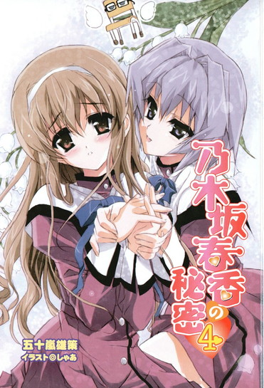
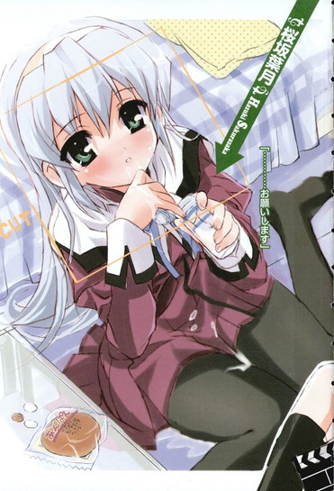
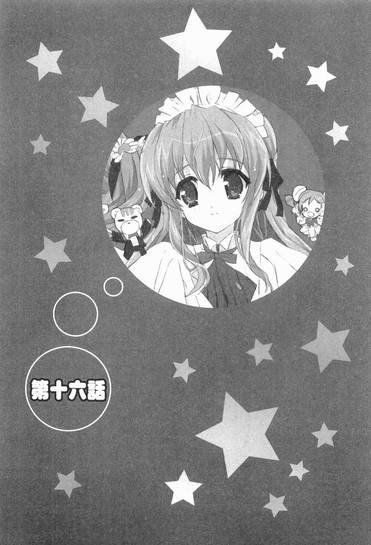

| [五十嵐雄策] 乃木坂春香の秘密04 | |
| 五十嵐雄策 | |
| (2015) | |
|
乃木坂春香の秘密 ４
五十嵐雄策
|
底本データ
一頁17行 一行42文字 段組１段
乃木坂春香の秘密④
容姿端麗で才色兼備、『白銀の星屑』という二つ名まで持つ超お嬢様、乃木坂春香。彼女を縛っていた例の秘密は『俺と春香の二人だけの秘密』にランクアップし、あとは毎日楽しく過ごせれば......などと思っていた矢先、事件は起こった。
あの椎菜が俺のクラスに転校してきて、一緒に文化祭実行委員までやることになり、さらにクラスの出し物は誰の意見か知らんがコスプレ喫茶に決定し、かなり先行き不安な展開に。それでも春香と衣装を選びつつ（まさか試着室であんなことになるとは思わなかったがな）、春香もやる気満々なので、あとは文化祭に向けて尽力するのみ......のはずが、仕事のせいで春香と話す時間も少なくなり──。
お嬢様のシークレットラブコメ第四弾（はあと）
五十嵐雄策
五十嵐雄策の秘密④。10月３日生まれのＯ型。第４回電撃ｈｐ短編小説賞最優秀賞を受賞し、文庫デビュー。その後、順調に執筆活動と司法試験の勉強を繰り返し、今では司法試験よりも執筆への情熱が上回ってきつつあるものの、今年の試験の結果も気になるところ......。
イラスト：しゃあ
しゃあの秘密④。ぼちぼち佳境に入ってきた『キョウハクＤＯＧ'ｓ』の原稿を入稿後、休みなく本稿の作業に突入。自宅に引きこもるも食料が尽き、編集部に救援要請の電話が......。


乃木坂春香の秘密 ４
第十三話
０
青天の霹靂という言葉がある。
霹靂とは雷のことで、それまで晴天だったところに突然雷が生じる現象から転じて、あまりに突然でびっくりする変動・事件やその衝撃ということを意味しているらしい。いやそりゃあ少し前まで晴れ空だったところにいきなり雷が落ちたりすれば驚くのは当たり前だと思うがな。
まあそれはともあれ、今現在の俺の心境を表すのにこれほど適した言葉は存在しないだろう。
なぜなら。
「天宮椎菜です。天気の天に宮城県の宮、椎の木の椎に、菜っ葉の菜って書きます。趣味はピアノと薙刀で座右の銘は『先手必殺』。よろしくっ！」
教壇に立ち、興味深げに教室を見回しながら笑顔でそう自己紹介をしている転校生。
十月にあるまじきここのところの暑さで俺のメガネにヒビが入っているんじゃなければ、あれはどう見ても椎菜だ。
天宮椎菜。
二ヶ月前の夏休みにロンドンでぶつかって、つい十日ほど前にアキハバラでぶつかった女子。
だがその椎菜が何だって目の前に、しかも転校生として立っているのか......それがさっぱり分からん。いやまあ転校生としてここにいるんだから当然転校してきたんだろうが、その現実にうまく俺の安物スポンジケーキライクな脳ミソが付いてこないんだよ。まさに「あまりに突然でびっくりする事件」そのものである。うーむ......
そんなタヌキに額をデコピンされたような気分で教壇を眺めていると、
「......ん、あれ？」
たまたまこっちに目を向けていた椎菜と、ばっちり目が合った。
「......」
「......」
しばしの沈黙。
そして、
「あー、裕人だ！」
俺の顔を指差して、椎菜が嬉しそうに叫んだ。
「うん、やっぱり裕人だよね？ えー、何でどうして、何で裕人がこんなところにいるの？」
「あ、いや」
どうしても何もここは俺のクラスなんだが......
「え、もしかしてここって裕人の通う学園なの？で、ここは裕人のクラス？ここにいるってことはそういうことだよね？へー、すごい偶然！こんなことってあるんだー」
教壇の上から大きな声でそう呼びかけてくる椎菜。
それを受けて、
「......何だ綾瀬のやつ、どうしてあんなに親しげに話してやがるんだ？」
「まさか春香様だけじゃなくてあのかわいい転校生にまで手を......？」
「この万年発情ヤロウが......」
教室中の視線が怒髪したハリセンボンのように俺に集中する。う、いてぇ......。チラリと窺うと、右斜め後方からは春香もぽかんとした顔で俺と椎菜の顔を見比べていた。
「あ～......なんか知らないけど裕くんの知り合いみたいね......」
と、それまで静かだった由香里さんがどうでもよさげにうめくような声を出した。
「いえ、知り合いというか......」
「だったら席は裕くんの隣に座ってちょうだい......。というかもう考えるのが面倒なんでそのヘンは適当にしちゃって......」
そんなことを言うと、いまだ前日の春香の誕生日パーティーでのアルコールを引きずるセクハラ音楽教師（最悪である）は、気だるげに教卓に突っ伏した。いや面倒ってあんた。
「え、えっと、裕人の隣って......」
一方の言われた椎菜も椎菜で戸惑っているようだった。
「そこ、だよねー......？」
俺の隣に目をやりつつ、高い準備金を支払って登録した芸能事務所が実在しなかったことを発見した女優志望の女の子みたいな顔で首をひねっている。
まあしかしそれも当然といえば当然だな。
なぜなら窓際であるところの俺の右隣には、すでにして朝比奈さんという女子が座っているんだから。
「ほら～、早くして......」
戸惑う椎菜に、教卓から顔も上げずに急かしてくるセクハラ音楽教師。
これは意訳すればつまりそのヘンはこっちで適当に調整しろってことなんだろう。相変わらず言葉が足りなすぎるというか大雑把なことこの上ないが、このアホ教師のそういうアレな性格についてはクラスメイトたちもよく了解しているようだった。
「じゃあ私、一個後ろにずれますね」
「あ、だったら私たちも」
朝比奈さんを始めとして、隣の列の女子たちがそれぞれ一個ずつ席を後ろにずれていく。見事な連携プレー（？）で、あっという間に椎菜のための席が空けられた。
「う、うーん、いいの、これ？」
何となく申し訳なさそうに俺の顔を見る椎菜。
「ああ、大丈夫だろ。てかこれくらいのことを気にしてたらここじゃ負けだ」
担任が自分探しリリカル世界史教師で副担任がいいかげんセクハラ音楽教師で、さらには『三馬鹿』や『狂犬』、『白銀の星屑』などの良くも悪くも個性的な人員を抱えるこのクラスにおいては、他では有り得ないイレギュラーな事態など割と日常茶飯事なのである。
「そ、そうなんだ。──ごめんね、迷惑かけて」
「あ、いいですいいです、そんな」
「ううん、ありがとう」
朝比奈さんたちに笑顔でお礼を言って、椎菜は空いた席（俺の隣である）に座った。
「それじゃ、改めてよろしくね、裕人」
「ああ」
椎菜の言葉にうなずく。
「はい......それじゃ椎菜ちゃんの紹介も終わったところで他の連絡事項を伝えます......」
由香里さんが濁った声でそう言った。
「まずは来週から遅刻取り締まり週間に入るので普段から遅刻しがちな人は正門から登校せずに裏門から来るようにしてください......。それに伴い持ち物検査とかも行われる可能性もあるので気を付けるように......。また最近、校内で隠し撮り及びパパラッチが出没しているという話があります。体育の時間や放課後の部活の時間などが特に狙われやすいということなのでみんなも注意してください............美人なおねいさんもサービスショットやお約束のポロリを狙われないように気を付けないと......おえっ」
青い顔でそんなことを言う由香里さん。気持ち悪いんならムリして余計なことを言って胃腸を刺激しなきゃいいのにな。
「連絡事項は以上です......ですがそれに加えて、今日は残りの時間を使って文化祭実行委員を二人決めないといけません......」
その言葉に、それまでざわざわと騒がしかった教室内が途端にしーんと静かになった。
「文化祭実行委員はその名の通り約一ヵ月後に控えた文化祭に向けて色々と準備などを取り仕切る重要な役職です............だれかやりたい人はいませんか？自薦他薦は問わないのでやりたい人がいたらどんどん手を挙げちゃってください......」
「......」
沈黙。
だれも皆、面倒な実行委員の仕事など自分から進んでやりたくはないのである（俺も含めて）。
「......いませんか～？ ......やりがいがあって周りから尊敬されて社会のためになる、とっても楽しくステキな仕事ですよ～......」
「......」
やはり沈黙。
というかそんなどこかの胡散臭い仕事紹介（表向きはクリーンで給料もいいが実は非合法、とか）みたいな紹介をされてもだれも手を挙げるわけがない。
何となく互いの顔をちらちらと見合うような微妙な空気が漂う。
そのまま三分ほどが経過し、
「......あー、ダメ、もう限界............うぷっ」
何かに耐えかねたのか、由香里さんが教卓の上でもぞりと動いた。
「こうなったらもうだれでもいいわ......早く決めないとおねいさんの身体がもたないもの......ここはだれかよさそうな子を適当に見繕って............そうね、椎菜ちゃん、やらない？」
「え、あたしですか？」
突然の指名に、椎菜が目を丸くする。
「でも、転校してきたばっかりなのに......」
「......うん、だからこそよ～......ええとほら......転校してきてすぐだからクラスに馴染むためにはこういう仕事をやった方がいいでしょ......？クラスの雰囲気もつかめるし、それに学校のこともよく分かるし......。......間違っても、これ以上時間をかけられるとリバースしてきて何かが産まれそうだとか、さっさと終わらせてゆっくり寝たいから適当に決めちゃおうだとかじゃないからね......うっ」
一瞬白目をむく二日酔い女教師（二十三歳独身）。
「......」
......いや間違いなく後者が本音だろ。
いつもダメ人間なセクハラ音楽教師は、それに輪をかけて今日はいつもの三倍増しで本当にダメ人間だった。
「うーん、文化祭実行委員かぁ......」
そんなダメ人間がダメ思考の末に出したダメ意見に、椎菜は真面目に考え込んでいるようだったが、
「──分かりました。あたし、やります」
やがて顔を上げ、そう言った。
「椎菜？」
「うん、センセイの言う通り、早くクラスに馴染むにはこういう学校行事に積極的に参加した方がいいですもんね。それにけっこう楽しそうですから！」
明るい声でにっこりと笑う。
「さすが椎菜ちゃん、偉いわ～......うん、おねいさんは感動しました......。じゃ一人目は椎菜ちゃんで決定ね...............あ、ちなみに後の一人は椎菜ちゃんが決めちゃっていいわよ............ん、でも転校してきたばっかりだからだれがだれだかなんて分からないか......だったら──」
微妙に顔を起こし教室内を見回した後に、死んだサバのように濁った目でこっちを見る。
何だか、すげぇヤな予感がした。
「裕くんでいいわね......よく分かんないけど椎菜ちゃんと知り合いみたいだし、部活とかもやってないから毎日ぶらぶらと犬のふぐり（野草の名前）みたいにヒマそうだしね～......」
「......」
失礼かつ微妙に下ネタなことを言いやがる。
つーか部活をやってないとはいえ、毎日毎日あなたやその親友（我が姉）の世話があるからこれっぽっちもヒマじゃないんだがな。
「椎菜ちゃんも、裕くんならいいわよね～......？」
「え？ でも......」
「はい、じゃ決まりね......というわけで、文化祭実行委員はめでたく椎菜ちゃんと裕くんで決定しました......みんなもいいですね？」
異議なーし！ との声とともに周りからパチパチと拍手が巻き起こる。
いや、俺の意見とかそういうもんはまったくもってスルーなのか......？
そんな心中の抗弁も虚しく、
「......それではこれでロングホームルームを終わります。......あとは自習にしますので、適当に他のクラスに迷惑にならない程度にだらだらと時間を潰していてください......私は体調が悪いため保健室で仮眠を取ることにします。なのでその間に何か問題が起きたらそれは自分たちで解決して決して私の安眠をジャマしないようにしてください......ていうか、したらオシオキするから」
最後までとことんダメ人間なことを言って、由香里さんは死にかけたウミウシみたいな足取りで教室を出て行った。
「はあ......」
そのどんよりとした背中を見送りながら、なんかすげぇ疲れた気分でため息を吐いていると、
「──ごめんね、裕人」
隣から椎菜がそう話しかけてきた。
「え？」
「なんかあたしのせいでムリヤリ文化祭実行委員にさせられちゃったみたいで......」
ちょっとばかりすまなそうに言う。
「いや、あれは椎菜が悪いわけじゃない」
「でも......」
「あんな風に言われちゃどうしようもないだろ？だから椎菜が気にすることないぞ」
というかどう見ても、責任は自分がさっさと寝たいがために適当に押し付けたあの音楽教師にあるのは一目瞭然である。
「裕人......」
「それに今まで一度も委員会なんてもんはやったことがなかったからな。たまにはこういうのも面白いかもしれん」
「......ありがと。そう言ってくれるとかなり助かるかも」
椎菜がほっと安心したように笑った。
「うん、でもそうだよね、決まっちゃったものを今さらどうのこうの言ってもしかたないし......だったら、これからをどうやって楽しくやっていくかを考えた方がよっぽどいいよね」
「ああ、その意気だ」
「うん。よーし、がんばろうね、裕人！」
大きくうなずく椎菜。その笑顔には、もうさっきまでの憂いの色は感じられない。
まあ正直なところ文化祭実行委員なんて面倒は面倒なんだが......この常に前向きで真っ直ぐでポジティブシンキングな椎菜となら、そう悪くもないかもしれんな。
こうして、半ばなし崩し的に文化祭実行委員をやることになっちまったわけだが。
まさかこの『文化祭実行委員』が、後に大きな波乱の要因となろうとは、この時の俺には欠片も予想することはできなかったんだよな。
１
「んー、それにしても驚いたなー」
自習の喧騒の中、椎菜が改めて俺の顔をまじまじと見て言った。
「まさか転校先が裕人と同じ学園で同じクラスで、しかも隣の席になるなんて。これってすごい偶然だよね？映画みたい」
「......それはこっちもビックリだ」
そもそもアキハバラで再会（十五秒ほど）した時もアレだったが、よもや学園で三度目の邂逅をすることになろうとはね。まあ今になって思い返してみればあの時椎菜は荷物やら生活用品やらがどうこうとか言っていたから、冷静に考えればこういう事態もあり得ると想像できたのかもしれんが......。いや、ムリか。
「でも良かった。転校は初めてってわけじゃないけど、ちょっとだけ不安だったんだ。やっぱり知ってる人がいると心強いものね」
こっちを見ながら明るく笑う。ふむ、このフレンドリーが服を着て歩いているような元気娘でもそんな風に不安になったりするもんなんだな。
「あ、そだ。びっくりといえばさ、裕人はあの時、何であんなに慌ててたの？」
「あの時？」
って、どの時だ？
「ほら、アキハバラで会った時。なんか闇金業者に内臓を狙われてる連帯保証人みたいに急いでたじゃない。せっかく会えたんだからあたしはもう少し裕人と話がしたかったのに、一瞬でどっかに行っちゃうし」
「あー......」
アレか。
何というかアレには色々と事情があるんだが、それを説明するとものすごく長くなる＆ややこしいことになるに違いない。あそこにいた理由やら信長のことやらも絡んでくるだろうし。
口ごもる俺に椎菜はさらに続けた。
「それにいっしょにいた小柄な女の子、ちらっと見ただけだったけどすっごくかわいい子だったよね。あ、もしかしてカノジョとか？でもその割には歳がアレだったしなー。妹さん......にしても似てなかったよね？うーん、だったら──」
サブマシンガンみたいに立て続けに畳み掛けてくる。うーむ、相変わらずアグレッシブというか何というか。
そんな椎菜の攻勢に少しばかりたじろいでいると。
くいっくいっ。
「──ん？」
ふいに、後ろから制服の裾が引っ張られるのを感じた。
何だ？ まさかポルターガイスト現象──？
──なわけはなく、振り向くとそこには机の陰に隠れるようにして床にちょこんとしゃがみ込む春香の姿があった。
「春香？」
こんな風に自習時間に春香が俺のところまで来るなんて珍しい。何かあったのか？
尋ねると春香はこっくりとうなずいて、
「あの、お話し中に失礼しますです。実は少しお訊きしたいことがあって......」
「訊きたいこと？」
「はい。えと、そちらの天宮さんって、もしかしてロンドンのコンクールに出ていた──」
何かを言いかけ、
「あ、あれ、そこにいるのって......まさかとは思うけど乃木坂さん!?」
それよりも早く、椎菜がそう声を上げた。
「え？」
「う、うそ！ どうして乃木坂さんがここにいるの!?え、本物だよね!?」
「いやどうしても何も」
ここは俺のクラスであると同時に春香のクラスでもあるからな。
興奮する椎菜にそのことを伝えると、
「え、乃木坂さんも白城学園だったの!?すっごいお嬢様だって聞いてたからてっきりどこかのハイソな女子校にでも通ってるものかと......あ、でもそう考えれば裕人がロンドンに来てたのも納得できるか。クラスで応援に来てたんだよね？」
「あ、あー、まあ、な」
本当は違うんだがめんどくさくなりそうなのでここでは割愛する。ヘタに説明しようとして他のクラスメイトたち（武闘派親衛隊多し）に聞こえでもしたら、俺の生命存続にも関わってくるからな。
「そっかー、そうなんだ」
椎菜はうんうんと納得したようにうなずき、
「でもウソみたいだよ。まさかあの乃木坂さんと同じクラスになれるなんて......あ、乃木坂さん、あたしは天宮椎菜──って、それはさっき自己紹介の時に言ったか。えっと趣味は薙刀とピアノでいちおうピアニスト志望。乃木坂さんのことは昔から憧れでもあって目標でもあって──あー、なんかうまく言えないけど、とにかくよろしくねっ！」
にかっ！ と笑うと、春香の手を握りながらぶんぶんと振り回した。
「え、えと、はい。こちらこそよろしくお願いします」
その勢いに、春香も若干圧され気味のようだった。小鳥のようにこくこくとうなずきながら戸惑ったようにちらちらと俺の顔を見る。まあムリもないな。
「あー、椎菜。春香もびっくりしてるみたいだからもう少し──」
と、そこで。
「──ねえねえ、天宮さん！」
後ろから椎菜を呼ぶ声が聞こえてきた。
「ん、あたし？」
椎菜が振り返る。その先には転校生に対する興味で溢れんばかりの目をしたクラスメイトたちの姿があった。
「そうそう。あ、私は五月、水谷五月っていうの、よろしくね。ねえ、天宮さんってどこから来たの？」
「え、北海道からだよ」
「わ、北海道って、札幌とか？」
「ううん、あたしは小樽なの。知ってるかな、運河とかオルゴールとかで有名なところで──」
丁寧に受け答えする椎菜。
それを皮切りに、さらに何人ものクラスメイトたちがスルメに集まるアメリカザリガニのごとく群がってくる。
「天宮さんって何月生まれ？」
「あ、あの、趣味が薙刀なんですよね？だったらぜひ薙刀部に......」
「カレシとかいる？」
「あ、えー、えーとね」
あっという間に、椎菜の周りには黒山の人だかりができていた。
「天宮さん、大人気ですね......」
俺の背中で春香がつぶやく。
やはり皆転校生には興味があるのか、おそらくクラスの三分の一は集まっていそうな人だかり。それはまるでどこぞの城砦の壁のように俺たちの前に立ち塞がっていて、通り抜けるどころか話しかける隙もない。さて、これはどうしたもんか......
すると人垣の向こうで椎菜が、
『ごめん、また後で』
と口だけ動かしてそう言って、俺たちに向かって申し訳なさそうに顔の前で両手を合わせた。
どうやら現状ではこれ以上話をするのはムリそうである。
──まあ、仕方ないか。
もう少し色々と話したいこともあったが、転校生である以上こうなるのも仕方あるまい。今はまず椎菜がクラスに馴染むことの方が先決だろう。俺たちとばっかり話していてはそれもままならないしな。
というわけで、とりあえず春香とともにこの場から離れることにした。
「そういえば春香、椎菜のこと覚えてたんだな」
「え？」
椎菜から少し離れた教室の隅で、何となく訊いてみた。
「さっきロンドンがどうとか言いかけてただろ。あれってこの前の夏のコンクールのことだよな？」
「あ、はい。そうです」
春香がこっくりとうなずく。
「天宮さんのことはとってもよく覚えています。歳も近い感じでしたし、何よりすごくキレイな音を出されていましたから、印象に残っていたんです」
「へえ......」
そうなのか。椎菜が聞いたら喜びそうな台詞だな。
「──それより裕人さんこそ、天宮さんとお知り合いだったんですね」
春香がふいにそんなことを言った。
「自己紹介の時にそう言っていましたし、お二人とも名前で呼び合ってました。とっても仲が良さそうです」
「あー、まあ」
仲がいいというか、まだ二回しか会ったことがないんだが。
「仲が良いことはいいことです」
春香が本当に嬉しそうににっこりと笑う。
「......」
むう、相変わらず無邪気な笑顔だな。俺としては椎菜との関係にもう少しは何かを感じてほしかったりしなかったりするんだが......
そんな俺の気持ちを知ってか知らずか春香はそのままにこにこ顔で、
「ロンドンでお知り合いになられたんですよね？えと〝なんぱ〟、ですか？さすが裕人さん、どなたともすぐに親しくなれてうらやましいです」
「ぶっ!?」
思わず肺の中の空気を全部噴き出しそうになった。ナ、ナンパって、何を言い出すんだいきなり!?
突然の意味深な発言に触角を失ったイナゴのごとくコンフュージョンする俺に、だが春香はきょとんとした顔でこんなことを言った。
「え、違うんですか？ 〝なんぱ〟は男女が出会うための能動的な礼儀作法のひとつであり、紳士淑女のたしなみだとお母様に聞いたのですが......」
「......」
......いや秋穂さん。
あなたは自分の娘をどういう風に育てたいんですか......
「......違うって。ナンパなんてしてない。ていうか、あの時に楽譜を貸してくれたのが椎菜だったんだよ」
「え、そうなんですか？」
「ああ」
「あの時の......」
春香が驚いたように目を丸くした。
「で、でしたらお礼をしないと......あの楽譜と裕人さんのおかげで、私は緊張をほぐすことができたんですから」
両手をぐっと握り締めて身を乗り出してくる春香。どうやらあの時のことをよっぽどありがたく思っていたみたいだ。まあそれ自体はいいことなんだが......
「あー、だけど今はムリだろ」
ちらりと椎菜の席の方を見る。
椎菜は今現在も多数のクラスメイトに取り囲まれて質問攻めにあっていた。とてもじゃないがゆっくりと話ができるような状況ではない。ましてや押しの弱い春香じゃ、近づくことすら難しいだろう。
「そうですね。早くお礼を言いたいのですが......」
春香がしょんぼりと顔をうつむかせる。気持ちは分かるが、ここは急がばその場で三遍回ってワンと鳴けだ。
「とにかく少し待とう。な？」
物言いたげな春香に言い聞かせる。
春香は少しの間ちらちらと椎菜の方を見ていたが、やがて、
「......はい、です。それじゃ、私は席に戻りますね」
「ああ、後でな」
「はい」
ぺこりと頭を下げて、少し残念そうに春香は自分の席へと戻っていった。
まあ昼休みくらいになれば少しは状況もマシになるはずだ。いかに転校生が物珍しいとはいえ、昼までに三回もの休み時間を挟めばそれもいいかげん収まるだろう。そう軽く考えていたのだが。
２
ところが。
昼休みになっても、椎菜の周りの人だかりは消えることがなかった。
「あ、やっぱり天宮さんもそう思う？」
「うん、学食で食べるカレーって何だか妙に美味しいよね。あの安っぽさがたまらない感じ」
「あはは。ツウだね、椎菜ちゃん」
「でもそれすごい分かるな～」
それどころか、むしろ人の量は朝よりも増えているようだった。
春香との会話の場を作るべくいっしょに昼メシにでも誘おうかとも思ったのだが、やはり声をかける隙さえこれっぽっちもなかったりする。これはまあ椎菜が転校生だというよりもむしろその人類皆兄弟姉妹なパーソナリティが強く影響してるんだろうが、何にせよ俺たちが声をかけづらいという事態に変わりはない。
「それじゃ行こうか、天宮さん」
「うちの学食はあっちの別棟にあってね......」
「値段もそんなに高くないんだよ」
どうしようか考えている内に、椎菜はそのままクラスの連中に連れられて学食へ行ってしまった。
「天宮さん、まだお忙しそうですね......」
隣にやって来た春香がぽつりと言う。
「まあクラスに馴染んでるのはいいことなんだがな......」
なかなか春香と引き合わせる機会を作れないのが少しばかりもどかしくもある。
「──とりあえず今は諦めるか。さすがに学食まで追いかけていくのもなんだし、また放課後にでも声をかけるしかないだろ」
「ええ、残念ですけれど......」
しおれた白百合みたいにしょんぼりと春香。一刻も早くお礼が言いたくて仕方がない様子である。
「まあそのうち何とかなるさ。そこまで焦らなくても──」
そんな春香をフォローしようとして、
ギュルギュルギュル！ っと、
俺の腹の虫が発情期のガマガエルのごとく元気に鳴った。
教室中に響くほどのでかい音だった。
「......」
「......」
一瞬、沈黙。
「あー、これはだな......」
今朝は酔っ払い二人の世話に時間を取られたせいでロクに食べていない。おかげで三時間目の途中くらいからずっとこんな調子なのだ。
春香がくすりと笑う。
「ふふ、裕人さん、お腹が空いてるんですね。──あ、そういえばもうこんな時間です。葉月さんたちが待ってると思います。中庭に行きませんか？」
「えっ あ、ああ。そうだな」
そういえば今日は、春香たちといっしょに昼メシを食うことになってたんだっけな。朝一番に大きなイベント（椎菜の転校）があったため、すっかり忘れてた。
「それでは行きましょう、裕人さん」
「ああ」
というわけで朝の約束通り春香と二人で中庭へと向かったわけだが。
「ふんふん、なるほど。あのアキハバラの時のおね～さんが転校生で、さらにはおに～さんの知り合いだったわけか～」
「偶然の再会というやつですね～」
「............ドラマティックエンカウンター？」
「......」
なぜかそこには無口メイド長さんとにっこりメイドさんの他に、笑顔で弁当をぱくつくかしましツインテール娘までもがいた。
「そういうことってほんとにあるんだね～。う～ん、すごい偶然。あ、でもそれって考えてみれば、お姉ちゃんにとってはライバル出現ってことだよね？」
「え、ら、らいばる？」
「違うの？ だってそのおね～さん、おに～さんと仲がいいんでしょ？」
「え、そ、それは......」
美夏の言葉に春香が困ったような表情になる。
「というか裕人様、浮気は良くないですよ～」
「............二股はダメです」
「......」
「浮気か～、そうだよね～。アキハバラの時もな～んか怪しい雰囲気だったし。お姉ちゃんもうかうかしてられないな～」
「え、えと、あ、あの、その......」
「古代ヨーロッパのとある国では、浮気をした男の人は切断の刑だったそうですよ～」
「............ちょんぎる？」
「............」
さりげなく非常に怖い台詞が一部吐かれたような気がしたんだが、それはひとまず置いておくとして。
「......いや、何でいるんだ？」
真っ赤な顔をした春香の周りで、実に楽しげにきゃっきゃっと声を上げながら俺の今後の処遇について話し合うツインテール娘たちに問う。
「ん～？ 何でって、沙羅さんの〝戦乙女〟で来たんだよ。今日は〝冬将軍〟は洗車中だっていうから。〝戦乙女〟は快適だったな～」
「そうじゃなくてだな......」
別にここに来た手段を訊いているのではなく（てかそんなもん、校庭のど真ん中に堂々と着陸しているステルス戦闘機ミサイル付きを見れば容易に察しは付く）、なぜ学校の違う美夏が当然のごとくココ（白城学園中庭）にいるのかってことを訊いているのである。
すると美夏は、
「え～、だってわたしもお姉ちゃんとおに～さんといっしょにお昼ご飯を食べたかったんだも～ん♪」
実にあっさりとそんなことを言った。いや〝も～ん♪〟ってな......
「別にそれくらい、い～でしょ。それともなに、わたしがいたらお邪魔だったかな～？左右に葉月さんと那波さんをはべらせてお姉ちゃんといちゃいちゃして、ぷちは～れむ気分を味わいたかったとか～？」
「いやそういうわけじゃ──」
何だその発想は。
「じゃ、い～よね。ほら、おに～さんもこんなにかわいい美夏ちゃんといっしょにご飯が食べられて嬉しいでしょ？えへ♪」
「......」
相変わらず口の減らないお嬢様（次女）だった。まあ別にいいんだけどな......
「ま、細かいことは気にしちゃだめだって。それよりほら、おに～さん、全然食べてないじゃん。せっかく葉月さんたちが腕によりをかけて作ってくれたんだから、ちゃんと食べてくれないときっと泣いちゃうよ？」
「裕人様、いらなくなったからって私（の作ったお弁当）をゴミのように捨てるんですね～、えっえっ......（嘘泣き）」
「............泣きます」
「......いや、食べますよ」
だからそこの無口メイド長さん、そんな捨てられた仔犬みたいな切ない目で見んでも。
「ん、それじゃおに～さん、あ～ん（はあと）」
美夏が、おままごとにおけるお嫁さん役みたいな手付きで玉子焼きを摘んだ箸を差し出してきた。
「......」
「あ～ん（はあと）」
「............いちおう訊くが、何のマネだ？」
ものすごく疲れた気分で尋ねると、美夏はにんまりと笑って、
「何って、あ～ん（はあと）、だよ。だって大切な男の子といっしょにご飯を食べる時にはこうするって決まってるんだもん♪ね、お姉ちゃん？」
「あ、え、ええ」
春香がこくこくとうなずく。
「ほらほら、お姉ちゃんもいっしょにやるよ。あ～ん（はあと）」
「は、はい。た、確か左手は斜め下三十度で......。あ、あ～ん、です......」
両脇から春香と美夏が箸を差し出し、
「う～ん、これは私たちもやっておくべきでしょうね～」
「......はい」
それを見た那波さんと葉月さんまでもがなぜかそんなことを言い出し、
「裕人様、あ～んです～」
「......あーん」
それぞれやはりオカズを摘んだ箸を差し出してくる。
「あ、あー......」
い、いったいこれは何なんだ？
唐突に生じた両手に花どころかあまりに百花繚乱（？）な状況に、どうすりゃあいいんだか分からずうろたえるしかない俺に、
「はいおに～さん、あ～ん（はあと）」
「あ、あ～んです、裕人さん（一人だけ顔を真っ赤にしつつ）」
「あ～ん、ですよ～」
「......あ～ん」
美夏、春香、那波さん、葉月さん。
四方向から色とりどりの箸が迫ってくる。いやもう何が何だかさっぱり分からん。
こうして、昼休みは差し出される箸と「あ～ん」カルテットとともに終わったのだった。
３
で、ようやく椎菜とコンタクトが取れたのは、掃除も終わって教室がすっかり放課後気分になったあたりだった。
この頃になるとさすがに椎菜の周りに群がるクラスメイトの数もだいぶ少なくなり、春香を連れた俺でも簡単に近づけるくらいの状況になっていた。
「椎菜ちゃん、じゃあね～」
「うん、由貴もまた明日！」
「じゃ頼まれた本、明日持ってくるね」
「あ、よろしくね、ばいばい良子」
教室から出て行くクラスメイトたちに笑顔で声をかける椎菜。いつの間にか名前で呼び合っているのはさすがフレンドリー娘といったところか。
「椎菜」
それにさらに俺が声をかける。図式にすると俺→椎菜→クラスメイト澤村さん、みたいな感じだ。
「あ、裕人。なーんか久しぶりって感じだね」
こっちを向き、椎菜がぱたぱたと手を振った。
「まあな。六時間ぶりくらいか？」
「んー、だいたいそれくらいかも。朝のホームルーム以来だから」
さすがに転校生に対する質問攻勢に疲れたのか、少し苦笑気味に答える。
「だけどおかげでだいぶクラスにも慣れてきたよ。みんな楽しいし、いい人たちばっかりだし。ちょっとラッキーだったかな」
「そうか」
それはいいことだな。まあ椎菜の性格ならどこに行ってもだれが相手でも立派にやっていけるような気もするが。
「ところで椎菜、これから時間あるか？」
一通り前振りを済ませた後、本題に入る。
「時間？ うん、平気だよ。転校手続きとかは朝のうちに済ませちゃったから、特にやらなきゃいけないこともないし」
笑顔でうなずく。
「ならちょっといいか？ 春香が話したいことがあるってな」
「乃木坂さんが？ わ、何かな？」
そこで俺の背中に仔コアラのように張り付いている春香に気付き、椎菜が嬉しそうに声を上げた。
「あ、あの」
「ん？」
「え、えと」
春香はもじもじと胸の前で指を絡めながら椎菜の顔を見ていたが、やがて。
「あ、私、天宮さんにお礼が言いたくて......」
タンポポの葉擦れのような小さな声で口を開いた。
「お礼？」
「はい、ロンドンの時はとってもお世話になったみたいで......」
春香のその言葉に、椎菜は一瞬首をかたむけて、
「お世話............あ、もしかしてあの楽譜のこと？いいっていいって、あんなの大したことじゃないんだから」
あはは、と手をひらひらさせながら笑った。
「え、で、でも......」
「ほんといいんだって。あの時は使わない楽譜だったし、乃木坂さんの役に立てたなら本望だよ」
「そ、そうなのですか？」
「うん。だから気にしないで。ねっ？」
椎菜がぱちりと片目をつむる。
「......そう言われるのでしたら──分かりました。でもこれだけは言わせてください。天宮さんの楽譜のおかげで本当に助かりました。ありがとうございました」
ぺこりと頭を下げる春香。
椎菜はちょっと照れくさそうな顔をしていた。
さて、これでいちおう春香が椎菜にお礼を言うというミッション（？）は無事に終了したわけだが、このまま「じゃあまたな」ってのも少しばかり味気ないだろう。もう少し椎菜と春香が話をする時間を作ってもやりたいし。
なので一つ、提案してみることにした。
「──なあ椎菜、もう学園を回ってみたりはしたか？」
「えっ？ ううん、まだだよ。学食とか一部は教えてもらったけど」
ふるふると首を振る。
だろうな。昼休みだけではまあそれくらいがいいところだろう。
「だったらこれからいっしょに色々と回ってみないか？よければ案内するぞ」
「え、いいの？」
椎菜がぱっと表情を輝かせる。
「ああ。春香も大丈夫だよな？」
「はい、だいじょうぶです。今日はお茶のお稽古がありますけれどそれは夜からですし......楽譜のお礼も兼ねて、ぜひ案内させてくださいです」
笑顔でそう言ってくれた。
「じゃあ決まりだ。──椎菜、どこかリクエストとかはあるか？」
「うーん、そうだなー。特別教室とかあったら場所は覚えときたいし、あと購買とかも知っとかないと不便だし......あ、でもまずは音楽室かな。やっぱりどんなピアノが置いてあるのかとか興味あるから」
椎菜はそう言った。
「分かった、音楽室だな」
「ばっちり案内させてもらいます」
「うん、よろしく頼むね！」
というわけで、音楽室へと向かうことになった。
音楽室は高等部校舎の最上階──五階にある。
五階の端っこの一番奥まった部分にある角部屋。そこは高等部でピアノが置いてある数少ない部屋の一つであり、どこぞのセクハラ音楽教師の拠点でもある音楽室だった。
「着いたぞ。ここだ」
防音効果のある分厚い扉を開け中に入ると、まず視界に飛び込んでくるのが巨大なグランドピアノ。その奥に続くように生徒用の席が扇状に並んでいる。
周りの壁にはたくさんの有名な音楽家たちの肖像画が所狭しと飾られていて、その中でもまるで生けとし生ける者全てを呪うかのごとき目をしたベートーヴェン（額に『肉』の文字byセクハラ音楽教師）のソレが一際目立っていた。
「わ、すごい、これってベヒシュタインだよね！」
入り口横に、でん、と置かれたグランドピアノを見るなり椎菜が目を輝かせた。
「うん、やっぱりそうだ。本物なんて初めて見た......。ねえ、弾いてもいいのかな？」
「あ、はい、だいじょうぶです。生徒は自由に弾いていいことになっていますから」
「やった！ じゃさっそく──」
春香の言葉にうなずくと椎菜は一直線にピアノへと駆けていき、
「よーし、やるぞー！」
腕まくりをして、鍵盤へと指を躍らせる。
「さて、まずは──」
たちまち音楽室の中が音に包まれていく。
最初は静かな旋律。次に跳ねるような音。最後には教室中を震わせるような激しい響きになった。
「ベートーヴェン作曲、ピアノソナタ第十四番『月光』です。ステキですよね......」
胸の前で手を合わせながら、春香がそう説明してくれる。
「とってもキレイな音............裕人さん、知っていますか？ピアノの音色には弾いているその人の内面──その人の心の内やその時の心情が表れるものなんですよ」
「そうなのか？」
「はい。きっと天宮さんはとっても心がキレイで、とっても楽しい気持ちで弾いているんだと思います。そうじゃなければ、こんな音を出せないですもの」
「......」
だとすると春香の演奏があんなにも人の心を惹き付けるのは、春香の心がそれだけ魅力的だからなんだろうな──
──と言おうとしてやめた。さすがにそんなこっ恥ずかしいことを真顔で言えるほど、まだ俺は人生の酸いも甘いも知り尽くしてない。
その後も、椎菜は何曲か弾いた。
春香曰く、曲名は『幻想即興曲（ショパン）』『エチュード OP10-12 〝革命〟（ショパン）』『プレスト・パッショナート（シューマン）』とのことらしかったが、相変わらず俺にはさっぱり分からなかった。
「あー、気持ちよかった！」
演奏を終え、満足した顔で椎菜がぴょんとイスから降りる。
「ここのところ引越しの後片付けとかで忙しくて、なかなかピアノを弾くまとまった時間が取れなかったからなー。............あ、ってごめんね、なんか一人で先走っちゃって」
「いや、別に構わんぞ」
「ええ、とってもキレイな音でした」
「ほんとっ？」
「はい」
「わー、嬉しいな。あの『鍵盤上の姫君』乃木坂さんにそんなこと言われるなんて」
本当に嬉しそうな顔で、椎菜は屈託のない笑みを浮かべると、
「ね、乃木坂さんも何か弾いてくれない？」
春香の手を引っ張ってそう言った。
「え、私、ですか？」
「うんっ、ぜひ聴いてみたいな」
「え、えと......」
春香が困ったように俺の方を見る。
「いいんじゃないか？ 俺も聴いてみたいし」
そういえば、何だかんだでまだ春香のピアノをこんなに近くで落ち着いて聴いたことはないしな。
「そ、そうですか？ でしたら......」
遠慮がちにうなずき緊張した面持ちでピアノへと向かうと（手足が同時に出ていたが）、春香はゆっくりと鍵盤の上で指を動かし始めた。
──そして流れ始める柔らかな音色。
コンクールで聴いたものとは違う、穏やかな曲想。
だけどその音はやはりあの時と同じく心に直接染み渡ってくる響きで──
一瞬にして、音楽室がまるでコンサートホールへと変貌を遂げたかのような錯覚に襲われた。
「あー、やっぱりすごいなー」
椎菜が隣のイスに腰を下ろして息を吐いた。
「すごいってのは分かってたけど、まさかこれほどなんて。シューマン作曲、リスト編曲『春の夜』。こんなにキラキラした演奏、初めて聴いた。もう、悔しいなあ」
苦笑いを浮かべながら少しだけ悔しそうな顔をする。
「でもこうして乃木坂さんの演奏を聴いてみると、やっぱりここに転校してきて良かったなーって思えるよ。目標は身近にいればいるほど、高ければ高いほど燃えるものだしね」
「椎菜......」
そう言う椎菜の人懐こい大きな目に、一瞬だけ真摯な光が宿るのが見えた。本当にピアノに関しては真剣なんだな......
「──そういえば、椎菜は何でうちの学園に来たんだ？」
ふと疑問に思い、訊いてみた。
ここまで真剣にピアノに打ち込んでいて、しかもあんなでかいコンクールで二位を取るくらいだ。だったら白城みたいな普通の進学校に来るよりも、音楽高校なりもっと芸術に力を入れている高校なりを選んだ方が将来のためになるんじゃないのか？
「うん、ま、それも考えたんだけど......」
椎菜が腕を組む。
「色々事情があってさ。──あのね、北海道で師事してた先生から聞いたんだけど、ここの卒業生ですごい人がいるんだって」
「すごい人？」
「うん。芸大のピアノ科に主席で入学して、そのままトップクラスの成績を維持して卒業した伝説の『宵闇の独奏者』って人が。普通の高校出身で、特にすごい先生に師事してたわけじゃないのに、そんな風に有名になるなんてすごいと思ってさ。ずっと憧れだったの。で、今回たまたま父親が転勤でこっちに来ることになったから、そんなすごい人が通ってた高校に行ってみたいなって思って。それで便乗して付いて来ちゃったってわけ。まあ、お父さん一人じゃロクに食事の支度もできないから、そのヘンも考えてなんだけどね」
「へえ......」
なるほど、そういう理由があったのか。それならわざわざここを選んだのもうなずける。しかしうちの卒業生でそんなすごい人がいたなんて、初耳だな......
とその時。
『は～～～っくしょん！』
隣の音楽準備室から唐突に盛大なくしゃみの音が聞こえてきた。
「......」
場所といいこの周りをはばかることのないハデさといい、間違いなく由香里さんだろうな。そういえばあの人も白城学園の卒業生だって聞いていたが......
「......まさかな」
あのセクハラ教師に限ってそんなことは有り得まい。
それはもう、童話に出てくるみにくいアヒルの子が白鳥ではなく実はフェニックスだったりするようなもんだ。いや自分で言っててワケの分からん喩えだとは思うが、要するに確実に有り得ないってことを言いたいんだよ。
そんなことを考えていると、春香の演奏が終わった。
「ど、どうもありがとうございました」
ピアノの横でぺこりと頭を下げる春香。
「すごい良かったよ、乃木坂さん！」
「ほ、ほんとですか？」
「うん！ さすがはピアノをやってる人みんなの目標で憧れだけあるっていうか......目が覚めるみたいな演奏だった！感動しちゃったよ！」
「そんな、オ、オーバーです......」
春香が照れたように顔をうつむかせる。
「ううん、ほんとにすごかった。どうしたらあんな音が出せるのか想像もつかないっていうか......あ、ねえ、ちょっと指先見せてもらってもいいかな」
「え？」
返事を待たずに春香の手を取る。
「わぁ、きれい......すべすべで長くて整ってて......いいなぁ......この指からあの演奏が生まれてくるんだ。うーん、そう考えると何だか不思議な感じ......」
「あ、あの、あの......」
「あたしもこんな指だったらなぁ......ほんときれい......」
大事なものを扱うかのように春香の手を撫でる椎菜。むう、なんかあの一角だけ花が咲き誇る女子校のような微妙な空気が......
しばし、そんな男の俺にはどことなく声がかけづらい状態が続き、
やがて椎菜はぱっと顔を上げて、
「でもねっ、乃木坂さん」
「は、はい？」
「だけどあたしも負けないからねっ。いつかきっと今の演奏を──乃木坂さんを超えてみせるから！待っててね！」
イタズラっぽく笑いながら、そんなことを宣言したのだった。
４
「それじゃ、次は図書室を見たいかも」
音楽室を出て、椎菜に次のリクエストを訊いたところそんな答えが返ってきた。
何でも図書室で行われている楽譜の貸し出しに興味があって、どのくらいの品揃え（？）があるのかを見てみたいらしい。
まあ五階には音楽室以外に案内する目ぼしいところもなかったし、図書室はすぐ下の四階にあるためちょうどいいということで、リクエスト通りに向かうこととなった。
階段を下りてすぐの角を右に曲がる。そのまま廊下を進み図書室の入り口に差し掛かったところで、
「あー、裕人だー。おーい」
突然、後ろから呼び止められた。
「こっちこっち、僕だよー。マイブラザー」
相手の返事も待たずに一方的に大声で呼びかけてくる。このムダにでかい上によく通る声は......
「やー、裕人。元気にしてたー？ こんなところで会うなんて奇遇だねー」
「......」
予想通り、信長のやつだった。
いつものごとく美少年な顔立ちに能天気といえるほどの底抜けに明るい笑みを浮かべて、ワケの分からないことを言いながらブンブンと手を振っている。はあ......まためんどくさいところでめんどくさいやつが出て来たな。
そんな俺の気持ちもいざ知らず、信長は満面の笑みでこちらに駆け寄ってくると、
「ここで何してるのー？ 裕人が図書室に来るなんて珍しいよねー。──あれ、今日も乃木坂さんがいっしょなんだー。こんにちはー」
「え？ こ、こんにちはです」
突然声をかけられ、春香が戸惑ったようにぺこりと頭を下げる。まあ春香から見ればほとんど初対面みたいなもんだからな......
「えっとー、そっちの女の子は天宮椎菜さんだよねー？身長百六十センチ、誕生日は三月三日、趣味はピアノと薙刀。夏休みに行われたロンドン国際クラシックピアノコンクール第二位。北海道の小樽から転校してきたばっかりで──」
「ちょ、ちょっと、何でこの人、そんなことまで知ってるの!?ストーカー!?」
椎菜が驚いたように俺の顔を見た。
「あー、まあこいつは何というか......」
説明しようとして説明に困る。てか美夏の時といい、こいつについての予備知識がない人間にはやっぱりそういう類の人種（ストーカー）に映るらしい。
「あっ、そういえば朝のホームルームの時に上代センセイが隠し撮りが横行してるとか言ってたけど、まさか──」
ざざっ、とヒゲを抜かれそうになったネコのように一歩あとずさる椎菜。
「やだなー、僕はそんなことやらないよー」
と、信長は心外そうに首を横に振った。
「隠し撮りなんて邪道なんだよー。写真っていうのはやっぱり本人にちゃんと許可を取ってから撮るのが礼儀だからねー。そんなバカチンたちといっしょにしてほしくないなー」
なんか知らんがこの色んな意味でエキセントリックの代名詞みたいなやつの台詞にしては珍しく意外なほどに正論である。これは少しはこいつに対する評価を改めてもいいのかと思いきや。
「僕が隠し撮りをするのは、何かお願いする時とか相手をキョウハクする時だけって決めてるからねー」
「いやそれでも充分悪いわ！」
思わず突っ込んじまった。
基本的にはまあ悪いやつじゃないんだが、こういうところがあるせいで真正面からフォローしにくいのである。
「はあ、ったく......」
心の底からため息を吐く俺に、信長はまったくもって涼しい顔で、
「ま、とにかく僕は隠し撮りなんてしてないよー。ていうかー、それって今ちょっと話題になってるやつだよねー？」
「ん、ああ」
ホームルームで注意事項として伝達されるくらいだからな。
すると信長はウンウンとうなずき。
「ふーん、そっかー。やっぱり一般にはあんまり知られてないし、そういう風に思われるのも仕方ないのかもしれないねー」
「？」
「今の高等部には全学年に万遍なくかわいい子が揃ってるのも影響してるのかなー。平均レベルが高いっていうかー。『白銀の星屑』乃木坂さんは当然として、三年の織川さんとか一年の『絶対零度の氷姫』天王寺冬華とかー。裕人のクラスにも朝比奈さんとか『忠犬』八咲さんとかマニアックな層に人気がある子がいるし、由香里さんとかも中身はともかく外見だけならトップクラスだからねー」
「......」
結局こいつは何が言いたいんだ？うちの学園にはかわいい子が多いってことか？
「ま、僕としてはだれが選ばれても別にいいんだけどねー。やっぱ女の子は三次元よりも二次元の方が輝いて見えるしー。──あ」
と、そこで首から下げていた携帯の液晶画面を見て、
「もうこんな時間かー。そろそろ僕は帰んないと。今日は夜から『夜更かし悪魔ピロウちゃん』の放送あるからさー。それまでに色々と雑事を済ませておかないといけないんだー。──というわけで、じゃーねー」
そう早口で言うと、こっちの反応も待たずに信長は嵐のごとく去っていった。
「な、なんか、すっごい個性的な人だったね......」
椎菜が呆然とした表情でつぶやく。
「まあ、な......」
アレを個性的と表現するのはおそらくかなりの譲歩、または妥協案だとは思うがな。
しかしいつものことながら、プリンセスなんたらとかああいった情報はいったいどこから仕入れてくるんだろうね？
「わ、すごい！ 貴重な原典版とかがたくさんある！」
信長との第一種接近遭遇を経て本来の目的地である図書室へと足を踏み入れるや否や、歓声を上げて椎菜は楽譜コーナーへと走っていった。なんかよく分からんが、およそ普通の図書室には考えられないラインナップらしい。
「これも、あれも、それも......うわー、宝の山みたいっ！」
そんな声が聞こえてくる。
まるで大量のマタタビとカツオブシを前にした仔猫のようである。やれやれ、あの調子じゃしばらくは戻ってきそうにないな。
苦笑しながら、何となく周りを見渡してみる。
もともと利用率の驚異的低さで有名な図書室に、今は俺たち以外の人の姿はない。
独特な本の匂いのする広々とした部屋には椎菜の歓声が響くだけで、他に音もなく静かなものである。
──そういえば、春香と知り合う最初のきっかけとなったのはこの場所だったんだよな。
ふと思う。
『イノセント・スマイル』を借りに来た春香。それに続く図書室半壊事件。屋上への逃避行。
持ち物検査と職員室への呼び出し。屋上での春香渾身のイラスト（らしきもの）の閲覧。
『イノセント・スマイル』の返却と図書室不法侵入。
図書室から始まり、図書室でいちおうの終結を見せた一連の騒動。
半年前のあれらがなければ今の俺たちの関係はなかったわけだし、それどころか俺と春香はただのクラスメイトのまま言葉を交わすことすらなかったかもしれない。ふむ、そう思うとただの図書室も少しばかり感慨深いものがあるね。
と、
「ここが......始まりだったんですよね」
春香が隣でぽつりとつぶやいた。
「ここで初めて裕人さんと知り合って、その、『秘密』を分け合うことになって......だから、今の私たちがあるんですよね？そう考えると何だか不思議です」
はにかんだような顔で口元を綻ばせる。
「春香......」
春香も同じようなことを考えていたのが、何となく嬉しかった。ていうか春香も俺たちの今の関係を大事に思ってくれてるんだな......
「──あ、そういえばあれって......」
「え？」
ぽんと手を叩くと、春香が貸し出し台の近くにあるイスにとてとてと歩いていった。
「ほら、これ。私があの時、足を引っ掛けちゃったイスです。それでそのままカバンの中身をばら撒いてしまって......」
「ああ──」
あの図書室半壊事件の間接的なきっかけになったやつか。
「あの時は痛くて恥ずかしかったですけど......でも、あれがあったから裕人さんとお話をすることになったんですよね。だとすると、もしかしたらこのイスさんは私と裕人さんとを引き合わせてくれたキューピッドなのかもしれません」
イスの背を右手で撫でながら言う。イスのキューピッド。シュールな表現だ。まあ春香のことだから、そのキューピッドという言葉が意味するところについてはあまり深く考えていないんだろう。
「だから私、このイスさんに感謝しちゃいます。このイスさんのおかげで、今私は裕人さんといっしょに笑っていられるんですから」
俺の顔を見ながら、少し頬を赤らめてえへへ、と笑う春香。
「う......」
そのちょっと照れたような笑顔は殺人的にかわいくて、俺は自分の脳髄からアドレナリンがゴボゴボッと大量放出されるのを感じた。これはやばいだろ......
「裕人さん？」
「あ、いや」
興奮から思わず凝視しちまってたのか、不思議そうにこっちを見つめてくる春香に背を向け、内心のテンパリ具合を誤魔化すかのように俺は口を開いた。
「あ、あー、そうだな。俺もそう思うぞ。このイスがあったから春香といられるわけだし、そのおかげで今は毎日が幸せだ。なんつーか、縁結びみたいなもんだよな」
──って、俺何言ってんだ？ どこぞのインチキ臭い幸運招来アイテムの宣伝みたいな口上に加えて縁結びって、いくら脳内興奮物質のおかげで思考能力が限りなくゼロに近づいてたとはいえこんな真昼間からなんて恥ずかしい＆直接的な台詞を......
これはさすがにやっちまったかと恐る恐る春香の顔を見るも、
「裕人さん......」
だが春香はまったくもって動じることなく、俺の制服の背中をちょこんと摘んでこんなことを言ってきた。
「......はい。私も裕人さんと同じ気持ちです」
「え？」
「私もこのイスさんは縁結びだと思います。縁結びで、キューピッドさん。だって裕人さんといっしょにいられて、私もとっても幸せなんですから」
「春香......」
「えへへ、こうしていると何だか落ち着きます」
ふにゃりと笑って、遠慮がちにもう少しだけ身体を寄せてくる。
「......」
「......」
背中から伝わる温かく柔らかな感触。
心落ち着く優しい香り、窓の外から降り注ぐ光、穏やかな時間。
そんなどこか別世界のような空気に包まれていると、何だかここが放課後の図書室だってことを忘れそうになってくるな──
「裕人、乃木坂さん！」
「!?」
と思った直後、響いてきた声によって強制的に現実に引き戻された（約三秒）。
慌てて反重力兵器を照射されたかのように身体を離す。
「ほら見て見て！ すごいよ、探してた楽譜がいっぱいあった。これって全部借りてもいいのかな？」
両手にいっぱいの楽譜を持った椎菜が、ほくほく顔でこっちに戻って来た。
「これとかすごいレアなやつでこっちも今じゃほとんど見られなくて──あれ、どうしたの？二人ともなんか顔が赤いよ、だいじょうぶ？」
「い、いや、何でもない」
「は、はい。の～ぷろぶれむ、です」
「？ 何で英語なのかよく分かんないけど......ま、だいじょうぶならいっか。んしょっと」
そう言うと椎菜は、目の前にあったイス（キューピッドさん）にちょこんと腰を下ろした。
「あっ──」
春香が小さく声を上げる。
「え、何かまずかった......かな？」
椎菜が不思議そうに顔を向けた。
「あ、ご、ごめんなさい。そういうことじゃないんです」
「？」
「き、気にしないでください」
「??」
椎菜は最後までよく分からないという顔をしていた。ま、当然っちゃ当然なんだが。
５
さて、その後もいくつか学園内の目ぼしい場所を回り。
椎菜が最後にリクエストしたのは、体育館だった。
「体育館では薙刀部が練習をやってるっていうから、ちょっと見てみたかったの。麻衣ちゃんにも誘われてたし」
ちなみに麻衣ちゃんというのはうちのクラスの朝比奈麻衣のことである。
ほんの昨日までは俺の隣の席で今は斜め後ろの彼女は、普段の微妙に気弱な性格とは裏腹に薙刀部の副部長を務めているとか。人は見かけによらないとはこのことだな。
体育館では、薙刀部の他にバスケ部と卓球部が練習をやっているようだった。
天井からぶら下がっている巨大なネットで真ん中を仕切ったスペースを、半面をバスケ部が、もう半面を半分ずつ薙刀部と卓球部が使っている。
「へー、広い体育館だね。サッカーとかできそう」
椎菜が楽しそうにぐるりと辺りを見回す。
「設備もかなり整ってるし、運動にもけっこう力を入れてるのかな」
「ああ。そうだな」
いちおう文武両道がモットーの白城学園は、運動系の設備もそれなりに整っている。とはいっても音楽室や図書室などの文科系に比べればまだまだではあるが、そのヘンにはまあ色々と事情（寄付金by乃木坂家とか）があるんだろう。
「あ、椎菜ちゃん、来てくれたの？」
と、そこでこちらに気付いたのか練習していた朝比奈さん（胴着姿）が駆け寄ってきた。
「うん、せっかく誘ってくれたし、やっぱり興味もあったから」
「そうなんだ......嬉しいな。あ、よかったらちょっとやっていってみない？」
練習用の薙刀（もちろん刃は付いていない）を差し出して、朝比奈さんがそう言った。
「うーん、そだなー。でも案内してもらってる最中だし......」
ちらりと俺たちの方を見る椎菜。
「いや別にいいぞ。まだ時間はあるし」
「天宮さんの薙刀、見てみたいです」
「そ、そう？ だったらちょっとだけ──」
俺たちの手前遠慮していたものの、実のところかなりやりたかったらしい。椎菜は嬉しそうにうなずくと、薙刀を受け取り練習が行われている薙刀部スペースの中央へと進んでいった。
「じゃとりあえず、っと」
そうつぶやくと、手に持った練習用薙刀を正面に構える。
途端に、辺りの空気がすっと静まり返ったように思えた。
流れ出す静謐な空気。
椎菜の薙刀の動きに伴い、周囲の風がゆっくりと舞い始める。
「──はっ！ やあっ！」
響く掛け声と薙刀が空を切る音。
「たあっ！」
一連の動作にまったくムダがない。素人の俺が見ても達人級のそれだとはっきりと分かる、まるで流れる水のような見事な動きだった。
やがてひと通り型のようなものを終えると、椎菜はふーっと息を吐いて、
「はい。こんなもんかな」
「し、椎菜ちゃん、すごいよ！」
朝比奈さんが感激の声を上げる。
「経験者だっていうのは聞いてたけど、こんなにすごいとは思わなかった！師範代級だよ！」
「えへへ、いちおう小さい頃からやってるしね。父方のお祖父ちゃんの家が薙刀道場なんだ。『天宮神灯流槍術』。だからこれくらいは、ね」
椎菜が照れたように頭に手をやった。ほめられて、まんざらでもないようである。
「すごい......かっこいいです、薙刀......」
一方、俺の隣では春香も胸の前で両手を握りしめてそんなことをつぶやいていた。何だ、春香も薙刀が好きなのか？そういえば春香は古武術をやってたし、そういった武道系のものに興味を持ってもおかしくないのかもしれんな......などと思っていると、
「『ノクターン女学院ラクロス部』に出て来るヒロイン『春琉奈』様も薙刀の達人なんです。だから私も昔から憧れていて......」
「......」
まあ、何というか実に春香らしい理由だった。
「いいなあ、薙刀......ステキだなあ......」
大好物のオヤツを前にして「待て」の練習をさせられている仔犬みたいに物欲しそうな目をしていた春香に、
「あ、よかったら乃木坂さんもやってみますか？」
朝比奈さんが声をかけた。
「え、いいんですか？」
春香が目を輝かせる。
「はい。少しでも薙刀に興味を持ってくれた人は大歓迎です」
「ありがとうございますっ。ぜひお願いします！」
で、朝比奈さんに連れられて、春香も薙刀部スペースへと歩いていった。
「ええとですね、ここをこういう風に持って──」
「あ、こ、こうですか？」
「そう、そこをそうやって、うんそんな感じ」
「えいっ、えいっ」
「あ、でももう少しだけ力を抜いた方がいいかな」
「わ、分かりました。えいっ、えいっ」
「そうそう。さすが乃木坂さん、筋がいいです。何をやってもすごいんですね」
朝比奈さんの指導の下、春香は一生懸命な顔で薙刀を振るう。
その横では椎菜が、他の薙刀部の部員に何やら型を教えている。
何となく、今までの春香とのやり取りでは見ることのなかった体育会系な光景。
小窓から射し込む光の中でさらさらと髪が踊り、ひらひらと制服のスカートが微妙な揺れを見せる。
まあたまにはこんなのもいいかもな......と、しばしそんな放課後の部活的な光景に見入っていて。
「──ん？」
視界の隅に、何やら怪しげなモノを見つけた。
体育館の隅。用具入れ倉庫の近く。
なぜかそこに、どでかい跳び箱（八段）が三つほど並んで置いてあった。しかもその三つが三つとも、不自然に春香たちの方を向いている。
「......」
......何だあれは？
体育館にいる他の生徒たちは部活に集中していて気付いていないみたいだが（というか俺もさっきまで気にも留めてなかったんだが）、冷静に考えてみればアレはオカシイ。てかあからさまにアヤしい。不審に思いもっとよく見てみると──
「......」
跳び箱の隙間から何やらキラリと光るモノが見えた。
あれはまさか──
即座に頭に浮かんだのはホールムールで由香里さんが言っていた「隠し撮り」の文字。
何ともマヌケな姿だが、あの中に人が入っていて春香たちのことを密かに撮影しているとなれば、この状況にも説明がつく。もしそうなら断固として放置しておくわけにはいかない。
「......」
俺はこっそりと後ろから跳び箱に回り込むと、一気に三つ全てのフタを開けた。
「──あ」
中にいたのは、デジカメ（望遠レンズ付き）を構えた制服姿の男たち（×三）。
その怪しく銀色に輝くレンズは、今まさに春香や椎菜たちの方へと向けられているところだった。
「お前ら......」
「ヤ、ヤベ！」
「逃げるぞ！」
「そんな、何で僕たちの完璧な擬態工作が......」
跳び箱の中から飛び出し、隠し撮り男たちはクモの子を散らすように一斉に逃げ始めた。
「待て！」
あれのどこが完璧な擬態工作なんだっていう突っ込みはとりあえず置いておき、とにかく男たちを捕まえるべく手を伸ばす。
「は、放せ！」
「く、くそっ！ ここで俺たちが捕まるわけには......」
「僕たちは怪しい者じゃない！ え、ええと、なんというか、ただの跳び箱検査委員だ！だから......のわっ！」
「逃がすか！」
身体ごと飛び付くことで何とか一人は取り押さえることに成功したものの、だが残りの二人は強引に俺の手を振り払い、デジカメを抱えたまま体育館の真ん中を突っ切って出口へと走っていく。
その進路上には。
「えと......？」
「な、何、この人たち？」
春香と椎菜がいた。
「そいつら、隠し撮り犯だ！だれか先生に──」
「え、隠し撮りって......？」
「この二人がっ？」
春香はよく事情が呑み込めていない顔でゆるりと小首をかたむけ、椎菜はキッと隠し撮り男たちを睨む。
「ど、どけっ！」
隠し撮り男たちは、両腕を振り回しながらそんな春香たちの間を強引に通り抜けようとして。
次の瞬間。
めきょっ!!
中身の詰まったカボチャを木刀で思いっきりぶっ叩いた時のような、果てしなく鈍い音（×二）が体育館内に響き渡った。
「なっ......」
続いて体育館の上空に舞い上がる二つの影。
まるで竜巻に巻き込まれたゴミのようなそれらはギュルギュルとキリモミ状に回転しながら五メートルほどの高さまで到達した後、そのまま引力に従ってひと夏の短いきらめきを終えたセミのようにボトリと床に落下した。
「......」
一瞬、何が起こったのか分からなかった。
ただ目の前には薙刀を振り切った体勢の椎菜と春香の姿。
風圧でふわりとスカートの裾がひるがえり、瞬間的にちらりとその奥（×二）が視界の隅に入ってしまい呆然としていた俺は──
「ど、少しは反省した？ 隠し撮りなんてする人にはいいクスリでしょ」
「あ、す、すみません。と、とっさのことでつい......」
「──！」
椎菜と春香、二人の声で我に返った。
「これに懲りたらもうこんなことはやめなさいよね。知らないうちにこっそり写真を撮られてるなんてサイテーなんだから」
「ほ、ほんとにすみませんです......」
腕を組んでそう言い放つ椎菜とすまなそうな顔でぺこぺこと謝る春香。
その足下には、壊れたカメラとともに麻酔銃で撃たれたサルのように倒れ伏す隠し撮り男たちの姿があった。
「これは......」
そこでようやく事態が呑み込めてきた。
響いた打撃音と宙を舞った物体。
倒れている隠し撮り男たち。
謝る春香と椎菜。
つまり......今のは春香たちがやったのか？
いまいち信じられんというか信じたくない部分があるんだが、状況を総合してみればそれしか考えられん。倒れてる男二人の顔面にはしっかりと薙刀の痕がついてるし。しかし春香には佐々岡を壊れたタケトンボのように投げ飛ばした前歴があるが、まさか椎菜までもがここまで強かったとは......
「......」
......いや。
もしかしたらこの二人、学園最強コンビかもしれんな。
「あ......あひ......」
そして目の前で起こった仲間の壮絶な末路を見て逃亡することなどおよそ不可能だと悟ったのか、俺の腕の中の一人も真っ青な顔になって抵抗をやめた。ま、賢明な判断だな。
「ほら、立てって」
「ひっ、い、命だけは......」
俺はヒッチコック映画を見た直後に鳥の集団に遭遇でもしたかのように怯えるそいつの腕を掴んで起こすと、春香たちのもとへと連れて行った。
「裕人さん......」
「裕人、だいじょうぶ？」
二人が心配そうに声をかけてきてくれる。
「ああ。それよりこいつらをどうするか......」
体育館の隅に、怯える一人といまだに電気ショックを受けたカエルの脚のようにピクピクと痙攣をしている二人とを並べる。
まあ普通に考えればだれか教師を呼んできて引き渡すのが順当だろう。とりあえず男たちの見張りを朝比奈さんたちに頼んで職員室へと向かおうとして、
「ま、待ってください！ これは違うんです！僕らは隠し撮りなんかじゃなくて......」
隠し撮り男（唯一無傷）が叫んだ。
「いや違わないだろ」
どこの世界に隠し撮り以外の目的で跳び箱の中からこっそりとデジカメを構えるやつがいるってんだ。
すると隠し撮り男は。
「じ、実は僕らはこういう者で......」
そう言って制服のポケットから手帳のようなモノを取り出す。そこには──
『第三十五回白鳳祭ミスコン管理委員会実働部』
と光り輝く文字（金箔）で書かれていた。横にはちゃんと学園長の印までもが捺してある。
「これは......」
どういうことだ。こいつらはただの隠し撮り犯じゃないのか？ワケが分からず顔を見合わせる俺たちに、
「僕らは文化祭におけるミスコンの管理委員なんです。ミスコンを発起、主催、管理して無事に成功まで導くための特別委員会というところでしょうか？現在はノミネートされる生徒の予備審査をしている段階で、学園内で人気の高い方々の写真を集めていたところなんです」
男はそんなことを言った。
「そしてみなさんの飾らない自然な顔を撮るために隠し撮り──もとい、こっそりと推定的承諾の下に撮影させていただくというのが毎年の慣例でして......。だから一般生徒の方はもちろん、先生方や学園関係者にも秘匿にしてコトを運ばせてもらっているんです」
「......」
「な、何なら確認してもらっても構いません。学園長先生に訊けば分かるはずです。僕らは学園長先生の直轄機関ですし」
真剣な表情で訴えかけてくる。うーむ、本当にウソは言ってないのか？
俺は春香と椎菜を手招きして、男たちから少し離れた位置にまで連れていった。
「......どう、思う？」
「うーん、ウソ吐いてるようには見えないよね」
「は、はい。学園長先生の印も本物のようですし......」
そろって首をかたむける。
「よく分かんないけど、信じてもいいんじゃないかな？」
「私もそう思います...」
「そうか......」
二人の意見も男の言葉を肯定的に捉えるものだった。
とすると、こいつらは本当に正真正銘のミスコン管理委員とやらということになる。にわかには信じがたいが......だがそうだとすればこれでさっきの信長のワケノワカラン言動にも納得がいく。あいつは最初からこのこと（隠し撮り＝ミスコン予備審査）を知ってやがったに違いない。女子の平均レベルがどうこう言っていたのもだからだろう。......ったく、だったらちゃんと俺たちにも分かるように説明しろってんだ。
何となく釈然としない気分で俺たちが戻ると、男は示談を期待する痴漢常習犯のような顔で、
「ど、どうですか？ 僕らが隠し撮り犯でないと分かっていただけましたか？」
「まあ、な......」
いちおう状況だけは理解できた。
だがそれにしても、なんつーか紛らわしいことこの上ないな。やってること自体は客観的に見れば隠し撮りとそう変わらんわけだし。だいたい学園長直属って、あのハッスルじいさんは一体何を考えているんだか。
「あの、それでどうでしょう、分かってもらえたのならこのまま見逃していただけないでしょうか？僕らの存在が公にされるとこれからのミスコンの運営に大きな支障が出てしまう恐れがあって......」
懇願の表情で俺たちを見上げてくる。
「......どうする？」
果たしてこのまま放免するかそれとも教師に引き渡すか、当事者たる春香たちに訊いてみると。
「まあ......いいんじゃない？ そんなに悪い人たちには見えないし、カメラも壊れて現像はできないみたいだし......」
「そうですね......先生に通報というのは、少しかわいそうな気もします」
うなずき合う椎菜と春香。
「──て、ことらしい」
「あ、ありがとうございます！ このご恩は決して忘れません！」
その旨を伝えると、男が地べたに平身低頭して礼を言った。
「あー、ただまあ、もうこんなことはやめといた方がいいと思うぞ。やっぱり撮られる方は気持ちいいもんじゃないだろうし......」
「そうね。またやってるところを見かけたら次は容赦しないから」
「や、やめてくださいね」
椎菜がぴしりと、春香はやんわりとそう付け加える。
「そ、それはもう！ 今度はちゃんと正面から堂々とお二人のことを撮りに来させてもらいます！」
「......」
そういうことを言ってるんじゃねえと思うんだがな。
そんな分かってるんだか分かってないんだか微妙な言葉を残して、男たちは去っていった。やれやれ。
「二人とも、ケガはないか？」
男たちの姿が見えなくなってから、春香たちに確認する。
「うん、あたしは全然」
「あ、私もだいじょぶです」
椎菜と春香が同時にうなずく。
「そうか」
ならひとまずは安心だ。まあこの二人の並外れた戦闘力を考えれば、そんな心配は無用かもしれんが。
「あ、裕人さん、その手......」
と、春香が俺の右手を指して小さく声を上げた。
「え？」
「血が出てるじゃない。どうしたの？」
椎菜までそんなことを言ってくる。
見ると確かに、薬指の先が切れて僅かに血が出ていた。たぶんさっき隠し撮り男たちに手を払われた時にでもできたもんだろう。
「あー、大したことない。これくらいなら放っとけばすぐに治るだろ」
「え、で、でもそういった小さなキズも放っておいては大変なことになるかもしれないです。せめてこれで拭き取ってくだ──」
「ダメだって！ ほら、ちょっと手、出して」
「お──」
椎菜がぐいっと俺の手を掴む。
「とにかく血を拭いてっと......あ、傷自体はそんなに深くないみたいだね。でも後でちゃんと消毒しとかないとダメだよ」
ポケットからハンカチを出して血を拭うと、椎菜は顔の前で人さし指をぴっと立ててそう言った。
「分かった？」
「あ、ああ......」
その勢いに押されて思わずうなずく。
「あー、それより悪い。ハンカチ、汚しちまったな」
「そんなの気にしなくていいって。ハンカチなんかより、裕人の方が大事でしょ？」
明るい声でにっこりと笑う。うーむ、やっぱりいいやつだな、椎菜は。
「......」
と、そこで春香がこちらに向かって右手を差し出した状態で固まっているのに気付いた。
「ん、どうした、春香？」
「え？ あ、いえ、何でも......」
訊くと春香はふるふると首を振って、何かをいそいそとポケットに仕舞った。
「？」
「だ、だいじょぶです。き、気にしないでください」
どこか誤魔化すような笑顔で両手を顔の前で振る。
何なんだろうね？ 少しばかり気にならないでもないが、まあ春香自身が気にしないでくれと言ってる以上、そんなに大したことじゃないんだろう──と思い、この時の俺はほとんど気にも留めなかった。
ゆえに。
「............変です。何だか胸がもやもやとして......」
春香がぽつりとそんなことをつぶやいていたことに、まったく気付かなかったのだった。
＊
ちなみにその頃音楽準備室では。
「う～ん、おかしいわね。いつまで経っても隠し撮りくんたちが来ないじゃない」
十月にあるまじき夏真っ盛りな格好──具体的にいえばビキニの水着姿──をした音楽教師がそんなことをつぶやいていた。
「せっかくきれいなおねいさんが絶好のシャッターチャンスを作って待ってあげてるのに～......このままじゃ風邪引いちゃうわ。......は、は、は～くっしょん！」
とても二十三歳独身女性とは思えないほど周りを憚らない大きなくしゃみをする。
「うう、寒いわ......さすがにパレオくらいは着けるべきだったかしら......いやだめよ、それじゃおねいさんの脚線美を期待してきた隠し撮りくんたちに失礼だわ。うん、がんばらないと」
で、何かを根本的に勘違いしているセクハラ音楽教師は、ミスコン管理委員たちが隠し撮りから撤退したことも知らずに、そのままの状態（カメラ目線、ビキニ）で五時間ほど音楽準備室でポーズをとり続け。
結果として、本当に風邪を引いたのは言うまでもない。
まあなんつーか、アホである。
第十四話
０
それは秋も深まり、コオロギやスズムシのオスたちが互いの意地とプライドとをかけてピーピーリンリンと壮絶な種の保存競争に勤しみ始める十月終盤のある日のことだった。
「えっと、それじゃ今日は十一月に行われる文化祭の出し物を決めたいと思います」
教壇に立つ椎菜が、手に持ったプリントを見ながら教室内をぐるりと見回してそう言った。
「出し物の内容は、基本的に学生としてあからさまに不適切なものでなければ特に制約はありません。何でもいいみたいです。なので何か面白いアイディアがあったらどんどん言ってくださーい」
にっこりと笑みを浮かべながら、よく通る声でクラスメイトたちに呼びかける。
現在は一時間目のロングホームルーム。
約一ヵ月後に控えた文化祭にどんな出し物で参加するかを決めるために、実行委員たる俺たち（俺と椎菜）は教壇に上がって皆に意見を求めているのだった。
「何かないですかー？ どんなものでもいいから、とりあえず言うだけ言ってみてくださーい」
ちなみに椎菜が司会役であるのに対して俺は地味に板書役である。当初は俺が司会をする予定だったのだが、「朝っぱらから男のむさ苦しい顔など見たくない」「綾瀬の声なんかより椎菜ちゃんの声が聞きたいんだ」「春香様にすり寄るチンケなゴミムシ野郎は隅っこでシコシコと黒板消しクリーナーでもいじっているがいい」とのクラスメイトたち（主に男ども）の心温まる意見の数々からそれは真夏のつむじ風のごとく一瞬で却下され、こうしてめでたく板書役に納まることとなったのだ。......やるせねえ。
「うーん、出し物かー」
「どういうのがいいんだろ？」
椎菜の言葉に、ざわざわと教室内がざわつく。
「ね、椎菜ちゃん。それって何でもいいの？」
クラスメイトの一人が挙手しつつそう尋ねてきた。
「去年は確か屋台は一学年につき三つまでとか、そんな注意があったような気もしたんだけど......」
「うん、よっぽど公序良俗違反なのとか倫理的社会通念的にアブナイのじゃなければ何でもアリだって。あ、もちろん許可を取るものは許可を取らなきゃいけないけどね。委員会でそう言ってた」
「へー、そうなんだ？」
「そ、だからどんどん意見を出してねっ」
それに対して気さくに答える椎菜。その親しげな様子は、すでに何ヶ月も前からこのクラスにいるかのようである。
この一週間で、椎菜はすっかりクラスに溶け込んでいた。
もともと人懐こいネコのようにフレンドリーで面倒見がよく、明朗快活なキャラである。転校初日から男女のどちらにも好かれ、今では春香とは違った意味でクラスのアイドル的存在となっていた。
「だったら演劇とか面白そうだよね」
「普通にヤキトリの屋台とかもアリかな？」
「オバケ屋敷もいーんじゃねえ？」
椎菜の声を受けて皆が活発に意見を出し始める。
クラスがわいわいと喧騒に包まれるそんな中、
「ん～、何でもいいならおねいさんはかわいい男の子たちを揃えたヴィジュアル系ショットバーとかがいいかな」
つい先日に二日酔いで死にそうになっていた音楽教師（ヴィジュアル系大好き）が、やたらとてかてかした顔をしてイスの上で組んでいた脚を組み変えた。
「う～ん、他にはお酒飲み放題の居酒屋とか。渋く全国各地の利き酒大会なんてのも文化的でいいわね～。まあ、日本酒があればとりあえず言うことなしなんだけど」
実に楽しそうにそんなことを言いやがる。
「......」
......いや本当に懲りてないな、この人は。本能で生きている野生動物（シマウマとかエゾシカとか）だって経験から多少なりとも教訓を得るってのに。
「あ、え、えーと、それはさすがに公序良俗違反じゃないかと......」
きらきらと眼を輝かせる由香里さんを見て、椎菜が困ったような笑みを浮かべて言った。
「あら、そう？」
「は、はい、おそらく」
「そっか～、いいアイディアだと思ったんだけど残念ね～。ん～、だったら少し譲歩してプチビアガーデンとかでも──」
「......いいからあんたはもう黙っててください」
さらにワケノワカランことを言い出したアル中音楽教師にブッスリと釘を刺しておく。これ以上この人（二十三歳独身美形限定彼氏募集中）を暴走させておくと本当に収拾がつかなくなりそうだからな。
「え～、なんか裕くんつめた～い」
由香里さんが不満そうに口をとがらせた。
「......文化祭実行委員としてのまっとうな意見です」
「む～、いつからそんな石頭になっちゃったのかしら～。昔は『僕は大きくなったら由香里お姉ちゃんのお婿さんになってその南国フルーツみたいに豊満なボディを独り占めにするんだー』なんて言ってたのに～」
「......」
そんなサカリが付いた中年のおっさんみたいなこと言ってねえよ。
だいたい話の文脈からして前後が全然繋がってない。何で文化祭の出し物を決めていていきなりそんなセクハラな話が出て来るのかって時点でもうさっぱり意味不明である。
「............椎菜、とりあえずあれはもう放置で」
「え、い、いいの？」
「ああ。まったくもって構わん」
この人のその場の思い付きなたわ言にいちいち付き合っていてはいつまで経っても話が進まないことは身をもって知りまくっていたため、とりあえずいつものごとく普通に放置して板書を続けることに決めた。
「ねー天宮さん、アイスクリーム屋とかは？」
「クレープ屋さんはどう？」
「だからオバケ屋敷でいーんじゃねえ？」
セクハラ音楽教師がようやく静かになり、再びまともな意見が出始める。
と、その時だった。
「えっとー、だったら『コスプレ喫茶』なんてどうかなー」
聞き覚えのある、ムダによく通る声が教室内に響いた。
「今までの意見を総合するとそれが一番いいと思うけどなー。あ、『コスプレ喫茶』っていうのはコスプレした店員さんがウェイトレスさんをする喫茶店でねー、メニューとしてアイスクリームとかクレープとかヤキトリを出すことだってできるし、オバケ屋敷みたいに色んな格好をして演劇みたいに色んな役を演じることもできるよー。コスプレっていうのはコスチュームプレイの略で、簡単に言えばかわいい衣装を着て楽しむことだからねー。例えばフリル付きの黒白のドレスとか紅白の袴みたいな和服とか動物っぽい帽子とか、好きなのを着放題なんだよー」
息継ぎもこちらの反応を待つこともなしに繰り出される立て板に土石流な説明。
後半部分は完全に自分の嗜好に走って力説してやがるその声の主は、当然のごとく信長（いつの間にか教室中央一番後ろの席に座ってる）のアホだった。
「さらに『コスプレ喫茶』のいいところはねー、集客率が普通の喫茶店と比べて段違いってところにもあるんだよー。僕のデータによるとおよそ一・五倍から二倍近い差があってねー。んー、実際に見てもらった方が分かり易いかなー」
そう言って信長は教壇のど真ん中（椎菜の隣な）までやって来ると、ぽかんとした表情を浮かべる椎菜をヨソに持っていたノートパソコンをクラスメイトたちの方へと向けた。
「この二つの折れ線グラフを見てもらうと分かると思うけどー、こっちが普通の喫茶店の平均売り上げでこっちがコスプレ喫茶の売り上げなんだよねー。ほら、一目瞭然でしょー。ここまできたらもう分かるよねー？何てったって文化祭で重要なのは短期決戦に最適なコンテンツでー、その点でも瞬発力があり話題性を含んでいる『コスプレ喫茶』はピッタリだしー。他のクラスとの差別化もできて一石五鳥ってやつかなー。ならこれをやらない手はないってー」
どこぞの怪しい深夜通販のような根拠のない数字と口上を並べる信長。
そして締めくくりのごとく、教室内を見回してこう言った。
「どうかなー？ 僕としては建設的かつ保守的で妥当な意見だと思うんだけどー」
「......」
......そのトンデモ意見のどこがだよ。
つーかそもそも『コスプレ』ってアレのことだよな？前に〝夏コミ〟の屋外広場で異空間を形成してた。アレを文化祭でやろうってのは、いくらなんでもムチャもいいところだろ。
そんな俺の予想通り、信長の提案にクラスは明け方のカラスの巣のごとくざわついていた。
「えー、なにコスプレ喫茶って？」
「なんかよく分かんないけど今流行ってるやつでしょ？そういう流行りモノに便乗するのってどうなんだろ」
「でもかわいい服が着られるんならよくない？」
「私はクレープができるんなら何でもいいけど......」
「着てもらうのなら俺はスクール水着がいいな（三馬鹿Ａ）」
「今は亡きブルマの復活は有り得るのですか？（三馬鹿Ｂ）」
「いやここは何と言っても一番シンプルなセーラー服を！（三馬鹿Ｃ）」
反対と賛成、それぞれの意見が錯綜する。
ちなみに今さらながら、隣のクラスの信長が当たり前の顔をしてここにいて意見を出していることにだれ一人として突っ込まないのは、やつの日頃の奇天烈な行動の賜物（？）だろう。
「えっと......それじゃいくつか候補も挙がってきたようなので、そろそろ多数決をとってみたいと思います」
ざわつく教室に向かって、椎菜がそう言った。
「多数決は、公平を期して無記名投票で行おうと思います。今から用紙を渡すので、そこに自分がやりたいと思う出し物を選んで記入してください。では配ります」
椎菜と二人でわら半紙製の投票用紙を配り教卓に戻ると、
「ね、裕人はどれが選ばれると思う？」
いまだに教壇に居座る信長にちょっと遠慮するように、椎菜が小声でそう訊いてきた。
「あたし、演劇とかがちょっと面白そうかなって思うんだけど、どうだろ」
「そうだな......」
椎菜の言葉に黒板を見る。
挙げられた出し物候補は全部で七つ。
演劇。
ヤキトリの屋台。
オバケ屋敷。
ヴィジュアル系ショットバー（いちおう）。
アイスクリーム屋。
クレープ屋。
そしてコスプレ喫茶。
この中から選ばれるとしたら......
「よくは分からんが、クレープ屋とかそのヘンじゃないか？」
「あ、やっぱそうかな？ 人気ありそうだもんねー」
椎菜がうなずく。
まあわざわざこっちのクラスにまで来て熱弁をした信長にはアレだが、『コスプレ喫茶』が選ばれることだけはないだろうな。三票（馬鹿三人）も入れば健闘ってところか。
と思ったのだが──
『演劇：二、ヤキトリの屋台：二、オバケ屋敷：三、ヴィジュアル系ショットバー：一、アイスクリーム屋：四、クレープ屋：正二、コスプレ喫茶：正正正正四』
「......」
黒板に書かれた（いや俺が自分で書いたんだが）投票結果を見て、俺は思わず自分の目を疑っちまったね。
なんつーか、ヒョウタンからサラブレッドが出て来るのを間近で見た気分というか......いや何だってよりにもよって信長の趣味と嗜好に走ったコレが選ばれるんだ？他に目ぼしいもんがないんならともかく、文化祭の王道が目白押しだってのに......
しかし現実は時として自費出版小説よりも奇々怪々である。
実際問題として二年一組四十二名（プラス副担任一名）中、投票用紙に『コスプレ喫茶』と書いた人数は二十四人。ゆうに過半数を超えている。......これはあれか、もしや俺が知らなかっただけでこの『コスプレ喫茶』とやらは文化祭の出し物として世間一般で当たり前のように認知され受け入れられているものなのか？
「......うーむ......」
自らの常識で信じていた基準と世間様とのギャップに悩んでいると、
「んー、よかったよかった。みんな何だかんだ言っても『コスプレ喫茶』が好きなんだねー」
隣で投票の結果を満足げに見ていた信長が、意味ありげにそんなことを言った。
「いやー、このクラスには見る目がある人がたくさんいて助かったよー。これからもその素晴らしい慧眼を持ち続けてくれると僕としても嬉しいかなー」
にこやかに教室を見回す信長。
「!?」
その視線を受けて、クラスの何人かが捜査中の鬼刑事と目が合った重要参考人のごとく瞬時にさっと目を逸らした。
明らかに、何かに怯えている目だった。
「......」
......こいつ、裏でなんかやりやがったな。
その様子を見て確信した。確かにこいつの恐るべき情報収集能力及びその活用能力をもってすれば、十や二十の票操作をするくらい生まれたての仔猫のツメを切るよりも簡単に違いない。
確実にクロな容疑者を見る目で信長を見ると、
「えー、なんか目が怖いなー？ 僕はただみんなにお願いしただけだよー。文化祭で『コスプレ喫茶』をやりたいから協力してくれると嬉しいなーって」
「......」
お願いというオブラートで包まれたキョウハクだろうが、お前の場合。
ともあれ、もはや結果が出ちまった以上そんなことを言ってもしかたがない。
まあいちおう基本は喫茶店なわけだし、クラスの一部では確かに『コスプレ喫茶』への直接の肯定者がいることも否定はできん（例えば三馬鹿とか三馬鹿とか三馬鹿とか）。とすればここでわざわざ俺が異論を唱えるのもアレだろう。
「さー、みんなで楽しく『コスプレ喫茶』を盛り上げていこうかー」
楽しげに信長（隣のクラス）が宣言し、
そんな次第で、うちのクラスの出し物は『コスプレ喫茶』とやらに決定したのだった。......なんか色んな意味で世も末だって気がするがな。
１
「えーと、喫茶店となると、やっぱりまずはカップとかケーキ皿とかの食器類が必要になるかな？」
で、ロングホームルーム後の休み時間。
椎菜と二人で『コスプレ喫茶』の今後の展開について話をしていた。
「他にもティーバッグとかティースプーンとか......」
「だろうな。後はコーヒーメーカーなんかもだな」
「あ、そういうのもあるか。だとするとそれらの確保が最優先だよね。あんまり時間もあるわけじゃないし、早めに算段だけはつけておかないと......」
「ああ、確かに」
文化祭が催されるのは今から約一ヵ月後の十一月の第四日曜日。諸準備や予算の承認などを考えると、できるだけ早く下準備を進めておくに越したことはない。
「とすると......ね、裕人、今度の日曜日って空いてる？」
「日曜？ ああ、大丈夫だと思うぞ」
今のところ特に予定はない。というか何度も何度も言うが、俺の休日の予定などうちで常にごろごろごろごろとしている特大の粗大ゴミと、よほどやることがないのかほとんど毎日のようにやって来るその朋友の世話くらいしかないんだよ、くそ。
「そっか。だったらその日に下見に行かない？」
「下見？」
って何のだ？
「うん。その場で買うか買わないかはともかくとして、とりあえず使えそうなものがあるのか見ておくだけでもやっておけば後々ラクなんじゃないかな」
「ああ──」
そういうことか。ふむ、確かにそれには一理も二理もあるな。なので、
「分かった、じゃ行くか」
「さすが裕人。よし、決まりね」
椎菜は嬉しそうにうなずき、
「後はどこに行くかだけど......カップとかそのヘンはディスカウントショップで安めのを揃えれば何とかなるか。いざって時は百均って手もあるし。とすると......後はあの何だっけ、〝コスプレ〟をするための衣装だよね？」
微妙に首をかたむけながら言ってくる。
「でもそういうのってどこで調達すればいいんだろ？買うにせよ借りてくるにせよ、普通にショップとかに行けば置いてあるのかな？それにそもそも〝コスプレ〟っていうのがどういうものなのかもいまいち分からないんだよね......裕人、知ってる？」
「いや、俺にも分からん」
ああいったカラフルな衣装は、着ている人々こそ〝夏コミ〟やらアキハバラで見たことはあるものの、それがどういうもんなのかについてはほとんど説明できんし、ましてやどこで売っているのかやどうやって入手しているのかなどに至ってはまったくもって分からない。まあ普通に分かるやつの方が稀有だとは思うがさ。
「う～ん、どうしよう。これが分からないと話にならないし......」
「む......」
確かにそれはその通りである。『コスプレ喫茶』である以上、まず『コスプレ』の部分を何とかせにゃあ始まらない。本末転倒ってやつだ。
......こうなったら、あまり気は進まんが信長に訊くしかないか？
そもそもこの『コスプレ喫茶』とやらを提案した張本人である。やつならば間違いなく『コスプレ喫茶』に関する情報をそれこそ一から百八十六くらいまで知ってるだろう。ただしやつにこういった類のことを訊くともれなく余計なウンチク、個人的感想などのオマケ付きなんだよな、むう......。
いつだったか何気ない気持ちで『イノセント・スマイル』についての感想を訊いたばかりに、やつの部屋に拉致監禁され約半日ほどかけて数十冊にも及ぶバックナンバー（やたらとカラフル）の精読をさせられた挙句にそのまま徹夜でのＤＶＤ鑑賞会に付き合わされた苦行の体験を思い出し、果たしてどうすべきか真剣に悩んでいた俺に、
「裕人さん、天宮さん」
ふいに、心地の好いシャワーのような声が聞こえてきた。
同時に、こちらに向かってとてとてと駆け寄ってくるはしゃいだ仔犬みたいな足音。途中で床に置いてあっただれかのカバンにつまずきかけて「あ、あうっ」とあたふたとしながら、その主は俺たちのところまでやって来た。
「春香......」
「こ、こんにちはです」
春香だった。
照れたような表情でぺこりと頭を下げると、
「お二人とも、先ほどはお疲れさまでした。えと、〝こすぷれ喫茶〟についてのご相談ですか？」
「ん、ああ。まあそんなとこだ」
「あ、やっぱりそうでしたか」
春香は胸の前でぽむっと手を叩き、
「あの、何か手伝えることがあったら言ってくださいね。私にできることなら何でもやりますから」
「え？ ああ」
「色々と大変そうですけどみんなでがんばっていきましょうね♪」
両手をぐっと握り締めて、とびきりのほんわか笑顔を向けてくる。
「お、おう」
そのあまりの可憐さに、一瞬脳への酸素供給が完全にカットされて意識がクラっときた。相変わらず殺人的戦略兵器的なかわいさである。
にしても春香......なんかすげぇいい顔してるな。
いつにもましてにこにこぽわぽわというか、なんか春香の周りに色とりどりのお花畑（ゆらゆらと舞うモンシロチョウ付き）が見えるというか......
（──ね、何だか乃木坂さん、妙に楽しそうだね）
と、椎菜が微妙に困惑した様子で俺に尋ねてきた。
（いつもとテンションが違うっていうか、浮かれてるみたいな感じだよね。何かあったの？）
どうやら椎菜の目にも同じように映るらしい。
「いや俺にもよく──」
分からん......と言いかけて、そこで春香のつぶやきが耳に入った。
「えへへ、〝こすぷれ喫茶〟です。どんなかわいいお洋服を着られるんだろう......今から楽しみだなぁ」
「......」
「......」
「メイド服とかあるかな......ステキなドレスとかもあるといいな......」
「......」
「......」
もしかして春香......文化祭の出し物が『コスプレ喫茶』とやらに決まったことに喜んでるのか？
だが考えてみれば別に驚くべきことじゃないかもしれん。〝夏コミ〟の時もお姫様に憧れる小さな女の子みたいな目で熱心にコスプレを眺めていたわけだし、そもそも春香の趣味から考えて、そういった類のモノに興味を示すのはむしろヨガにハマったＯＬが次にインドに行きたくなるくらいに自然なステップと言えるだろう。
「そっか、乃木坂さん、そんなにかわいい服が好きなんだ......」
椎菜がつぶやく。事情を知らない椎菜の目には、今の春香は単にかわいい衣装を着られることを喜んでいるようにしか映らんのだろう。まあ余計なフォローをしなくて済むからこっちとしては大いに助かるんだが。
「──ん？」
と、そこでふと思った。
目の前で楽しげに『コスプレ喫茶』に思いを馳せているぽわぽわお嬢様。もしかしてとは思うが春香なら......
「──なあ春香、ちょっといいか」
「はい？」
うきうき顔の春香に向かって手招きをする。
「？ 裕人、どこ行くの。まだ打ち合わせが......」
「悪い。すぐに戻る」
「？」
話の内容が春香の秘密に関わる可能性があったため、いちおう椎菜から離れて廊下まで移動した。
「どうしたんですか、裕人さん？」
春香が不思議そうな顔をする。
俺は今さっき思いついたことを訊いてみた。
「なあ春香、もしかしてコスプレの衣装が置いてある店とかって知ってたりするか？」
「え、〝こすぷれ〟の、ですか？」
「ああ」
今の浮かれっぶりや〝夏コミ〟の時の反応からすると、もしかしたら何か知っているかもしれん。そう思って訊いてみたところ、
「あ、はい。分かると思います」
春香はあっさりと首を縦に振った。
「ほんとか？」
「えと、たぶんですが。前に『イノセント・スマイル』で〝こすぷれ〟特集をやっていた時に見たことがあるので......」
「おお」
ビンゴだった。
さすがは（？）春香というか、ほとんどダメ元だったとはいえ世の中何でも訊いてみるもんだな。
「もしよければその店、案内してくれないか？」
「え？」
「ほら、『コスプレ喫茶』をやる以上、とりあえず一度どういった衣装があるのかを見ておかなきゃマズイらしくてな。だけど俺たちにはそういう店がどこにあるのか分からなくて、困ってたところなんだ。だから春香が色々教えてくれるとかなり助かるんだが......」
「えと......」
俺の言葉に、何かを考えこむように春香がちょこんと小首をかたむける。
「──それって、裕人さんが私を頼りにしてくれて......」
「ん？」
「あ、い、いえ」
大きく首を振って、
「その、それって私が裕人さんのお役に立てるということ......でしょうか？」
「ん、ああ、そうだな」
言い回しは少しオーバーだが、まあそんなようなもんだ。
すると春香はぱっと顔を輝かせて、
「は、はい。私でよければぜひごいっしょさせていただきますっ」
ぐっと身を乗り出しながら大きくうなずいてくれた。うーむ、なんかやけに気合が入ってるな。いやそれ自体はいいことなんだが。
「あー、それじゃ頼む」
「はい、任せてください」
真剣な目でそう言ってくる春香。
「それで、できれば今度の日曜日に行きたいんだが......」
「え、日曜日......ですか？」
一瞬、春香の動きが止まった。
「ああ。ん、もしかして都合が悪かったりするのか？だったら──」
「あ、い、いえだいじょぶです。都合が悪いなんてことはありませんっ」
すごい勢いで春香は首を振った。
「日曜日は私、ものすごくヒマですから。ヒマでヒマでどうしようもなかったんです。何もやることがなくて、テディベアのキング・グリズリーくんのお洗濯をしてあげるくらいしか......」
「そ、そうか......」
いやその休日の過ごし方もどうかと思うが......と突っ込みそうになりながらも勢いに圧されてうなずく。
「あー、じゃあとりあえずオッケーってことでいいんだよな？」
「は、はい。ばっちりおっけ～です」
こくこくとうなずいてくれた。よし、とりあえずこれで『コスプレ』の方も何とかなりそうだな。
「よし、じゃ教室に戻るか──お、そうだ」
「はい？」
「ちなみにその店ってどこにあるんだ？」
それはまあほんとに何となく思ったことだった。
あんまり遠くだと集合時間とかを早めに考えなければならんしな、くらいに思ってしてみた質問。
だがその何気なく発した質問に春香はにっこりと笑って、
「アキハバラ、です」
「え、お店の見当が付いたの？」
「ああ。何でもたまたま春香が知ってたとかでな」
教室へと戻り、椎菜にだいたいの事情を報告する。もちろんあまり詳しく説明すると春香の秘密がバレる恐れがあったため、そのヘンは適当に誤魔化してだが。
「へー、そうなんだ。さすが乃木坂さんだね。色んなこと知ってるっていうか、ファッションチェックも欠かさないんだー」
椎菜も特に突っ込んでくることはなく、感心したようにうなずいていた。いやたぶんファッションはあまり関係ないがな、この場合。
「てことは乃木坂さんも日曜日にいっしょに来てくれるってことでいいんだよね？じゃあ時間とか集合場所とかどこにする？」
ポケットからメモ帳を取り出した椎菜に、
「あー、それについて、一つ提案があるんだが」
俺はそう言った。
「え、提案？」
「ああ、コスプレ担当と食器その他の雑貨担当とで二手に分かれないか？その方が効率的だと思うんだが......」
それは春香から店の在り処を聞いた時から考えていたことだ。
何せ行き先が行き先だけに、椎菜と春香をいっしょに行かせるのには若干の──いやかなりの不安がある。そういった類のモノに目がない春香が、いつかのアキハバラや〝夏コミ〟で見せた特攻（暴走）などをしようもんなら、一発で趣味がバレちまうだろう。いや椎菜ならたとえ趣味がバレても変わらずに接してくれるのかもしれんが、それでも避けられる危険は避けた方が無難だ。まあ何というか、俺たち二人の『秘密』でもあるわけだしな。
「んー......」
その提案に椎菜は少し何かを考えていたようだったが、
「──うん、そうだね。確かにいっしょに回るよりもその方が効率的かも」
やはり特に気にした様子もなく、明るく笑った。話が早くて助かるな。
「じゃそういうことで、そっちの、〝コスプレ〟の方は裕人たちの担当でいいの？」
「ああ、任せてくれ」
「ん、だったらお願いね」
椎菜が笑顔でうなずき、
「がんばりましょうね、裕人さん」
その横では、春香もにこにこな笑顔を見せていた。
こうして、日曜日の春香と二人でのアキハバラ行きが決まったのだった。
２
その日はそれまでの十月にあるまじき陽気もどこかに吹っ飛び、そろそろ山間部のクマたちが来るべき冬眠のために毛皮の下にこってりとした脂肪を蓄え始めるような、そんないかにも秋の到来を感じさせる日和だった。
十月三十日、日曜日。
岩場のフジツボのごとき多くの人で賑わうアキハバラの駅前に、俺は春香と二人で立っていた。
「今日はお天気になってよかったですね」
空を見上げて春香がふんわりと微笑む。
「やっぱりせっかく出かけるんですから、お天気の方が楽しいです。こう、何だかうきうきしてくるような感じがしますし」
「そうだな。昨日まではけっこう曇りがちだったから......」
「もしかしたら私たち、普段の行いがいいのかもしれないですね」
えへへ、と笑う春香。うーむ、いつものことながらリフレッシュフルな笑顔というか、心の底から実に癒されるね。間近で白糸の滝でも見た気分だ。
「さて、それでは行きましょうか、裕人さん」
春香がくるりとスカートの裾をひるがえす。
「ああ、店はどっちにあるんだ？」
「ええとですね......おそらくあっちの方向だと思います」
手元にあるＢ５サイズの冊子に目を落として春香がつぶやく。
「まずは大通りに出て、少し行ったところで脇道に入ります。そしてその脇道を少し進んだところに目的のお店はあるはずです。そんなに分かりにくい道ではなさそうですけど、迷子にならないように裕人さんもお手元の地図で〝ちぇっく〟しておいてくださいね（にっこり）」
「ん、ああ」
笑顔の春香から微妙に目を逸らしつつ答える。
春香が言っている『お手元の地図』とは『お買い物のしおり・ぱーと２』とやらのことである。前回と同じく春香のお手製で、俺の分も渡されてはいるんだが......何というか、やはり集団食中毒を起こして苦しげにのたうちまわっている妖怪図（カラフル）にしか見えん。これはもう、特技を通り越して天が与えたある種の才能と言えよう。
「それじゃ、れっつご～、です」
妖怪図を縦に横にくるくると回しながら歩き出した春香の後に付いて（というかそれ以外に俺に手段はないので）、俺も歩き出した。
駅前を抜けると、そこはすぐに大通りである。
休日には歩行者天国になっている幅の広い道路。
店頭からは相変わらずゲームやらアニメやらの主題歌が響き、十歩進めば笑顔でチラシを配っているメイドさんやら、西洋人形が着るような全身真っ黒のやたらとフリルが付きまくった服を身にまとった女の人やらを見かける。ほんとに何でもアリの空間だな、ここは。
そんなことを考えながら歩いていると、通りを挟んだ反対側に先日美夏といっしょに行った『アニメイト秋葉原店』の青いカンバンが目に入った。なるほど、コスプレ専門店とやらはこっちの方向にあるのか。ああ、そういえば確かこの辺には他にでかいゲームショップとかもあったような気が──
「......」
──いや、何で俺はそんなことまで知ってるんだろうね？
思わず自分に突っ込んじまった。
いかに今年だけで三回もアキハバラに来ているとはいえ、それだけで具体的店名を挙げられるまでになるもんなのか？少し前までは原色な店頭の飾り付けを見るだけでクラクラしちまってたくらいだってのに。順応力が高いというよりももはや単に順調にそっちの道へと足を踏み入れかけているだけにしか思えんのだが......
「......」
何やら底の見えない底なし沼（人喰いワニ付き）にずぶずぶと片足を突っ込んじまったかのような複雑な気分を覚えていると。
「............」
隣を歩いていた春香の動きが、ぴたりと止まっているのに気付いた。
「春香？」
「......」
呼びかけるも反応がない。お地蔵さんのように道のど真ん中に立ち尽くし、ある一点をじ～っと見つめている。何だ？何かあるのか？
不審に思い春香の視線の先を追う。するとそこには──
「......」
全長一・五メートルほどの大きさの人型をしたカンバン（やけに色鮮やか）が立っていた。ふんだんにちりばめられた原色が目にまぶしいそれは、ハデに装飾された丸文字で『ドジっ娘アキちゃん等身大ＰＯＰ』とか書いてある。
......あー、なるほどね。
瞬時に何が起きたのか理解した。
これはつまりいつものターゲッティングモードが発動したのか。お気に入りのモノを見つけた時の春香の反射的習性。ってことは経験上、この次にくるのは間違いなく散歩中に仲のいいご近所犬を発見した時のコーギーのような特攻→俺の放置プレイであるはずである。
いつ春香が飛び出すのか注意深く身構えていると、
「......だ、だめです............」
意外にも特攻はされなかった。
その場から動かずに春香は下を向き、自分を抑えるかのようにつぶやく。
「......今日は裕人さんのお仕事のお手伝いで来たんですから、勝手な行動をしては迷惑がかかってしまいます......だからがまんしないと......」
「......」
どうやら、春香なりに誘惑に耐えているらしかった。スカートの裾を両手でぎゅっと握り締めたまま、ちらりとカンバンを見てはふるふると頭を振ってきゅっと目をつむる。そしてまた目を開けてカンバンに視線を遣り......をその場で繰り返す。その様子はそれはそれで何だか傍から見れば微妙に微笑ましい光景だったりもするんだが......まあ当人である春香にしてみれば一生懸命でそれどころじゃないんだろうな。
やがて何度かそのプチ挙動不審な動きを繰り返したところで、
「──あ、す、すみません。こんなところで立ち止まったりして。行きましょう、裕人さん」
少しムリをしたように笑って、そう言ってきた。
「......いいのか？」
別にそこまで急いでるわけでもないし、また春香にとって人生二度目のアキハバラなわけだし、少しくらいなら寄り道（特攻）をしても俺は別に構わんのだが。
しかし春香は首を横に振り、
「い、いいんです。そ、そこまで見たいものでもなかったですし、それにせっかく裕人さんのお役に立てる機会なんですから、その期待を裏切るわけにはいかないです」
「......」
裏切るだとか、そんな大げさな話じゃないと思うんだが。
まあしかし春香がそこまで言ってくれるんなら、その意思を尊重すべきだろう。路上放置プレイもないに越したことはないしな。
「分かった、じゃあ行くか」
「は、はいっ」
そうして、こちらに向かい微笑みかける『ドジっ娘アキちゃん』を振り切るようにして春香は小走りで歩き出したのだが。
「......あ、あれは、まさか『夜更かし悪魔ピロウちゃん』の限定版ふぃぎゅあ............」
さすがにここは大通りだけあって店構え及び品揃えが豊富であり、
「あっちにあるのは『ノクターン女学院ラクロス部』のサイン入り最新巻......こっちにあるのは『あぷりこっとdeぎゃんぐすた～』の初回版たぺすとりー......」
そして品揃えが豊富ということはそれだけ春香のターゲッティングの対象となるモノが多いということであり、
距離にして僅か五十メートルほどの間に、幾度となく俺たちの前に出現し、
「......だめ、です......だめなんです............」
その度に春香は律儀に動きを止めて悩んでいるようだったが、それでも一度たりとも特攻（暴走）をすることはなかった。
「......はあ......はあ............」
「......大丈夫か？」
「は、はい。全然だいじょぶです」
息を荒らげつつちらちらと未練ありげに後ろを振り返りながら言われても全然説得力はなかったが、本人は必死にがんばっているようなのでそのことには触れないでおいた。
「あ、あと少しです。お店にまで着いてしまえばきっと何とかなるはずです。だからそれまでのがまんで......」
冬山で遭難して緊急避難用のロッジを目指す登山者みたいな悲愴な声で前を向く。
「......」
なんつーかもう、ガンバレとしか声をかけようがなかった。
そんなこんなで止まったり動いたり、動いたかと思ったらまた止まったりしつつ（春香が）、ようやく目的地であるコスプレ専門店──『COSPA ジーストア・アキバ店』の前にまで辿り着いたのだが。
「......」
「......」
そこには、最後にして最大の関門（春香にとって）が待ち受けていた。
「あ......こ、これは............」
細長い外観をした六階建てビルの一階。
二階にある『COSPA ジーストア・アキバ店』に向かうために必ず通らなければならないという細い通路部分で俺たちを出迎えてくれたのは......いつだったか、春香がハマりにハマりまくって小遣い四千円ほどをつぎ込んだプラスチック製の四角い箱だった。
「......」
それも尋常な量じゃない。奥行き五メートルほどの通路の両脇に、いくつも段になってひしめくように積み重ねられている。とにかく右を見ても左を見てもガチャポンガチャポンガチャポン。数にして軽く五十くらいはあるんじゃないか？
何でこんなところ（通路）にこんなもん（ガチャポン）があるのかと思いきや、よく見りゃあ表の目立つ位置に大きく『１Ｆガチャポン会館』と書かれたカンバンがあった。つまりここはもともとそういうところらしい。こんな場所が普通に街中にあるとは、さすがはアキハバラといった感じか。
「あ、あ......『ドジっ娘アキちゃん』の新バージョンがあります、こっちには『ノクターン女学院ラクロス部』ライバル校の夏海ちゃんが......」
そしてその多数のガチャポン台を前にして、春香は煩悶していた。
数々の誘惑に耐え、やっと安全地帯に到着したと油断したところに、このガチャポン攻撃は予想外の不意打ちだったらしい。
「だ、だめです......ただでさえここまで余計なお時間を取らせてしまったのに、これ以上予定を遅らせるわけには......あ、でもあれは『とってけ！わさびちゃん』......」
ぶんぶんと首を振って、
「そ、そうです。見なければいいんです。目に入ってこなければきっと......」
春香はきゅっと目をつむると、
「さ、さあ行きましょう、裕人さん」
「あ、春香......」
そう俺に呼びかけ、そのまま歩いていこうとして──
「あうっ」
ごいん、と。
オデコからガチャポンの筐体に激突した。
周りにギャラリーがいたらコインでも飛んでくるんじゃないかってくらいの、見事な激突だった。
「い、いたいです......」
......いや、そりゃあこの狭い通路で目をつむって歩けばそうなるだろうさ。
心の中で突っ込みつつ、オデコを押さえながら涙目でうずくまる春香に手を差し出す。
「......ほら。立てるか？」
「あ、す、すみません」
「ケガ......はしてないな」
ぶつけた額は少し赤くなっていたが、これはケガってほどのもんでもないだろう。
「だ、だいじょうぶです。それよりまたご迷惑をおかけしてしまって......」
すまなそうな顔でぺこぺこと頭を下げてくる春香。いやそれは別に構わんのだが......
「なあ、そんなにやりたいんならガマンしなくてもいいんじゃないか？」
「え？」
「ガチャポン。今日は別に急いでるわけでもないし、少しくらいやっても大丈夫だぞ？」
「い、いいえ、だめですっ」
だが春香はふるふると首を振ってそれを拒絶した。
「〝がちゃぽん〟は恐ろしいものです。一度やり始めたら目的のものが出るまでやめられなくなってしまい......それはまるでお菓子の箱に付いている透明のぷちぷちを一度ぷちぷちし出したらやめられなくなるようなもので──」
「......」
真剣な表情で力説する春香。例えが妙に庶民的なのは少々アレだが、確かにそれはいつかの春香（ハマりにハマって一時間）を見てればイヤというほど分かるってもんである。
「だけどこのままじゃ何回激突するか分からないだろ......」
というか春香のドジっぷりを考えると、目的地まで無事に辿り着けるのかどうかもかなり怪しい。
すると、
「あ、あの、でしたら手を繋いでもらってもいいですか？」
「へ？」
何やら頬を少し赤らめて、春香が突然そんなことを言った。
「あ、そ、その、目をつむってもぶつからないように手を引いてもらえたらと......」
「あー」
なるほど、そういう意味か。
確かにそれなら激突することなく進むことができる。ナイスアイディアといえばナイスアイディアではあるが......しかしそうまでするほど春香の目にはこのガチャポンの山が魅力的に映るらしい。まあ春香にとってみれば脂の乗りまくった天然カモ（×五十）が最高級下仁田ネギと熱伝導率百二十パーセントの骨董ナベを背負ってが～が～鳴いてるみたいなもんだろうからなあ......
「ん、分かった。春香がそれでいいなら」
「は、はい」
右手を差し出すと、春香は遠慮がちにきゅっと掴みつつ少しばかり身を寄せてきた。
同時に柔らかい香りがふわりと辺りを漂う。フローラル系の心落ち着く香り。いつも思うんだが、何だって春香からはこういい匂いがするんだろうね。
少しばかり心臓の不正動作を感じながら、俺は春香を促した。
「あー、それじゃ行くぞ」
「よ、よろしくお願いしますです......」
ぺこりとうなずいて目をつむる春香。
そして二人でガチャポンの谷間を進んでいくものの。
「み、見なければだいじょうぶ......見なければだいじょうぶ......」
「......」
「何もない......ここには何もないんです......」
「............」
ぶつぶつと、念仏のようにそう繰り返す春香の歩みはミドリガメのそれよりも遅いものであり。
結局、僅か五メートルほどの通路を抜けるのに、十五分ほどの時間を要したのだった。
３
で、例のコスプレ専門店とやらは確かに二階にあった。
「つ、着きました。ここが『COSPA ジーストア・アキバ店』です」
俺の腕にしがみついたまま、春香が大きく息を吐く。
「やっとここまで来ることができたんですね......長い道のりでした......」
「......」
まあ距離にしてみればアキハバラの駅から僅か二百メートルほどなんだが、春香にとってはある意味シルクロード（およそ六〇〇〇キロ）よりも長く感じたことだろう（精神的に）。お疲れさまというか何というか......
何か大きなことをやり遂げた夢追い人のような顔の春香に心の中で労いの言葉を送っていると、
「あ、でもまだ一息つくのは早かったです。ちゃんとお店の中を案内するまでがお仕事なんですから」
何やら自分に言い聞かせるようにそうつぶやくと、春香はくるりとこっちに向き直り、
「──あの、裕人さん。何か分からないこととかありますか？色々と調べてきたので、よろしければ何でも訊いてくださいね」
「お、そうなのか？」
「はい、もうばっちりですよ」
微笑みながら、ちょっとだけ自信ありげにちょこんと胸を張る。春香のそういった得意げな仕草ってのを見るのは珍しかったが、それでもやっぱりかわいらしいのは春香が春香たる所以だろう。
「んー、だったら全般的な説明を頼めるか？とりあえずこの店については何も分からんからな」
何か分からないことがあるかというよりも何が分からないのかも分からないレベルだったのでそうリクエストしたところ、
「あ、はい。──えと、ここは『COSPA ジーストア・アキバ店』といって、〝こすぷれ〟の衣装の専門店です。そのお名前の示す通り〝こすぷれ〟衣装がメインですが、他にグッズや小物なども扱っているとのことらしいです」
手元の『お買い物のしおり・ぱーと２』（相変わらず俺には解読不能）をぱらぱらとめくりながら、そう説明してくれる。
「他には......あ、後はここのワンフロア全部がお店になっているみたいです」
「へえ......」
春香の言葉に改めてフロア内に視線をやる。
そこは教室一個分弱くらいの、特別広くも狭くもないスペースだった。
見回してみてまず目に付くのは入り口部分に飾られた展示品。真っ黒な着物のようなものが、金髪をしたマネキンに着せられている。その奥正面には新発売と書かれたグッズが平積みにされた台があり、それを囲むようにプリントＴシャツやパンツなどが並べられていた。
「けっこう人がいるんだな......」
意外、と言っては失礼なのかもしれんが、三十畳ほどの広さの店内には多くの人がひしめいていた。Ｔシャツを眺めている若い男、マグカップを手に取っている中学生くらいの女子。展示されたジャケットを仲良く見ているカップル。メインの客層は男のようだが、女性客の比率も決して低くはない。
店内の雰囲気もごくごく普通のものだった。最初はコスプレ専門店ということで少し身構えていたりもしたんだが、いざ実物を見てみると特に何かが変わっているということもなく、そのヘンにある古着屋とかとほとんど変わらない気安い空気である。ふむ、もっと『一見さんお断り』みたいな感じかと思ってたんだがな。ちょっとしたカルチャーショックな気分だ。
「で、肝心のコスプレの衣装はどこにあるんだ？」
ぱっと見たところ、入り口周りにあるのはグッズ関係を始めとした小物のようなものである。いわゆる『コスプレ』の衣装らしきものはエレベータ横の着物以外に見当たらない。
すると春香は再び『お買い物のしおり・ぱーと２』に目を落とし、
「えと......それはたぶんあっちだと思います」
店の奥の方を指差して、そう言った。
「調べたところによりますと、入り口付近は主に新商品やグッズなどが置いてあるコーナーみたいです。なのでおそらくですが〝こすぷれ〟はあちら側なんじゃないかと......」
「ほう」
どうやらこの阿鼻叫喚で魑魅魍魎な妖怪画集（色鮮やか）には、店への道程、解説だけでなく店内の詳細な構造までもが記されているらしい。そこまでしっかりと調べてくれているのはさすが春香というか。これとノーマル仕様の『お買い物のしおり・ぱーと１』があればそれだけでアキハバラの地理はバッチリに違いない。......読めんけど。
「じゃあそっちに行ってみるか」
「はいです」
うなずいた春香とともに店の奥へと向かう。
そこにあったのは──
「おお」
「わあ......」
春香が歓声を上げる。
そこにあったのは、色とりどりのカラフルな制服やメイド服、ウェイトレス服に巫女服と、とにかく思い付く限りのコスプレ用の衣装だった。
「すごい......かわいいお洋服がいっぱいです」
生まれて初めて海を見た内陸部の子供たちみたいに目をうるうるとさせる春香。
「まるで夢の国みたい......生きていてよかったです、はぁ......」
「......」
夢の国だ何だは多少オーバーだとは思うが、春香の気持ちも分からんでもない。
目の前に並べられた衣装の数々。
ハンガーにかけてあるもの、マネキンに着せてあるもの──展示様態は様々であるが、どれもこれもが本格的な作りになっていて、そこにあるだけで自ずと目を引いた。こういったものに特に興味のない俺でも何となく手に取って見てみたい気分になるというか......そんな感じである。
「ほんとにすごいです......」
しばらくの間、春香は衣装の前で感激の海に肩までどっぷりと浸っていたみたいだったが、
「──あっ、あれはもしかして『まじかる☆でぃな～』の宇宙服？あっちには『ドジっ娘アキちゃん』の魔法服まであります......うわぁ......（ふらふら）」
とうとうリミッターが外れたのか、やがてそのまま花の香りに誘われるシジミチョウのようにゆらゆらと衣装が置いてある区画の奥へと歩いていった。まあここまでガマンにガマンを重ねてきたからな。その反動が出たんだろう。
春香の後を追って、俺もたくさんの衣装が並ぶコスプレコーナーへと向かった。
「ほらほら、裕人さん見てください。この衣装、とってもかわいいですよ♪」
花がこぼれて画面外に溢れ出るような満面の笑みで、春香がハンガーにかかっていた制服の一つを見せてくる。
「これは『ノクターン女学院』に出て来る制服で、ここの袖の部分の色使いが特徴的なんです。それでこっちは......」
「......」
いや本当に楽しそうだな。
衣装を手に取る春香の表情は、今まで見たことがないほどものすげぇ活き活きとしていた。まさに適材適所、流氷を得たイワトビペンギンって感じだな。
「こっちの巫女服もかわいいし、あっちのメイド服もすてきですし......あ、これなんて裕人さんに似合いそうな気がします。どうでしょう？」
と、濃い青色に白いラインの入った軍服のようなモノを手に春香がそんなことを言ってきた。
「ん、そうか？」
「ええ、そう思います。そうだ、ちょっと動かないでくださいね」
「え？」
にっこりと笑うと春香は軍服を俺の身体の前に当てて、
「わぁ、やっぱり。初めて制服に袖を通した新一年生みたいでとっても似合ってます」
「......」
「かわいいですよ（にこにこ）」
それは褒め言葉なのか......？
春のお日様のような春香の笑顔とは裏腹に、何とも微妙な気分だった。
で、それからしばらく、二人で適当に衣装やその他の小物を見たりした。
うきうきな春香が色々な物を手に取り、それに俺が答える。
それはともすればまるで二人で普通にデートでもしているかのように思えて──いやまあここがコスプレ衣装専門店で春香が手に持っているのが色鮮やかなコスプレの衣装って点ですでにこれっぽっちも普通じゃないんだがそれは今は置いておくとして──そこはかとなく幸せな気分に浸れたりもした。何だかんだで、春香と二人でこういう時間を過ごすのも久しぶりな気がするしな。
少しの間、そんなささやかな幸せ気分を満喫していて、
「裕人さん、これはどうですか？」
と、春香が一着の衣装を手に取って見せてきた。
「え？」
「このお洋服、〝こすぷれ喫茶〟には合うんじゃないかと......」
「コスプレ喫茶......」
その言葉で、本来のココにやって来た目的を思い出した。
あー、そうだった。そういや今日は文化祭の出し物の下見に来てたんだっけか。春香と二人での時間があまりに楽しくて、つい頭の中から完膚なきまでにすっぽ抜けてたみたいだ。
「どうでしょう？ とってもきゅ～とでぷりてぃ～だと思うのですが......あ、ちなみにこれは『はにかみトライアングル１ｓｔ』に出て来る『ドジっ娘アキちゃんエンジェル・ヴァージョン』っていうんですよ♪」
笑顔で春香が差し出していたのはクリーム色を基調としたひらひらなドレスだった。何やら背中には天使の羽根のようなモノが付いている。
「ふむ......」
確かにこれは『コスプレ喫茶』に合うかもしれんな。
見た目がかわいらしいため、これならクラスの女子の受けも悪くないはずだ。まあ名称が少しばかり引っかかるのと、微妙な角度でスリットが入っていたり胸元の開きが大きかったりするのはアレだが......それも見方によってはかわいさを増幅させる要因となるしな。
「よし、じゃあメインの衣装はこれでいくか──ん？」
「............」
「春香？」
と、春香が何やらその羽根付きドレスに見入ったままぼ～っとしているのが目に入った。
「......いいなぁ、これ............」
「春香？」
「うん、見れば見るほどほんとにかわいいです......ここのステッチがとってもすてき......」
再度声をかけてみるものの、聞こえていないのか一人小さくそうつぶやいてる。その目はどこか遠くのお星様を見ているお姫様のようだった。
「......」
これはもしや......
「なあ春香、もしかして──」
心に浮かんだある推測を確認すべく、いまだぽや～んとした顔で羽根付きドレスに見入るお姫様に声をかけようとして。
「お客様ー、もしよろしかったらご試着なさいますかー？」
とそこで、店員さんの一人がにこやかに声をかけてきた。
「え、し、試着？」
その言葉に、春香が大きく反応した。
「はい。気になるようでしたら、着てみるだけでもどうですかー？他のお客様も気軽にご試着されてますしー」
「そ、そそそそそんな、わ、私はそんな大それたことは......」
慌てたようにぶんぶんと首を振って後ずさる。
「？ お客様ならよくお似合いになると思いますよー。どうでしょう、あちらに試着室がございますので、よろしければご案内いたしますがー？」
「え、で、でも、それは......」
困ったように俺の顔をちらちらと見る春香。だがさっきまでのニンジン畑を目の前にしたミニウサギみたいな様子からして、本心では着てみたいだろうってことは明らかである。
「とりあえず試着してみればいいんじゃないのか？着てみたいんだろ？」
なのでそう勧めてみたところ、
「い、いえ、それはその、ですから......」
初めはわたわたとしていた春香だったが、
「..........................................き、着てみたい、です」
と、羽根付きドレスに顔を埋めるようにして、恥ずかしそうにこっくりとうなずいた。あー、やっぱりか。てか別に今さらそこまで恥ずかしがることもないのにな。
「分かりました。それではこちらにどうぞー」
そんな春香を微笑ましいものを見るような目で見つつ、店員さんは試着室へと案内しようとして、
「あ、そちらのカレシさんもごいっしょにどうぞー。やっぱりお気に入りのコスを着たかわいい姿は、一番初めにカレシさんに見てほしいですものねー」
意味ありげな声でそんなことを言った。
「え、か、かか、かれしって......」
春香の顔が山形産サクランボのようにさらに真っ赤になる。「ゆ、ゆゆ裕人さんは、そ、その......」
「またまたー、隠さなくてもいいですよ。さっきまでのお二人の仲の良さそうなやり取りを見ていれば分かりますからー。ラヴ、ですよね？」
ぐっと親指を立てて、店員さんは笑った。
「......」
なんかこの人、ノリがいつかのブライダルショップの店長さんにすげぇ近い気がするんだが。接客業に就く人ってのは皆こういう人種なのか？
「はーい、それじゃ一名様、試着室へご案内でーす」
パニくる春香の背中を押して、店員さんは実に楽しげな顔でフロアの隅にある試着室へと進んでいってしまった。
「......」
一人残された俺に、
「あ、カレシさんはちょーっと外で待っててくださいね。もしかしたらいっしょに着せ替えっことかしたいかもしれませんけど、残念ながらここの試着室は一名様用ですので♪」
「......」
......そんなこと、しねぇよ。
でまあ春香が着替えているその間、当然俺は試着室の外で待っていることになるわけだが。
「......」
なんか、やけに落ち着かなかった。
いや、だってこの薄布一枚の向こうで春香が着替えをしてるんだぞ？いかにその姿が直接見えることはないとはいえほんの少し手を伸ばせば届いちまうような距離だし、耳を極限まで澄ませば微かにだが衣擦れの音なんかが聞こえてくるような気もして──
「......」
あー、ダメだダメだ！
試着室の前でじっとしていると思春期マックスゲージな妄想が湯水のごとくバシャバシャと溢れてきてとどまることがなかったので、気を紛らわせるためにそのヘンの衣装やら化粧品やらでも見て回ることにした。
店内の約半分のスペースを埋め尽くしている多数のメイド服や制服、ウェイトレス服。
まあこれらはこれらである意味妄想の温床となるもんだったが、それでも試着室の真ん前で悶々としているよりは遥かにマシってもんである。
心を無にして、神社仏閣を巡る修行僧のような気持ちで辺りを徘徊する。
そのおかげか、しばらくするとムダにアイドリング気味のエンジンのようだった心臓も少しは落ち着き、ある程度の余裕をもって周りを見ることができるようになってきた。
「本当に色々とあるんだな......」
改めて見てみると、その種類の豊富さ多様さに驚かされる。日本中のコスプレ衣装の六割くらいはここに集結してるんじゃないかって思わされるほどだ。
──そういえば、値段とかはいくらくらいするんだろうな？
ふと思った。
よく考えてみれば文化祭の出し物の条件としてそれはかなり重要な要素である。予算が限られている以上、買うにせよ借りるにせよ値段が分からなきゃ話にならん。なのに春香の笑顔と衣装のかわいさばかりに気を取られて、そのへンはまったくもって眼中に入ってなかった。つーか、ついさっきまでココに何をしに来たのかも忘れてたくらいだしな。
完全に色ボケしていた自分を少しばかり反省しつつ、何気なく目の前にあったメイド服の値札を見て、
「......は？」
一瞬、メガネにヒビでも入ってるのかと思った。
てかむしろ入っていてほしかった。
......なんかゼロが四つほど付いてるのが見えたんだが、気のせいだろうか。
気を取り直して隣にあった巫女服を手に取ってみる。
「......」
やはり、ゼロの数は変わらなかった。
「......高ぇ............」
だが考えてみればそれも当然かもしれん。
学園の制服などでも一着買えば普通に福沢諭吉が数枚飛んでいく。特にこういった『コスプレ』の衣装は一つ一つに色々とこだわって作ってありそうだし、それだけ値が張るのもうなずけるっちゃあうなずける。まあうなずいたところで、懐の暖かさがそれに付いてきてくれるかはまた大いに別問題だが。
「うーむ......」
そんな風にコスチューム職人さんのこだわりと市場経済のバランスについて考えていると。
背後からシャッとカーテンの開かれる音がした。
「お、お待たせしました......」
続いて聞こえてきた少し控えめな声。
振り返ると、試着室の中からおずおずと恥ずかしそうに出て来たのは──
「す、すみません。慣れない作りのお洋服だったので着替えるのに少し時間がかかってしまったのですが......ど、どうでしょうか？」
羽根付きドレスに身を包んだ、春香だった。
「......」
衣装と同じクリーム色のカチューシャ。かわいらしいフリル。背中からちょこんと生えた天使の羽根。そこはかとない角度で入ったスリットがひらひらなスカートの裾を可憐に彩っている。さらには開いた胸元からは降り積もり立ての雪のように白い肌が見えていて──なんつーか、控えめにごく抑えめに言って、めちゃくちゃ似合っていた。
「あ、へ、変じゃないですか？」
「......」
「あ、あの、裕人さん......？」
「え？ あ、ああ」
春香の声にハッと我に返る。
あまりの超絶ハマりっぷりに、数秒間だけ意識が遥か涅槃の彼方にまで吹っ飛んでたみたいだ。
「大丈夫だ、すげぇ似合ってる」
「ほ、ほんとですか？」
「あ、ああ、本物の天使みたいというか......とにかくバッチリだ」
「あ......ありがとうございますっ」
本当に嬉しそうに笑うと、少し遠慮がちに春香は俺の方を見て、
「ほ、ほら見てください。このドレス、中もこんなにかわいい凝った作りになってるんですよ」
上着を脱いで、ドレスの中身（？）部分を見せてきた。
大きく露出した肩口。
かわいらしく、かつふくらみが自然に強調されるようにデザインされた胸元。
そして何よりちょっと照れたような顔で恥ずかしそうに見上げてくる春香。
「......」
やばい......マジでかわいすぎるぞこれは。かわいさに攻撃力があったら間違いなく人を七回殺せるレベルである。つーか、すでにして三回くらい昇天しそうになってる俺が言うんだから間違いない。これはもうある意味殺人兵器だね。
「え、えへへ♪」
そんなことを考えつつ、ドレスの裾を摘んだり羽根の位置を直したりとご機嫌な春香を前にアホのようにボーっとしていると、
「こんにちはー！」
「!?」
ふいに何やら聞き慣れた声が、有無を言わせず耳に飛び込んできた。
「広報の小雀さんいるー？今日は新製品の企画打ち合わせに来たんだけどー」
おそらく入り口付近にいるだろうにも関わらず店の奥にいる俺たちに届くほどムダによく通る声。この展開はまさかいつかと同じ──
「......隠れるぞ、春香」
本能が瞬間的に警鐘を鳴らし、俺は春香の背中を押して試着室へと飛び込んだ。
「え？ きゃっ」
春香が小さく悲鳴を上げる。
「ど、どうしたんですか、裕人さん」
「すまん、緊急事態だ」
目を白黒させる春香にそう告げて、手早くカーテンを閉める。
直後に、カーテンのすぐ向こう辺りから話し声が聞こえてきた。
「あ、いらっしゃいませ、朝倉様。お待ちしていました」
「こんにちはー、小雀さん。この前話した新製品の企画を持ってきたよー」
「え、ほんとですか？」
「うん、今回のは自信作でねー。『ドジっ娘アキちゃん』仕様の『寸足らずＴシャツ』ってやつでさー......」
やはり信長のやつだった。
カーテンの隙間からチラリと外の様子を窺うと、何やら「SIDE-3」と書かれた緑色の軍服っぽいジャケットを着た女の店員さんらしき人と楽しげに会話している姿が目に入る。くそ、何だって毎回毎回やつは俺たちが行くところにいやがるんだ？狙ってるとしか思えんぞ？
などと文句を言ってみても、いるもんはもはやどうしようもない。
見つかればまたメンドクサイことになるのは分かりきっている。ならばやつが去るまで、何とかこの中（試着室）でやり過ごすしかあるまい。
だがそれには一つ不都合な点があった。
「あ、あの......」
もともとここの試着室は人が二人入るようにはできていない。
そして一定以下の狭さの空間の中に許容量以上の人が入れば、そこでは当然のごとく通学時間帯の満員電車のようにぴったりと身を寄せ合わなければならないわけで──
「あ、あの、ゆ、裕人さん......」
必然的に、俺は胸の中に春香をギュッと抱きしめるカタチになってしまっていた。
「ん......」
春香の口から苦しそうなあえぎ声が漏れる。
「わ、悪い、狭くて......」
「あ、い、いえ......」
そう言うものの、やはり春香の表情は苦しそうである。
俺としては両腕と両足と腰を突っ張って何とか春香のスペースを確保しようとしてはみるが、絶対的な体積の問題はどうしようもない。むしろ動けば動くほど、俺の手足、胸、腰は春香の身体の、その、色々とアレな部分へと複雑に絡み合っていく。
くっ、これを何とかするには関節を正常稼動角度とは反対方向に三十度くらい動かさないとどうにもならんぞ......
しかも問題はそれだけではない。
「んっ......」
目の前には羽根付きドレスを着た春香（人を殺せるかわいさ完備）が、お互いの心臓の音が聞こえるほどの距離で、頬を紅潮させ潤んだ瞳でこちらをじっと見ている。
「あ......んっ......」
おまけに時折、その小さな唇から漏れる色っぽい吐息なんかが耳元に触れたりして......
「......」
健全な十七歳男子にとって、これはあまりといえばあまりにも過酷でデンジャラスな状況である。
「......」
「あ......」
「......」
「ん、んんっ......」
そんな状況が五分ほど続き。
──も、もうダメかもしれん......
色んな意味で俺のガマンが限界に近づいてきたところで、
「はーい、お着替えは終わりましたかー？」
「!?」
いきなりカーテンが勢いよく開かれた。
開かれた先にあったのは、当然のごとくにこにこ笑顔の店員さんの姿。
「あ、いやこれは......」
「そ、その、えと......」
マズイ、これは何て言い訳をすりゃあいいんだ？実は俺は開所恐怖症（閉所恐怖症の逆）なんです。背中の羽根を外すのを手伝ってました。......ダメだ、どれも理由として頭が悪すぎる。
冷凍庫で二時間くらい冷やした蜜柑のように固まる俺たちに、
「あらら、やっぱり着せ替えっこをやっちゃったんですかー？」
「......へ？」
店員さんは人さし指をぴっと立てて、
「もー、カレシさんだめですよー、いくらかわいいカノジョさんの姿を見てむらむらっと若いリビドーがたぎったからってこんなところで。女の子はムードを大切にするんですからー」
実に楽しそうにそんなことを言った。......いやそれより先に突っ込むべきところがあると思うんだがな。
ちなみに、試着室から出てみると信長の姿はいつの間にか消えていた。
まあそれ自体はラッキーなんだが、あいつは姿が見えないなら見えないでまた何をやってるんだか不安にさせるやつである。不審に思って店員さんにそれとなく訊いてみたところ、
「朝倉様ですか？ 彼でしたら役員クラスの会議に出席されるとかで、ウチの広報の小雀といっしょに本社に行かれましたよ。あ、もしかしてお知り合いなのですか？彼、ステキな方ですよねー（はあと）」
との返事が戻ってきた。
なんつーか......もう何でもアリだな、あいつは。
４
で、それからしばらくして。
『COSPA ジーストア・アキバ店』を出る頃には、辺りはもうすっかり夕方になっていた。
オレンジ色をした太陽は西へと傾き、辺りを歩いている人の数も少し減ってきたような気もする。入店したのは午後三時頃だから、何だかんだで二時間以上も店に居たことになるな。
結果として、コスプレの衣装は羽根付きドレスをはじめとした何着かを参考用に買って残りは自分たちで作ることにした。全部買えればそれに越したことはなかったんだが、あの値段からして人数分買うことはとても不可能である。携帯で椎菜とも話をしたところ、その結論に落ち着いたのだ。
「それにしても、今日は春香のおかげで本当に助かった」
「はい？」
羽根付きドレスの入った紙袋を大切そうに胸に抱え、隣をとてとてと歩いていた春香に声をかけた。
「春香がいてくれなきゃそもそも店を見つけるのも難しかっただろうし、その上衣装選びにも色々と協力してもらっちまった。サンキューな」
「あ、いえ、そんな......」
春香は顔の前でぱたぱたと手を振って、
「私も楽しかったですから。それに少しでも裕人さんのお役に立てたのなら良かったです。いつもは裕人さんにお世話になりっぱなしなので......たまには何かできることがないかなって、ずっと思っていたんです」
「春香......」
「だから気にしないでください」
えへへ、と笑ってそう言った。その健気な仔犬みたいな笑顔に思わず頬が緩んじまうのを感じるね。
──まあしかし、色々あったがこれで本日のやるべきことは無事終了だ。
見本用の衣装を買うことはできたし、『コスプレ喫茶』開催への見通しもついた。もともと今日本来の目的は下見だけだったことから考えれば上々だろう。あとは春香を送って家に帰るだけだ。
──と、思ったのだが。
チャチャチャーン、チャチャチャーン、チャチャチャチャチャーン♪
ふいに、ポケットからやたらとけたたましい音が鳴り響いた。
鳴っているのは、「天国と地獄」。
「......」
この着信音ってことは......
携帯を取り出すと、ディスプレイには予想通り『せくしー美夏ちゃん（はあと）』の文字とバスタオル一枚で投げキッスのポーズをとるツインテール娘の写真（なぜか知らぬ間に変わってやがる）が浮かび上がっていた。
「......」
一瞬そのまま何も見なかったことにしてこっそりと携帯をポケットに戻したい衝動に襲われたが、んなことをしたらまた鬼のような着信攻撃が待っているに違いない。
「......ちょっと悪い。美夏からみたいだ」
仕方なく出ることにして、
「え、美夏、ですか......？」
春香の顔色が微妙に変わったように見えた。何だ？何かあるのか？
少し訝しく思いつつも、鳴り続ける『天国と地獄』を黙らせるためにとりあえず通話ボタンに指をかける。
「はい、もしもし──」
「おに～さん、そこにお姉ちゃんいるよね!?」
携帯を耳に当てた途端、美夏の大声が鼓膜に飛び込んできた。
「もしもしっ、聞こえてる？ もしもしっ？ 聞こえてるなら『美夏ちゃんはぷりてぃ～、美夏ちゃんはきゅ～と、美夏ちゃんはせくし～』ってその場で三回繰り返して......」
「......そんなことさせんでも聞こえてる」
いやどさくさに紛れて何を言わせるつもりだこのツインテール娘は。
「あ、そ、そなの？ だったらもっと早く返事してくれないと。男の子は物事に機敏に反応しなきゃだめじゃん！」
「......」
怒られた。
てか返事をするヒマすら与えなかっただろうが。
「......で、何の用だ？」
放っておくとまた話がワケノワカラン方向に飛んでいきかねないのはいつものことだったのでそう言うと、
「え？ ──あ、そうだった！ おに～さん、とりあえずお姉ちゃんを連れてそこから離れて！」
「へ？」
いきなりそんなことを言われた。
「そこ、アキハバラでしょ？ そこにいちゃまずいから早く逃げて！」
「いや離れろって言われてもな」
言ってる意味が分からず首を捻っていると、
「そこにいたら、お父さんに見つかっちゃうよ！」
「は？」
「ついさっき、お父さんが『黒犬』を何人か連れてそっちに向かったの！かな～り興奮してたから、今見つかったらけっこう厄介なことになっちゃうかもしんない。だからとりあえずどっかに退避して様子を──」
「ちょっと待て、いったい何を言ってるのか......」
もうさっぱりである。何だって春香父がこっちに来るのかもさることながら、それでどうして俺たちがこの場を離れなければならないのかもまったく分からん。
すると、
「お姉ちゃん、ほんとなら今日は会食に行くはずだったんだよ！」
美夏が電話の向こうでそう叫んだ。
「会食？」
「うん、そう。有名なピアニストのポリーニ先生っておじさんが直々に会ってくれることになってたとかで、その予定が午後に入ってたの。お父さんもすごく楽しみにしてて......」
「......」
いや今日の午後って......もう過ぎてるよな？
つーかそもそも、俺たちが待ち合わせをした時刻がまさに午後だと言える時間である。てことは春香、まさか......
俺の予想を肯定するかのごとく、美夏は続けた。
「だけどお姉ちゃん、そっちに行っちゃったでしょ？わたしはだいたいおに～さん絡みのなんか大切なことなんだろうな～って分かってたから気付かないフリをしてたんだけど......お姉ちゃん、『お買い物のしおり・ぱーと２』の下書きをリビングのテーブルの上に置きっぱなしにしてたから、それがお父さんにバレちゃって──」
「......」
ようやく、美夏が何を言ってんだかが呑み込めてきた。
つまり、こういうことか？ 春香は今日は本来そのポリープ先生とかいうおっさんと会食をする予定だったんだが、それをサボってアキハバラに付き合ってくれて、で、そのことを知った春香父が激怒して現在こちらに向かっている──と？
「......」
......いや、それってかなりやばいんじゃないのか？
少なくともこんなところでのんびりと幸せ気分に浸ってる場合じゃない。
「──だから、とにかく早くそこから離れて！わたしたちも今そっちに向かってる途中なの。合流すればたぶん何とかなるはずだから、それまでがんばってて、おに～さん！」
「あ、ああ、分かった」
今はそれしか手はあるまい。
美夏との通話を終えた俺は、
「春香、行こう」
「え？」
とりあえずどこか近くの喫茶店にでも避難しようとして、
ブロロロロロッ!!
「！」
いきなり、俺たちの眼前に黒塗りの車（やたらゴツイ）が暴れ馬のごとく飛び出してきた。
「なっ......」
何だこれは!?
だがまともに声を出すヒマさえなく、続いて後ろと左右にも同様に黒塗りの車が急ブレーキとともに到来し、俺たちの残りの進路と退路とを塞ぐ。
気付けば、あっという間に四方を囲まれてしまっていた。
「......見つけたぞ」
そして正面に横付けされた車のドアがゆっくりと開く。
地獄の底から響いてくるみたいな声とともに、その中から現れたのは──
「お、お父様......」
その身に怒れる魔王でも召喚したかのような春香父だった。額にぶっとい青筋を浮かべ、上半身裸にサラシ姿というほとんどそちらの筋の方々みたいな出立ちで、ギロリと俺の顔を睨みつけてくる。
「やはり貴様といっしょだったか......おのれ、このクサレ外道が......」
おまけに右手には長さ一メートルくらいの木刀のようなモノ。表面に南無阿弥陀仏と書かれたソレはいわゆる根性注入棒とかのアレである。......ただし直径がふた回りほど太い上に、やたらとごついトゲみたいなものまで付いてるがな。
「......まさかこの大事な日に春香をかどわかしてこんないかがわしい場所で連れ回しているとは............少しは貴様のことも認めていたんだが、どうやらそれも勘違いだったみたいだな！」
背景が歪んで見えるような殺気に満ちたオーラをまとい、春香父はゆらりと一歩前に出た。もうこの場でおっ始める気マンマンである。
「お、お父様、これは違うんです！ 悪いのは私で裕人さんは......」
「さあ、そこを動くなよ下郎！ その腐った根性......この『死屍累々』で直々に叩き直してくれるわっ！」
春香が叫ぶも、根性注入棒（『死屍累々』というらしい）を振り上げて興奮状態の春香父にはもはや聞こえてないらしい。働き盛りのベンガルタイガーもシッポを丸めて逃げ出すような形相で、一歩ずつズシリズシリとこっちへと近づいてくる。
......マズイな、このままじゃ万が一だが春香まで巻き込まれちまう可能性がある。
「......春香、下がっててくれ」
「？ ゆ、裕人さん？」
「ここは俺が何とかする」
あの状態（リアルバーサーカー）の春香父に何を言ってもムダだろう。だったらターゲットである俺に注意を集中させた方がまだいい。
「え、で、でも......」
困惑の表情を浮かべる春香を強引に後ろに下がらせて、俺は春香父の前に立った。
「......ほう、覚悟ができたのか？」
野生の猛獣みたいにビンビンな殺気。正直めちゃくちゃ怖いが、ここは退くわけにはいかない。
「......玄冬さん。あなたの言う通りです」
「ぬう？」
「今日のことは春香は悪くない。悪いのは......春香をムリヤリ誘った俺です」
「ゆ、裕人さん、何を言って......」
「いいから」
今にして思えば、最初に店の案内を頼んだ時から春香の様子はどこか変だった。何かを気にするような戸惑うような......そんな素振りを見せていた。だけど俺は気のせいだと適当に思い込み、深く考えようとしなかった。それが第一の間違い。それにそもそもの根本的な問題として、ああいう承諾を前提とした頼み方をしちまえば押しに弱い春香が断れるはずもない。そのことに俺はまず気付くべきだったんだよ。
だから。
「何か文句があるんなら......俺に言ってください」
少なくとも、この場での春香父の怒りくらいは俺が受けなきやならんだろ。
「......なるほど、自らの悪行を認めるか。いい度胸だ」
春香父がゆらりと身体を揺らす。
「どこぞの政治家のようにグダグダとくだらない言い訳をするよりはよほどマシだ。その心意気だけは認めてやろう。──だがな」
『死屍累々』を大きく振り上げ、
「それだけ言うからには、一発や二発くらい鉄拳を喰らう覚悟はできてるんだろうな！」
「ゆ、裕人さん！」
「歯を食いしばれっ!!」
「......っ」
いやそれは鉄『拳』じゃねえだろ......と心の中で突っ込みつつ、直後にくるだろう『死屍累々』の衝撃に備えて目を閉じたのだが──
次の瞬間、
ガギンッ！ と、
耳の奥で鋭い金属音が響き渡った。
「え......」
これはまさか俺の頭蓋骨が粉砕された音............じゃないよな？
恐る恐る目を開けるとそこには......
「裕人様、お待たせいたしました～」
「......遅くなってしまい、申し訳ございません」
「え......？」
にっこりメイドさんと無口メイド長さんが二人そろって立っていた。
左右からハンマーとチェーンソーで春香父の『死屍累々』を受け止め、穏やかな目でこっちを見ながらにこにこと微笑んでいる。いや何でこの人たちが......？
「お前たち......どういうつもりだ？」
春香父の眼光（サングラス越し）がさらに鋭くなる。
「なぜ私の邪魔をする？ メイドたるお前たちが主人である私に逆らうなどあってはならぬことだろう。それを──」
「私のお願いですよ、あなた」
響いてきた穏やかな声が、春香父の言葉を遮った。
「葉月さんたちには私が頼んだのですよ。裕人さんを守ってあげてくださいってね」
「ぬ......」
見るといつの間にか、俺たちを囲んでいた黒塗りの車を分け入るようにして真っ白なリムジンが停まっていた。そしてその傍らに立っているのは──着物姿の秋穂さん。隣では美夏が笑顔で「やっほ～♪」と元気よく手を振っている。
「あ、秋穂......」
「まったく、あなたはすぐにそうやって先走るんですから。きちんと二人から話も聞かずにいきなり実力行使に出るなんて、いくら何でも乱暴ですよ？」
「いやそれは、しかし......」
言葉に詰まる春香父。相変わらず秋穂さんにだけは弱いみたいである。
「とにかくまずはお話を聞きましょう。全てはそれからです」
そう言うと秋穂さんはくるりと春香の方へと向き直って、
「さて春香、これはどういうことなのかしら？何か事情があるのなら、ちゃんとお話ししてちょうだい」
「あ......」
秋穂さんの言葉を受けて、春香が少しだけ顔をうつむかせる。
「え、ええい、事情も何も全てそっちの外道が仕組んだに──」
そう叫び再び『死屍累々』を振り上げようとする春香父に、
「いいからあなたは少し黙っていてくださいな」
「ぐべっ」
秋穂さんの見事な地獄突きが、目にも留まらぬ速さで喉元に突き刺さった。
断末魔のガマガエルのような声を出し、春香父がその場にバッタリと昏倒する。
「あら、少しやりすぎちゃったかしら。でもあなたがいると落ち着いて春香たちとお話ができないから、ちょっとの間静かにしていてくださいね」
にこにこ顔のままさらりとそんなことを言う秋穂さん。物理的にも間違いなく最強だ、この人......
白目を剥いた春香父が葉月さんたちの手によってずるずると道の脇に引きずられていく中、秋穂さんは続けた。
「──さ、春香、聞かせてちょうだいな。どうして無断で会食をお休みしたりしたの？」
「そ、それは......」
「前に約束しましたよね？ あなたの趣味は全面的に認めるけれど、それは他の習い事や学業に支障を来さないという条件付きだって。今回のことは、それに抵触しちゃうんじゃないかしら？」
口調こそ穏やかで表面は笑顔だが、秋穂さんの目には真剣な光が浮かんでいた。その場しのぎの半端な答えはだめですよって光だ。
春香は少しの間うつむいたまま黙っていたが、
「う、嬉しかったんです......」
やがてしぼり出すようにそう話し始めた。
「嬉しかった？」
「はい......こ、今回のことは裕人さんが初めて私を頼ってくれたお誘いだったんです。私、こういうことでだれかに頼られるのって初めてで......それが嬉しくって......ぐすっ」
「春香......」
目に浮かんだ涙を拭いながら、春香は続ける。
「せ、せっかくの会食を休んでしまったことはとっても悪いことだと思います。でも、きょ、今日のお仕事は私にとって大事なことで、どうしてもやりたかったんです......」
顔を上げてぐっと秋穂さんの目を見つめる。
やけに仕事って言葉にこだわってると思ったら、そんなことを考えてたのか......
「ご、ごめんなさい......だから悪いのは私なんです。裕人さんはただ文化祭実行委員としてのお役目を果たしていただけで......」
「いや、ちょっと待て。悪いのは俺だ！ 俺がムリヤリこんなことを頼んだから......」
「ゆ、裕人さん？ そ、それは違います。今日ここに来たのは私の意思で......」
「だからそれは......」
微妙にプチ言い合いになりかけたところで、
「はいはい、二人とも、痴話ゲンカはそこまでにしておいてね」
ぱんぱんと手を叩いて、秋穂さんがにっこりと笑った。
「仲がいいのは分かるけれど、ここは公道なんですから。そういうのは二人だけの時にやりましょうね」
「う......」
「あ......」
互いに顔を見合わせて赤くなる。
「でも、おかげでだいたい事情は分かったわ。春香と裕人さんの気持ち、考え、その行動理由。──それに、二人ともとってもよくお互いのことを想いやってるということも、ね」
イタズラっぽく頬に手を当てる秋穂さん。俺も春香も何も言えなかった。
「だからそれを踏まえて、今回のことに対する私の判断を言いますね」
そう言って秋穂さんは春香を見て、
「──さて春香、あなたがどういうことを考えて今日の行動に出たのかは分かりました。その気持ち自体はとってもいいことだと思うし、理解もできます。でも、だからといって約束違反をしたことには変わりはありません。それは分かっているかしら？」
「は、はい......」
しゅんとした表情で春香がうなずく。
「今回のあなたの行動によって、色々な方に迷惑がかかったの。今日の会食を楽しみにしてくださっていたポリーニ先生はもちろん、その他のたくさんの方々にも。それも分かる？」
「......はい、分かります」
春香が短く答える。
「本当に？」
「は、はいっ」
真剣な表情の春香。
その目を、秋穂さんが正面から見据える。
「......」
「......」
そのまま一分ほどが経過した。
やがて秋穂さんはふっと微笑んで、
「──そう、それならいいの」
いつものにこやかな顔に戻り、そううなずいた。
「今日のことは約束違反だけれど、そこさえ分かっていればもう同じことは繰り返さないでしょうから。というわけで、二人の気持ちに免じて今回だけは特別に不問にしてあげますね。私もお馬さんに蹴られたくないですし、うふふ」
「お、お母様」
「秋穂さん......」
「ただし、今度からはこんなことのないように。何かある時はあらかじめ言っておいてくれないと、私たちだって対処のしようがないんですもの。いいわね？」
「は、はい」
優しく語りかける秋穂さんに、春香が大きくうなずく。
「よかったね、お姉ちゃん、おに～さん」
「おめでとうございます～」
「......丸く収まって何よりです」
美夏たちが笑顔で駆け寄ってくる。やれやれ、これでようやく今回も一件落着か......
──と思いきや。
「それじゃ私たちは帰りますけど......春香、あなたはちゃんと最後までお仕事を全うしてから戻ってくるのですよ」
「え？」
秋穂さんはにっこりと微笑み、
「お仕事は、二人で仲良くお家に帰るまでがお仕事なんですから」
最後の最後にそんなことを言って、ぱちりと片目をつむったのだった。
５
秋穂さんたちが帰って、アキハバラには俺と春香が残された。
すっかり日が落ちて暗くなった駅前で、最後に秋穂さんが残した意味深な言葉を受けてどことなく照れくさいような空気が漂うそんな中、
「あ、あの、今日は本当にすみませんでした。こんなことになってしまって......」
おずおずと、春香が申し訳なさそうに口を開いた。
「裕人さんのお役に立てればと思ったんですけど......結果としてまたご迷惑をかけることになってしまいました。わ、私ってほんとにだめだめですね。これでは『春琉奈』様に笑われてしまいます」
あははと、ムリをしたように笑う。
「春香......」
だから迷惑だなんてそんなことはないってのに。前から思ってはいたが、どうも春香は自分のことを卑下というか過小評価する傾向にあるな。なので、
「あー、ダメダメなんてことはないぞ」
俺はそう言った。
「え？」
「さっきも言ったが、今日は春香のおかげで本当に助かった。春香がいなければこんなにスムーズにコスプレの衣装が決まることはなかっただろうしな」
それは本当のことだ。というかそもそも春香の助けがなければあの『COSPA ジーストア・アキバ店』の存在を知ること自体困難だった可能性もある。
「で、でも......」
「それに俺に配慮が足りなかったのも事実だ。もう少し春香のことを考えていればこんなことにはならなかったかもしれん。こっちこそ悪かった」
「あ、え......」
俺が頭を下げると、春香は面食らったような表情になった。
「で、そのお詫びというかお礼と言っちゃなんだが......今度は何か俺にできることはないか？」
秋穂さんや春香父に怒られるだろうことを分かって今日の下見を付き合ってくれた春香。それに対して、俺にできることがあれば何かしてやりたかった。
「そ、そんな、お礼だなんて......」
「何でもいいぞ。一週間家までの送り迎え（カバン持ち付き）とかでもオッケーだ」
「そ、そう言われましても............あ」
そこで春香が何かを思い出したような顔をした。
「お、何かあるのか？」
「あ、い、いえ、その......」
「いいから言ってみてくれ。本当に何でも大丈夫だ」
「え、えと......」
胸の前で指をもじもじと絡めながら春香は口ごもっていたが、
「そ、それじゃ、ひとつだけいいですか？」
「おう。一つと言わずにいくつでも」
普段はほとんどまったくといっていいくらいワガママを言わない春香である。この機会に、何か聞けることがあったら聞いてやりたい。
すると、
「......フォークダンス」
「え？」
「ぶ、文化祭で、フォークダンスがありますよね？それにいっしょに参加してもらえたら嬉しいなぁって......」
少し顔をうつむかせながら、恥ずかしそうにごにょごにょとそう言った。
春香の言っているフォークダンスとは、毎年文化祭後の後夜祭において行われる一大イベントのことである。男女二人一組でペアになってキャンプファイヤーを囲んで踊るという、独り身の生徒にとっては目に辛いというかほとんどイヤガラセみたいなイベント。ちなみに俺は去年、信長や三馬鹿どもと共に燃え盛る炎の周りで寂しく砂山崩しゲーム（砂山の上に棒を置いて順に砂を取っていき、最初に棒を倒したやつが負けというアレである）をするしかなく、参加できるもんならしてみたいとは思っていたが......
「いや......でも、俺でいいのか？」
春香ならフォークダンスの誘いも引く手数多だろう。何もよりによって俺みたいなダンスも踊れん一般市民を選ばなくてもいいような気がするんだが......
すると春香は俺の目を見ながらしっかりとうなずき、
「はい。私は、裕人さんがいいんです。というか裕人さんでないと............」
そこで一度言葉を止めて、
「......裕人さんでないと............いや、です」
そんなことを言ってくれた。
「春香......」
「............あの、だめ、ですか......？」
「まさか！」
慌ててぶんぶんと首を振る。
ダメだなんて、そんなことがあるわけがない。ただあまりに予想外というか嬉しい不意打ちで、脳ミソが少しばかり震盪状態になってただけなんだよ。
不安そうにちょこんと見上げてくる春香に、俺は答えた。
「あ、あー、分かった。俺でいいなら喜んで」
「ほ、ほんとですかっ？」
春香の顔がぱっと輝いたように見えた。
「ああ、よろしく頼む」
俺がそう言うと春香は大きくうなずいて、
「はいっ、こちらこそ、です」
いつぞやのスカートの両端を摘む妙なポーズ（はにトラポーズだったっけか？）で、満面の笑みを見せてくれたのだった。
ま、今回も色々とあったが。
こうして、春香との二度目のアキハバラ探索は終わりを告げることとなった。
ちなみにこれはまったくもって余談であるが。
同時刻の白リムジン（秋穂さん所有）の中では、以下のような会話が繰り広げられていたらしい。
「──あれ？ なんか忘れてる気しない、お母さん」
「忘れていること？ あらあら、何かあったかしら？」
「ん～、何かが引っかかるってゆうか、旅行に行った時に飼ってる金魚にエサをあげるのを忘れてきた気分ってゆうか～......」
「気のせいではないですか～？ 忘れ物などないと思いますけど～」
「......ありません」
「ん、そかな？ うん、でも葉月さんたちもそうゆうんならそうなんだろうね。あ、そうだ葉月さん、今日の夕ご飯ってなに？」
「......今夜はイカスミパスタです。他には付け合せとしてムール貝の酒蒸しなどが──」
「ほんと？ わ～、あれおいし～んだよね。楽しみ～」
「腕によりをかけて作らせてもらいますよ～」
そのまま、会話はその日の夕食の内容へと移行した。
そしてアキハバラの路上では、
「む......ここはどこだ？ なぜ私はこんなところで寝て......」
家族どころか仕えているメイドさんたちにまですっかり忘れ去られていた春香父が、一人でそんなことをつぶやいていたという。
第十五話
０
周りの景色が日に日に秋めいてくるのに比例して最低気温が下がっていき、それに従い巷の生物（トカゲとかツキノワグマとか寒さに弱いどこぞのアホ姉とか）が次第に精力を失くしていく十一月、学園内は目前に迫ってきた学園祭へと向けてにわかに活気付き始めていた。
「おーい、そっちのクギ取ってくれ」
「これってこの角度で大丈夫だよな？」
響く呼び声と、トンカンと鳴るトンカチの音。
昼休みや放課後になるとあちこちのクラスで準備作業が行われ、教室や廊下ではやたらとハデな色をしたカンバンやらハリボテやらがその辺に転がっているのが見られるようになった。グラウンドではどこぞのぼったくりバーの店員のような呼び込みの発声練習が行われ、屋上には作りかけの巨大な垂れ幕がビニールシートの上に置かれている。
発情期の前の動物園のような、どこかそわそわとした空気。
うちのクラス（二年一組）でもそれは例外ではなかった。
出し物である『コスプレ喫茶マージナル・シンフォニー』の達成に向けて、紅茶の淹れ方やクレープの作り方、『COSPA ジーストア・アキバ店』で買ってきた数点の見本を基にしての衣装の作成（なぜか信長が陣頭指揮）などが、日々交代で行われていた。
「うんうん、クラス全体が身も心もひとつになってドッキングしちゃったみたいなこの雰囲気、楽しそうでいいわね～。おねいさんもほ～んの少し前には花も恥じらう女子高生で、これと同じ空気の中にいたのにな～」
準備光景を眺めながら副担任たるセクハラ音楽教師（女子高生だったのは五年以上前）はそんな極めて図々しいことをのたまっていたが、楽しそうって部分にだけはまあ同意できた。このお祭り前の高揚感を思わせる雰囲気は決して悪いもんじゃない。
とはいえ、楽しいことばかりでもなかった。
本番が近づいてくるということはやることが増えてくるということであり、やることが増えてくるということは当然それだけ忙しくなるということである。
そしてその忙しさの波がタイダルウェイブのごとく最もダイレクトに降りかかってきたのは、文化祭実行委員である俺たち（椎菜と俺）だった。
毎日のように行われる委員会の集まり。
クラスメイトたちからの質問、作業の進行監督。
予算の調整や細かい雑事の遂行。
それはほとんど息をつくヒマもないほどの働きアリのようなスケジュールで、体力が真冬のキリギリス並み（極小）の俺には少々しんどいものがあったりもした。
特に慣れない最初の内などはよほどひどい顔をしていたらしく、
「なんか裕人、雑木林の奥にある腐葉土（カブトムシの幼虫付き）みたいな顔色だね......」
などと椎菜に言われたこともあった。それってほとんど土に還る寸前ってことなんだが、確かにそんな顔をしていた時もあったかもしれん。それくらい大変だったんだよ。
ただ、実行委員の仕事それ自体はけっこう面白かった。
常に前向きな椎菜といっしょに文化祭を盛り上げていくのは楽しかったし、クラスで一つになって何かに向かっていくというのがそもそも俺にとって初めての経験だった。中学時代は基本的に文化祭という行事自体がなく、去年のクラスは根本的にやる気がなく、男女別好きな昆虫ランキングだったかそんな実にどうでもいいアンケートを適当にでっち上げて教室一面の壁に張り出しただけだったしな。
なので現状の忙しい毎日も、まあ悪くないと言ってもいい。というか気に入っているといってもいいくらいだ。
ただ、一つだけ問題というか不満があるとすれば──
「──あの、裕人さん」
ある日の昼休み。
四時間目の授業で使われた世界史の教科書を片付けていたところを春香に声をかけられ、俺は寝起きのカバのように顔を上げた。
「お、春香。どうしたんだ？」
「あ、えと......」
「？」
俺の言葉に春香は少しもじもじとして、
「え、えと、よろしかったら久しぶりにいっしょにお昼を食べませんか？」
かわいらしくそんなことを言った。
「昼メシって、俺とか？」
「はい、あの、少しお弁当を作りすぎてしまって......」
重箱（推定）の入った包みをおずおずと差し出してくる。
「ど、どうでしょう。よろしければまた中庭とかでごいっしょに......」
「おお、いいな──」
と、言いかけたところであることを思い出した。そうだ、今日はこれから......
「？ 裕人さん？」
「あ、ああ。悪い、今日はこれから実行委員会の報告会が入ってたんだ」
毎週月曜日と木曜日の昼休みに行われる文化祭実行委員会の定例報告会。
本来ならそんなもんサクッとサボって春香といっしょに幸せランチタイムと洒落込みたいところなんだが、それがバレようもんなら次の集まりで他の実行委員たち（星屑守護親衛隊多し）に精神的、物理的両面で吊るし上げを喰らうことは確実である。さすがにそんなリアルハングドマンな事態は避けたい。椎菜にも迷惑がかかるしな。
「あ、そうなのですか......」
しょんぼりとした顔になる春香。
「委員会じゃしかたないですよね......」
「ほんと悪い、せっかく誘ってくれたのに......」
「あ、い、いいんです。裕人さん、がんばってるんですから」
すぐにムリして明るい表情を作る。う、サンポに行きたいのを必死にガマンする育ち盛りの仔犬みたいなその表情に胸が痛むな......。こうなったらリスク覚悟で信長に情報操作でも頼んで委員会はエスケープしちまおうか──
「裕人ー！」
とそこで、横から声が飛んできた。
真夏の太陽in沖縄みたいに明るく元気な声。
「何してるの裕人。ほら早く行かないと委員会に遅れちゃうよー」
「あ、おう」
椎菜だった。
すでに完全に支度を終えて（筆記用具、お弁当、飲み物装備）、教室の入り口付近からぶんぶんと手を振っている。
「分かった。今行くからちょっと待ってくれ」
そう答え、春香の方へと向き直る。さすがにこうなっちゃもうサボるのはムリか。
「あー、そういうわけなんだ」
「あ、い、いえ、気にしないでくださいです」
「本当にスマン。この埋め合わせはきっとするから......」
誠心誠意で謝っていると、
「......おい、あいつもしかして春香様のほどこしを断りやがったのか？」
何やら、周りにいたクラスメイト（親衛隊＆取り巻き）どもがそんなことを言い出し始めた。
「たかだか綾瀬の分際で、何様のつもりだぁ？」
「サルのくせに勘違いしてんじゃないっつーの」
「............やっぱり、殺ってしまいましょう」
殺気とともにどんどんと物騒な台詞が飛び出す。
いやお前ら、誘いを受けたら受けたで思いっきり文句言いやがるクセに......
「裕人、ほんとに時間なくなっちゃうってー！」
椎菜がぶんぶんと手を振って急かしてくる。
「あ、ああ。それじゃ春香、またな──」
殺し屋組織の暗殺部隊みたいな視線を送ってくる取り巻きどもの方はなるべく見ないようにしながら、椎菜の方へと向かおうとして、
「あ、裕人さん！」
春香に呼び止められた。
「ん？」
何だ？
だが振り返ると春香ははっとしたような表情になって、
「あ、え......な、何でもないです。委員会、がんばってくださいね」
「？ あ、ああ」
いったい何なんだろうな？
とはいえ今はそのことに深く突っ込んでいる時間もない。
「じゃあ、俺は行くな」
「は、はい。いってらっしゃいです」
まだどこか物言いたげな春香の表情に後ろ髪どころか後頭部全体を鷲掴みにされつつも、俺は教室の出口へと向かった。
──そう、唯一の不満点とはこれのこと。
実行委員の仕事が忙しくて、なかなか春香と話をする時間が取れないことだった。
最近はもうずっとこんな感じで、学園にいる間は委員会の集まりだクラス作業のチェックだで忙しく落ち着いて昼メシを食うこともできないし、休日は休日で買出しやら自宅作業やらで潰れてしまう。
おかげで、春香とはあのアキハバラに行った日以来ほとんどまともに話せていない。
いやそりゃあ「おはよう」だの「こんにちは」だの「また明日」だのの短いセンテンスくらいは交わしているが、そんなもんは会話とは言えんだろう。ただの挨拶だ。
せっかく少しずつ春香と仲良くなれてきたところだってのに、この状況はいただけないことこの上ない。
うーむ、何とかしたいとは思ってるんだがな......
１
──などと考えている内に、一週間ほどが経過した。
十一月も中旬に差し掛かったある日の夕方。
「はー、終わったー」
会議室を出た廊下で、隣の椎菜が寝起きのネコみたいに、うーんと大きく伸びをした。
「今日も長かったねー。実行委員会って、何で毎回毎回こんなに決めなきゃいけないことがたくさんあるんだろ」
「ああ、ほんとにな」
うなずき返す。
その日も放課後に実行委員会の集まりがあり、各クラスへの予算配分についての質疑応答から当日の天気予測まで色々とあーだこーだとオーストリア講和会議のごとく話し合った結果、お開きになったのは夕方過ぎというかほとんど夜──午後七時を少し回ったところだった。
「それじゃ帰ろっか、裕人。早くしないと校門が閉まっちゃうし」
「そうだな」
椎菜と二人で昇降口へと向かい、そのままダラダラと学園を出る。帰り道が途中まで同じということもあり、委員会があった日はこうして椎菜といっしょに帰るのがほとんど恒例となっていた。
「でね、その時麻衣が転んじゃってねー」
「ほう」
「大変だったんだよー。棚の上からカボチャ面の置物とかが落ちてきて......」
日が落ちて真っ暗になった通学路を、椎菜と話しながら進んでいく。
椎菜はよく喋り話題も豊富で話していて楽しかったが......頭に浮かぶのはやはり春香のことだった。
──また今日もロクに話ができなかったな。
いつかと同じように昼メシに誘ってもらったんだが、昼休みには放課後の委員会で使うプリントのコピーを実行委員長に頼まれていたため（パシリ）行くことができなかった。事情を説明すると春香はやっぱり笑顔で気にしてないと言ってはくれたものの......それでも、せっかくの誘いを断るのはまさに断直腸の思いだった。
それ以外にも、挨拶を除きほとんど春香と接触する時間は取れていない。
もうこれで何日連続で春香と話せてないんだろうな。仕事なんだから仕方ないっちゃ仕方ないとはいえ、やはり憂鬱である。
心の中でナウマンゾウの足跡のような大きなため息を吐いていると、
「──うと、裕人」
「......あ、え？」
目の前に、いきなり椎菜のキレイに整った顔があった。
「ど、どうした？」
そのあまりの近さに一瞬だけ思わず心臓の不随意筋が妙な動きを見せる。
「？ どうしたって、それはこっちの台詞だよ。さっきからずっと呼んでるのに。なんか精神だけがどっか異世界にでも行っちゃったみたいな顔してたよ？」
「あ、ああ、スマン」
どうやらマイナススパイラルの思考にずっぽりと没頭しちまって、椎菜の話を聞いてなかったらしい。いかんいかん。いくら気がかりだからって、椎菜と二人でいるってのに春香のことばかり考えてるのは、それは何でも失礼だな。
気分を少しばかり切り替えて、椎菜の方へと向き直る。
「あー、ほんとに悪い。ちょっと疲れ気味でな」
「え、だいじょうぶなの？」
「ああ、大したことない。それでどうしたんだ？」
訊き直すと椎菜は首を少し傾けて、
「あ、うん。裕人、今からちょっと時間あったりする？」
「今からか？ まあ、たぶん大丈夫だとは思うが......」
現在の時刻は七時十五分。まだそう遅くもない時間だ。
急いで家に帰らなければならない用事も特になく、唯一気になることといえばルコの晩メシくらいだが、幸いなことに昨日の夜に作っておいたチキンカレー（やつの大好物）の残りがある。さすがにあれを温めるくらいはあの炊飯スキルが両生類並みに壊滅的に退化しているダメ姉（二十三歳独身社長秘書）でも何とかなるだろう。
「ほんと？ だったらちょっと付き合ってもらってもいいかな。実は欲しいＣＤがあるんだけど、まだこの辺のお店ってあんまりよく分からなくて......」
「ＣＤか......」
ふむ、確かに駅前のアーケード街は現市長が選挙に向けての人気取りのために興した『幸せ駅前再開発計画』とやらでさして広くない割にムダにゴチャゴチャしてるからな。何だかんだでまだこっちに越してきて一ヶ月程度の椎菜には探し辛いかもしれない。
「分かった、いいぞ」
なのでそう答えると、
「やった、さすが裕人！ ありがとねっ」
椎菜はその場でぴょんぴょんと飛び跳ねて喜んだ。勢いでマフラーとコートの下のスカートがふわりと揺れる。む、美夏といいこの椎菜といい、普段から元気な女子はどうも嬉しいことがあるとすぐに活動期のウサギみたいに飛び跳ねる傾向にあるみたいだな。このとかく殺伐としがちな現代社会にあって感情表現が豊かなのはいいことなんだが、おかげで少しばかり目のやり場に困るっつーか......
まだ跳ねてる椎菜から微妙に目を逸らしつつ俺は訊いた。
「あー、こほん。で、ＣＤって何のＣＤなんだ？やっぱりクラシックかなんかか？」
趣味がピアノである以上当然そっち系統のものなのかと思いきや、
「ううん、違うよ」
椎菜はあっさりと首を横に振った。
「あ、もちろんクラシックも聴くけどね。でも今日買いに行きたいのは違うやつなの。知ってるかな、『Chocolate Rockers』ってグループの『さよならビター・キャンディ』っていうシングルなんだけど......」
椎菜が挙げたのは、最近有線なんかでよく流れているアーティストの曲だった。確かリードヴォーカルがイギリス帰りのハーフの女の人で、一部音楽ファンの間で非常に人気があるとか。一般的な知名度こそあまり高くはないが、ポップなメロディーとどことなくうなずける歌詞がなかなかよくて、自分内でも最近赤丸急上昇中の一曲だった。
「ああ、確かにアレはいいよな。なんつーかキャッチーな感じで」
俺がうなずくと椎菜は驚いた顔になって、
「え、裕人も好きなんだ？ もしかしてファンとか？」
「まあな。ファンってほどじゃないが、いい曲だとは思う」
「へー、なんか嬉しいな。同志を見つけた気分」
にかっと笑う。
「ねね、裕人って他にどんな音楽聴くの？」
下から俺の顔を眺めながら、そんなことを訊いてきた。
「ん、別に普通のだと思うぞ。テレビで流れてるのとか映画の主題歌だとか......」
「そうなの？ デスメタルとか？」
「......」
......いや普通って言って何で一番初めにそれが出てくるんだ？てかジャンル名に『デス』なんて物騒な単語が入ってる時点で、世間一般では普通と言わんだろ。
「えー、いいと思うんだけどな。あたしはキライじゃないよ？」
「や、俺も悪いとは思わんが......」
「落ち込んでる時とかに聴くとすっきりするんだよねー。一撃必殺デストロイ～って感じで。あはは♪」
「......」
あはは♪ じゃねえだろ。
どうもこのフレンドリー娘の聴く音楽ジャンルは色んな意味でかなり幅広いみたいだった。クラシックからデスメタル。まさに音楽界の最左から最右までを網羅してる感じだな。
とまあ、そんな話で盛り上がりながら（？）二人で通学路をテクテクと歩いていき、
やがて駅前のデパートに入っている、この辺りでは一番品揃えのいいＣＤショップへと辿り着いた。
「へー、こんなところにあったんだ。全然知らなかったよ」
椎菜が驚いたように声を上げる。
「まあ、普通分からんからな」
なぜかここのＣＤショップは全国の特産品物産展とかが行われてる区画と同じフロアにある。予算だの間取りだのの都合上仕方なかったのかもしれんが、イカ飯の香り漂うシーフード感たっぷりなフロアでいっしょにＣＤが売られてるなんてのは、地元民かよほどの柔軟な思考の持ち主でもなければ分かるまい。
「うーん、まさかこんな辺鄙なところにＣＤショップがあるなんて......あ、でもあのイカ飯、美味しそ」
店頭に並べられているイカ飯の束を見て声を上げる椎菜。花より団子、ＣＤよりもイカ飯って感じだな......
「んー、いい匂い。何だか見てるとお腹が空いてくるっていうか、嬉しさのあまり身体がイカ飯分を求めてくるっていうか......」
何か妙な引力にでも引き寄せられるように、じ～っとイカ飯を見つめる椎菜。
「ほら椎菜、ＣＤを買いに来たんだろ」
「う、それはそうだけど」
「気持ちは分かるが今度にしろって。今食べたら夕飯が入らなくなるぞ」
「......むー」
しばらく椎菜はイカ飯相手に睨めっこを続けていたが、
「......そうだね。ん、分かった............」
やがて諦めたのか、すげぇ悲しげにそう言った。「ばいばい、イカ飯......」
「......」
いやそこまで切なそうな顔をせんでも。
しかしいちおう男女二人きりの放課後の寄り道だってのに、真っ先に話題に出てきたのがイカ飯とは、とてもお年頃な高校生同士のやり取りとは思えんね。
で、目的のＣＤはすぐに見つかった。
「あ、あった、これこれ」
最近話題になっている楽曲を集めたピックアップアーティストのコーナー。
その一番目立つところに置いてあったのが、例の椎菜が探していたＣＤだった。
「よかった、やっと見つかったよ。これけっこう品薄みたいで、小樽のお店だとどこに行っても売り切れててさー」
椎菜が嬉しそうに言った。
「このジャケットのデザインがまたいいんだよねー。かわいいっていうかキュートな感じで、つい手に取ってみたくなる雰囲気があるんだよ」
「へぇ......」
「あ、限定版も残ってるんだ、わー、すごい！」
そういえば俺もＣＤ自体は持ってなかったんだよな。
椎菜がそこまで言うジャケットとはどんなものかと思い、置いてあったＣＤに何とはなしに手を伸ばそうとして、
「お......」
「あっ」
たまたま同時にＣＤを取ろうとしていた椎菜の手と重なった。
少し冷たく、柔かい感触、
「ス、スマン！」
いわゆるカルタなんかにおける嬉し恥ずかしダブルハンド状態である。
慌てて手を離すと、椎菜は不思議そうな顔で俺を見て、
「？ 何をそんなに焦ってるの？ あ、もしかして爪とか当たっちゃった？」
「いやそういうわけじゃ......」
「そうなの？ じゃ何で？」
きょとんとする椎菜。
「あー、なんつーかな。その、男の俺が曲りなりにも女子の手を触るってのはマズイっつーか......」
言葉に詰まる。
別に何があったってわけじゃないんだが、ただこういったこと（女子との第三種接近遭遇）に基本的に慣れてない俺にとっては、これだけでも充分に前頭葉を刺激する事態なんだよ。
するとそれを聞いた椎菜は、
「あ、そんなの気にしてたんだ？ あはは、別にいいのにー」
そう言ってあっけらかんと笑った。
「そんなのってな......」
いや思春期真っ盛りな十七歳高校生にとってはそれなりに問題になることだと思うんだが。
「うーん、そりゃあだれにだって触られてもいいっでもんじゃないとは思うよ？でも相手が裕人ならあたしは別に気にならないかなー」
「え？」
「触られてもイヤじゃないっていうか、別にいくら触ってくれてもいいって感じ？えいっ」
「お、おい」
「ほらほら♪」
俺の手を取って自分の手に触らせながら椎菜がにひひ、と笑う。
「ね、こんなの大したことじゃないでしょ？ だから裕人もあんまり気にしない気にしない♪──じゃ、とりあえずＣＤ買ってきちゃうからちょっと待っててね」
「お......」
「行ってきまーす」
そう明るく笑って、椎菜はＣＤを手にレジへと走っていってしまった。
後に残されたのは、いまだに混乱状態の俺。
「......分からん」
いったい椎菜は何がやりたかったんだ？
美夏といいこの椎菜といい、フレンドリーな女子の考えってのはほんとによく分からんね。
なんかすげぇ疲れた気分だったので、椎菜を待っている間、同じフロアにある休憩用のベンチで休んでいることにした。
「どっこいせっと......」
我ながらオヤジなかけ声とともにベンチに腰を下ろす。プラスチック製の安物ベンチはお世辞にも座り心地がいいとは言えなかったが、肉体的にも精神的にも色んな意味で疲れが溜まりまくっている身体にはこの際もう何でもよかった。
「ふぅ......」
残業帰りのお父さんのごとく沈み込むようにベンチに体重を預けていると、
「......」
「......」
「......ん？」
いつからいたんだろうな。ベンチのすぐ近く、自動販売機の横からなんか二、三歳くらいの小さな男の子がじっとこっちを見ているのに気付いた。こんな時間にこんなところに一人でいるような歳じゃないな。迷子か何かか？
「どうしたんだ？」
「......」
気になって声をかけてみるも、男の子は武装した木星人にでも話しかけられたような顔で黙ったままじーっとこっちを見るだけである。
「一人なのか？ お母さんかお父さんはいっしょじゃないのか？」
「まま？」
「そうだ、ママは......」
「まま......」
そう言ったところで、男の子の目にぶわっと大粒の涙が浮かんだ。
「まま、どこ......？」
「げ」
「まま～......まま～、うえぇぇぇぇんん～！」
どうもやぶヘビだったようだ。「ママ」の言葉に反応して、男の子はいきなり火の点いたゴマ油のように泣き出した。
「ちょ、こら、泣くなって」
「うえぇぇぇぇんん～！」
慌てて駆け寄るも泣き止まない。その場に立ち尽くしたまま、大声を上げるだけである。
「まいったな......そ、そうだ、今から面白いことするから、見てろよ。──ほ、ほら、いないいないヴァーヴァリアン」
何とか泣き止ませようと、アホ姉とその親友に仕込まれた宴会用の一発芸をするものの、
「う、うわぁぁぁぁぁぁんんん!!」
思いっきり逆効果だった。
泣き止むどころか男の子は至近距離でナマハゲでも見たかのような勢いで狂ったように泣き叫びだした。う、そんなに俺の顔は子供受けしないのか？ちょっとショックだ......
「じゃ、じゃあこれはどうだ、あっち向いてホルスタイン乳牛」
「わぁぁぁぁあんん！」
「こ、これは──」
「うぎゃああああああん！」
その後も色々やってみたものの、男の子はまったくもって泣き止む気配を見せずそれどころか今にも殺されんばかりの絶叫を発し始め、しまいにはほとんど半狂乱状態になっていた。
「うう、どうすりゃいいんだ......？」
子供の扱いなどやったことがないからさっぱり分からん。おまけにこの状況は客観的に見れば俺が男の子をいじめてるように見えるらしく、さっきから近くを通る買い物客の毒矢（カエル毒）のような視線がいてぇし......。
心の底から途方に暮れる俺に、
「ごめーん。裕人、待った？」
そんな救いの声がかけられた。
「遅くなってごめんね。やっぱりあのイカ飯がどうしても気になっちゃって、つい買ってきちゃった。ほら、これ。二つ買ってきたから裕人も食べる──って、何やってるの？」
「し、椎菜」
まさに冥府でアフロディテ（右手にイカ飯付き）だった。
「どうしたの、その子？ なんか一生のトラウマになるモノでも見たみたいなすごい泣き方してるけど......」
「いいところで戻ってきてくれた。た、助けてくれ！」
「？」
目の前で泣き叫んでる男の子よりもむしろ自分の方が泣きたい気分で、椎菜（右手にイカ飯）に事情を説明すると。
「──ふんふん、なるほど。状況から総合するとこの子は迷子ってところね」
「あ、ああ、たぶんな」
「そっか......」
いまだすさまじい勢いで泣きわめく男の子を見ながら、「ごめん、ちょっとコレよろしく」椎菜は持っていたイカ飯を俺に手渡して、
「ほら、よしよし、男の子でしょ、もう泣かないの」
その場にしゃがみ込んで目線を男の子の高さまで落とし、男の子の頭を優しく撫でてあげた。すると、
「............ぐずっ」
途端にそれまでどんな慰めの言葉も受け付けなかった男の子がぴたりと泣き止んだ。む、俺がいくらやってもダメだったのに現金な......
「ん、そ、いい子だぞー。もうだいじょうぶだからねー」
椎菜が笑顔で抱き上げると、男の子は首をちょこんとかしげて、
「......まま？」
「え？」
「まま～♪」
いきなり笑顔になって自分から抱きついていった。
「あ、こら、あんまり動かないの」
「や～らかい......ままとおんなじ......」
椎菜の胸の辺りに顔をうずめて、気持ち良さそうに男の子は声を出し、
「ちょ、ちょっと、くすぐったいってば」
「おっぱい～」
さらには両手でえぐり込むようにして椎菜の胸を触りまくる。むう、何て羨ましい......じゃねえ、何て天真爛漫な......
「こ、こら」
椎菜が少し照れくさそうな顔になって、
「もう、だーめ。いたずらっ子なんだから」
男の子のおでこをつんと突いて、言い聞かせるように笑う。
「う～......あ」
男の子は少しだけ不満そうな表情を見せたがすぐに笑顔に戻って、
「ぱぱ～」
「え？」
と、今度は俺の制服の袖を掴んでそんなことを言った。
「まま～、ぱぱ～♪」
椎菜の胸の中に（比喩でなく）すっぽりと収まりながら、にこにこ笑顔で袖を引っ張ってくる。
周りからは、
「ふふ、かわいー、あの子たち」
「まさか本当にパパとママなのかな？」
「うーん学生結婚か......いいねぇ、青春だねぇ」
「えー、それはあり得ないでしょ。男の方がやたらと甲斐性のなさそうな顔してるし......」
そんな声が聞こえてくる。余計なお世話っつーか、見知らぬ他人のことを捕まえて勝手に甲斐性なしとか言うな。そりゃ昔やったゲーセンの人相占いで「合戦で完膚なきまでに惨敗した落ち武者みたいな相をしてますね」とか言われたりもしたがさ......
「はい、よちよち、いい子にしてましょうねー」
そんな外野のささやきなどは気にした様子もなく、椎菜は優しい目で男の子に語りかける。
「そういえばボク、名前はなんていうのかな？お姉ちゃんはね、シイナっていうんだよ」
にしても椎菜、子供をあやす姿が実にサマになってるな。母性本能炸裂というか、普段の活発極まりない姿からは想像もつかないほど女の子らしいというか......
「ん、なに？」
「あ、いや」
俺の視線に気付いたのか、椎菜が顔を上げた。
「やけに子供の扱いに慣れてるなと思って」
「ああ、コレ？ うん、あたしは下に妹と弟がいるからね。昔からよくこういうことはやってたの。だから子守りはお手の物って感じかな」
「そうなのか......」
ならこの手慣れたあやしっぷりにも納得がいくな。いわゆる長年の経験ってやつか。
それからしばらく、椎菜と二人で男の子の相手をして、
やがて男の子の母親は見つかった。
何でも買い物をしていてちょっと目を離した隙に、迷子になってしまったらしい。
「ほ、本当にありがとうございました。何とお礼を言ったらいいのか......」
男の子を胸に抱き締めた母親が深々と頭を下げてくる。
「あ、いえ」
「あたしたち、別に大したことはしてませんから」
何度もぺこぺこと頭を下げる母親の腕の中で男の子は、
「ばいばい、まま、ぱぱ～」
「こら、お姉ちゃん、お兄ちゃんでしょ」
「ううん、ままとぱぱなの～」
男の子は最後まで俺たちのことをママとパパと呼び続けていた。
「ふふ、かわいかったね」
男の子が見えなくなるまで手を振って、椎菜が優しく目を細めた。
「あたし、子供って大好きなんだー。かわいいし素直だし、将来結婚したら絶対に子供は欲しいって思ってるの。男の子と女の子、二人ずつくらいがいいなー」
「ふむ......」
確かに、椎菜ならいいママになれるだろうな。
「さ、それじゃそろそろ行こうか。あ、でもその前にイカ飯を食べちゃわないと。冷めるとおいしくないもんね。裕人も食べるでしょ？」
「え、まあ......」
くれるんならもらうが。
「はい、じゃあこっちは裕人の分ね。いただきまーす♪」
すげぇ活き活きとした顔でイカ飯を食べ始める。
「うん、おいしい♪ やっぱりイカ飯といえば北海道産だよね。あー、幸せ」
「......」
にしても、さっきまでは母性本能炸裂かと思えば今度は食欲爆発か。なんかギャップがすげぇな。
結局そのまま二人で微妙に冷めかけたイカ飯を食べ、その日は別れたのだった。
２
それからさらに一週間が過ぎた。
やはり相変わらず春香とはまともな会話ができないまま時間ばかりが湯水のごとくバチャバチャと過ぎていく中、いよいよ文化祭当日までのタイムリミットも残り十日を切り、コスプレ喫茶『マージナル・シンフォニー』の準備は最終段階へと移ろうとしていた。
ちなみに『マージナル・シンフォニー』とは、この喫茶店を作る上でベースとなった『はにかみトライアングル１ｓｔ』において主人公の『ドジっ娘アキちゃん』が使っている魔法工房の名前らしい。もちろん名付け親及びトータルプロデュースは信長である。その際、訊いてもいないのに嬉々として俺に『はにかみトライアングル１ｓｔ』の内容を語ってくれやがったこと（それも三時間ほどかけてじっくりと）も余談として付け加えておこう。
「あ、そこの飾りつけはもう少し上にして。あ、そっちはもっと右がいいかな。それで──」
椎菜の声が放課後の教室に響き渡る。
現在のところ、一番進行が遅れているのは、椎菜が中心となって行っている喫茶店の内装作業だった。
手本とされているものが魔法工房ということで、内装はかなり凝られたものになる予定になっている。例えばメニューの一つである『恋のドジっ娘媚薬スープ』を入れておくのに使う鍋は魔女が使うような巨大な釜だし、店内に飾られる照明はアンティークを模した古びたランプだ。教室全体は工房の中をイメージして中世風の飾り付けがされることになっている。
これらの過剰なこだわりは、できる限りオリジナルの世界に近付けんがために信長のアホが提唱し、クラスの賛成を（強引に）得たものだった。
「うん、そう。そっちの色合いはくすんだ感じで......」
「よう、進み具合はどうだ？」
忙しそうに作業をしている椎菜に声をかける。
「あ、裕人。うーん、まずまず、かな」
こちらに気付くと、椎菜は少し苦笑気味にそう答えた。
「このままだとかなりぎりぎりかも。この大釜がけっこう難しくて──」
現在作成中らしい魔女の大釜を見ながら言う。
「そうか......」
まあ見た目ほとんど五右衛門風呂みたいなコレは、見るからに大変そうである。鍋というか、ほとんどドラム缶を作ってるようなもんだからな。
作りかけの大釜をまじまじと見ていると、椎菜が少しすまなそうな顔で、
「ごめんね、裕人」
いきなりそんなことを言った。
「え？」
「あたしがこっちにかかりっきりになっちゃったから、全体の作業進行のチェックはけっこう裕人任せになってるでしょ？ほんとはもっと早くこっちを仕上げて、あたしもそっちに移る予定だったんだけど......」
「ああ......」
何かと思えばそういうことか。
「いいさ。気にするなって。それだけ椎菜ががんばってる証拠だろ」
「でも......」
「それにその分、俺には専任の仕事はないわけだしな。お互い様だ」
「裕人......」
結局、忙しさの配分はそうそう変わるもんでもないってことである。というかこれでもまだ椎菜の方が忙しいくらいかもしれない。
「ま、そういうわけだ。とにかく、がんばれよ」
「うん、ありがとっ」
元気に答えた椎菜にうなずき返し、他の作業を見て回ることにした。
椎菜たちの内装組の他に、衣装作りをメインとするグループと紅茶の淹れ方やクレープの作り方をメインとするグループとがある。これらのグループはどちらも作業に道具を必要とするため、教室外で作業を行っているのだ。
まずは衣装組の方から顔を出してみることにする。
衣装組の活動場所は、ミシンなどが使用できるという理由から家庭科室だった。
「うーん、そうだなー。そこの悪魔の羽根はもう五センチ上に付けた方がいいかなー」
「え、こうかな？」
「違う違うー！ それだと今度はシッポの角度がずれちゃうんだよー。羽根とシッポとツノの三者のバランスの黄金率こそが悪魔っ娘のメグちゃんを彩る最高のコンビネーションなんだからー」
「そ、そう言われても......」
ちなみに先頭に立ってワケノワカランことを言いながらクラスの女子を指導しているのは信長のアホ（隣のクラス）である。まあ人格的には多分に問題があるが、こういった方面の知識がムダに豊富で手先が意外に器用なことに加えて、何よりも本人がいたくやる気だったため任せたのだった。
「調子はどうだ、信長？」
周りに細かい指示を出しながら自らも目にも留まらぬ速さで縫製をしていくいまだ底の見えない十年来の幼馴染み（どこでこんな技術を身に付けたんだ？）に尋ねる。
「うーん、いまいちかなー。みんなコスプレの何たるかが分かってないよー。コスプレ衣装っていうのはただの糸と布の集合体じゃなくて、作る際にはそのオリキャラに対する愛とリスペクトが絶対に必要でねー」
「......」
「でもそれだけでもだめなんだよー。愛とリスペクトによってオリキャラの基本形を忠実に再現しつつも、部分部分で微妙にずらしていくことによってそこに表現者の意思ってものが表れてー......」
「......まあ、がんばってくれ」
言ってることは相変わらずさっぱり意味不明だが、とりあえず仕事の進行度合いとしては一番進んでいるグループであるため、特に突っ込むことなく家庭科室を後にした。
「さて、あとは──」
最後に向かうのは、理科室である。
ここでは、紅茶を淹れたりクレープを作ったりする調理関係のグループが作業を行っていた。
「あ、えとですね、紅茶の美味しい淹れ方のコツとしては、お湯をポットに持っていくのではなくポットの方をお湯のところに持っていくんです。これはお湯を冷まさないためなんですけど意外に効果的で......」
「へー、そうなんだ。でも考えてみればそうかも」
「すごいねー、紅茶なんてペットボトルでしか飲んだことなかったから、そんなの全然知らなかったよ」
「さすが乃木坂さんって感じだねー」
「あ、い、いえ、そんな大したことでは......」
中心となっているのは春香や朝比奈さんなどを始めとした女子勢。和気藹々とした雰囲気で、楽しげに作業をしている。
「あとは、種類によって葉が開く最適の温度があるんです。それによってもだいぶ味が変わってきます。簡単にレシピ表にまとめておきましたので、よかったら参考にしてみてくださいね」
「わー、イラスト入りなんだ」
「すっごいかわいいよね、このイエティ」
「うん、雪男のクセに頭から煮えたぎる溶岩を被ってるのもまたチャーミングっていうか」
きゃあきゃあと騒ぐ女子たちの横で、
「え？ いえてぃ？ 紅茶を飲んでるマルチーズなんですが......」
春香は一人で不思議そうに首をひねっていた。
「......」
まあイラストの妖怪っぷりは相変わらずみたいだが、それが紅茶の出来に影響を及ぼすことはなさそうなので、ここは何もなかったことにしてさらりと流しておこう（ことなかれ主義）。
レシピ表を手にハテナマークを浮かべている春香に、
「ごくろうさん。順調に進んでるみたいだな」
と声をかけると「え？」と小さな声を上げてこっちを振り返り、
「あ、裕人さん。お疲れさまです」
ぺこりと頭を下げてくる。
「えと、見回りですか？」
「ああ、そんなところだ」
少し違うが、まあ似たようなもんだろう。
「それよりその紅茶、春香が淹れたのか？」
実験机の上で香ばしい湯気を上げるカップを指差して尋ねた。
「あ、はい。そうですが......」
「やっぱりそうか。すげぇウマそうだ。さすが春香だな」
そう言うと、春香は照れたように
「そ、そんな、私はただ普通に淹れただけで......あ、そ、そうです、良かったら裕人さんも飲んでいかれますか？」
「お、いいのか？」
「はい。ちょうど今から色々な種類の葉で試してみようとしていたところなんです」
それは嬉しい申し出だった。
他のグループは一通り見終わったし、少しくらいならここでのんびりしていても大丈夫だろう。久しぶりに春香とゆっくり話せるかもしれんし。
「だったらごちそうになるかな」
俺がうなずくと春香はぱっと笑顔になって、
「それじゃ淹れますね。アッサムとアールグレイ、どちらがいいですか？」
「ああ、んじゃそっちのリトルグレイとかいうので......」
「はい、アールグレイですね」
うきうき顔でティーポットを手に取ったところで、
『ピンポロパロペ～ン♪』
と、壁に取り付けてある呼び出し用のスピーカーからそんな愉快な音が鳴り響いた。
続いて、
『生徒の呼び出しをいたします。高等部二年一組の綾瀬裕人くん。ご家族の綾瀬ルコさんからお電話が入っています。至急職員室まで来てください。繰り返します。高等部二年一組の綾瀬裕人くん──』
「......」
「......」
何て間のわりぃ......
あまりのタイミングに、思わず何も聞かなかったことにしたくなる。
しかも呼び出しの相手があのアホ姉ってのがまた憂鬱もいいところだった。どうせ大した用事じゃないんだろうからムシしちまいたいところだが......いちおう学園に提出した書類の家族氏名欄に書かれている身内の一人であるためそういうわけにもいかないのが辛いところだ。
「......悪い。そういうことになっちまった」
「あ、いえ......」
そう告げると春香は一瞬だけ目を伏せたがすぐに顔を上げ、
「ル、ルコさんからのご連絡なんですから、しかたないです。わざわざ学園にまで電話をかけてくるなんて、きっと大事な用なんだと思います。早く行ってあげてください」
「ああ、紅茶はまた今度飲ませてくれ」
「はいです、ぜひ」
「それじゃ」
ふるふると小さく手を振る春香に手を振り返し、俺は職員室へと向かった。
......なんつーか、本当にツイてないね。
ちなみに、ルコからの電話の内容は以下のようなものだった。
『今日は私は帰りが少し遅くなる。なので九時からやる「大江戸人斬り列伝～今宵も刀は血に染まり～」の録画をしておけ。「人斬り」と書いてあるテープに標準で録っておけばいい。ああ、ＣＭカットも忘れるなよ。分かったな？』
「......」
予想通りにロクでもないっつーか、そんなもんメールで送るか由香里さんでも経由して伝えろって話である。
こんなことのために春香との久しぶりの会話の機会を潰されたのかと思うと一瞬だけ裏番組の『趣味講座・楽しいキックベース第一回～ボールと友達になろう～』を録画してやりたい衝動に心の底から駆られたが、それをやると俺の生命自体がサルに潰されるノミのごとくプチッと潰される恐れがあったため、泣く泣く諦めて言われた通りに録画をした。......ちくしょう。
それからも色々と忙しい毎日が続いた。
実行委員としての仕事、コスプレ喫茶の準備、その他の雑事。
次から次へとやることが積み重なってきて、息をつくヒマもない。
その間、やはり春香とゆっくり話をする機会は持てないまま、時間ばかりが過ぎていった。
たまたま俺の時間が空いた時にいっしょに帰らないかと誘ってみたりもしたんだが、その時は春香の方にどうしても外せない用事があるとのことで無理だった。何でもいつかのポリープ先生とやらとの再会食の予定が入ってたらしい。
うーむ、これは本気で何かを考えねばマズイかもしれん。何せ見事なまでに行動予定がかみ合ってない。星の巡りが悪いっつーか天中殺っつーか......。この調子だと、ヘタをすりゃあせっかくの文化祭当日ですら何かのアクシデントで春香と楽しく過ごせないなんてことも可能性としては有り得る。フォークダンスの約束までしたってのに、そんな事態は絶対に避けたい。
よーし。
こうなったらここは「なせばなる、なさねばならぬ」の精神だ！
何事も絶対にうまく行かせる気でやればきっと成功するに違いない──
──などと二百年前の武士のような気合を入れてみたものの、それだけで何とかなるほど現代物質社会は甘いものではなく。
確たる解決策は見つからぬまま、やはり春香とは話ができないままさらに日にちだけが過ぎていき。
そして文化祭を二日後に控えた金曜日。
「ただいま......」
その日も夕方まで実行委員の話し合いがあり、精神的にも肉体的にもクタクタに疲れた状熊で家へと帰り着き、自室のドアを開けた俺を迎えてくれたのは。
「あ、遅かったね、おに～さん」
「紅茶とコーヒーのどちらをお飲みになられますか～？」
「......お帰りなさいませ」
「......」
笑みを浮かべながら紅茶のカップを掲げる、かしましツインテール娘とにこにこメイドさんと無口メイド長さんだった。
３
七畳ほどの広さの俺の部屋は、現在突然の訪問者たちにより少しばかり人口過密状態に陥っていた。
「へ～、ここがおに～さんの部屋なんだ。前にお鍋パーティーで泊まった時には見せてもらえなかったけど、意外にきれいにしてるんだね～。男の子の部屋ってもっとゴミゴミしてるのかと思ってたよ」
「ええ、よく片付いている方ですよ～。十分に合格点をあげられますね～」
「......花丸です」
お茶を飲みながら楽しげに笑い合う三人。完全にくつろぎきっている様子である。
「......で、何でいるんだ？」
一通り人の部屋に対する評価を言い終えた美夏たちに、尋ねる。
「え、何でって、沙羅さんの〝黒真珠〟で来たんだよ。うちから二十分くらいだったかな。あ、ちなみに〝黒真珠〟ってゆうのはおに～さんも前に乗った車のことだから」
「......そういうことじゃなくてだな」
何だってこの三人（美夏、葉月さん、那波さん）がここ（俺の部屋）にいやがるんだってことである。むう、なんか少し前にも同じような会話をした記憶があるな。
「だいじょうぶですよ～、裕人様がベッドの下や机の引き出しの奥に隠しているものについては春香様にはナイショにしておきますから～」
「............知らぬが仏」
「お、おに～さんも何だかんだ言ってやっぱり男の子なんだよね～。あ、あんなのやこんなのまで......」
「......」
三者三様に好き放題なことを言いやがる。いや人がいない間に何勝手に家捜ししてやがるんですか......
「......てか遊びに来ただけなら帰ってくれ」
思い切り冷たい目でそう言ってやると、美夏は腰に両手を当てて、
「も～、おに～さんつれないな～。おに～さんたちの危機を見かねてかわいい美夏ちゃんたちが助けに来てあげたのに～」
そんなことを言った。
「......危機？」
「そ。最近おに～さんとお姉ちゃん、あんまり会えてないんでしょ？どことなくすれ違い気味ってゆうか。だからわたしたちがアドバイスをしてあげようと思ってさ～。お姉ちゃんも寂しがってたし」
「寂しがってるって......春香がか？」
「うん、口には出してないけどね。でも毎日おに～さんからもらったオルゴールを見ながらため息を吐いてたり、おに～さんの話が出る度にいちいち反応してたりしたら、いやでも分かるって」
「......」
......そうか。
やっぱり春香にも寂しい思いをさせちまってるんだな。
「おに～さんもだめだよ。せっかくお姉ちゃんが勇気を出してお昼ご飯に誘ったってのに、クラスメイトでお友達で同じ文化祭実行委員の天宮さんに委員会の集まりに呼ばれたくらいで簡単に諦めちゃ。そういう時には全てを投げ打ってでも最優先でお姉ちゃんの方に行ってあげるべきなの。女はいつだって男の子が自分だけを選んでくれるのを待ってるんだよ？」
ずい、と顔を寄せてくる美夏。また表現はムダに大げさだが、言ってること自体は非常に耳に痛い。
「分かってるの、おに～さん？」
「あ、ああ、それについては悪かったと思ってるが──ん？」
と、そこで気付いた。
......って、何で美夏たちがそのこと（昼飯の一件）を知ってやがるんだ？それも超具体的に。春香は口に出してないって言ってたのに......
俺の表情から言いたいことを察したのか、
「ふっふっふっ、おに～さん、わたしたちをなめちゃだめだよ」
美夏は人さし指をちっちっと振りながら不敵に笑った。
「敵を知り己を知らばこれ百戦危うからず、ってやつ？おに～さんとお姉ちゃんのことなら何だって調査済みなんだから♪」
「メイド隊に分からないことなどないのですよ～」
「......情報収集はご奉仕活動の基本となるものですから」
「......」
だからそれは乃木坂家メイド隊限定の基本だろ......などと突っ込んでももはや始まらない。この人たちのメイドスキルを超越した超スペックについては論議するだけムダだからな......
ため息を吐くしかない俺に、美夏はぱちりとウインクをして、
「ま、とにかくそ～ゆう次第でおに～さんたちの破局のピンチを救うべくわたしたちが参上したってわけ。で、その第一段階として──」
そこで大きく息を吸って、
「ぱんぱかぱ～ん、これより『第一回お姉ちゃんとおに～さんのすれ違いを何とかしよう会議』を開催したいと思いま～す♪」
すげぇ楽しそうにそんなことを言いやがった。
「ぱふ～ぱふ～どんど～ん♪」
「......ぱちぱちぱちぱち」
那波さんと葉月さんもそれに口で効果音を付け足し彩りを添える。なんつーかもうこの時点で、いいからさっさと帰ってくれって気持ちでイッパイだった。
「え～と、これはタイトルから分かるように、おに～さんとお姉ちゃんの破滅の運命を美夏ちゃんたちのナイスアイディアで救ってあげようってゆう企画です。構想一時間、経費二百十円（税込み）の壮大なプロジェクトなんだから、心して聞かなきゃだめだよ？」
「......」
なんかいつの間にか危機のレベルが破局から破滅にランクアップしている上に、「壮大」って言葉の意味をもう一度辞書で調べてみろと言いたくなるような台詞である。
だが何にせよ、とりあえずここはもう大人しく聞いとくのが無難だろう。
何を言おうともこのツインテール娘たちは自分たちのやりたいことをやり通すってのは今までの経験から百も承知である。だったらやりたいようにやらせてさっさとお引き取り願うのが賢明だ。
「......分かった。聞くから言ってくれ」
「ん、よしよし。それでこそおに～さん。素直な男の子はもてるんだよ！」
美夏が満足そうにうなずく。
しかし毎回毎回本当に色んなことを考えるもんだね。
「それじゃすれ違い解消のための第一弾。まずは実技指導でいこっか」
「......実技指導？」
「うん、そだよ♪」
にっこりと美夏が笑う。
いや初っ端から、なんかすげぇイヤな予感がするんだが......
「え～とね、すれ違いで離れた心の距離を縮めるためには何と言っても適切な場面での適切な対応がなされることが必要なの。だからいざっていうシチュエ～ションでちゃんと正しい行動ができるように、身体で覚えとくのが一番。なんてゆうか、条件反射？パブロフのわんこ？」
くるりんと首をひねる美夏。
おそらく言葉は間違っちゃいないんだろうが、その例えに一抹の不安を感じるのは俺だけだろうか。
「ま、とにかく今からそんな風なのをやるからね。それじゃおに～さんのためにわたしたちが考えたシチュエ～ション。じゃ～ん、名付けて『おに～さんが文化祭前日に準備のため夜遅くまで学園に残っていると、そこに差し入れを持ったお姉ちゃんがやって来るシーン』！」
「......」
なんか知らんが、めちゃくちゃ具体的なシーンだな。
「もちろん分かると思うけど、おに～さんはおに～さん役ね。で、お姉ちゃん役は、今回は厳選な選考（マジカルバナナ）の結果、葉月さんにやってもらうことになったから。頼んだよ、葉月さん♪」
美夏が楽しげにそう言い、
「......よろしくお願いします」
「......」
なぜかそこには白城の制服を着た葉月さんが立っていた。メイド服が制服へとすり替わり、着けていたプリムも春香がいつもしているようなカチューシャに変化している。いやどこからそんなもんを入手してきたのかってのもさることながら、この人いつの間に着替えたんだ？俺の記憶が確かならばほんの三秒くらい前までは見慣れたメイド服姿だったと思うんだが......
「......企業秘密です」
「いやまだ何も言ってないんですが......」
「......企業秘密です」
「だからそうじゃなくて......」
「......企業秘密です」
「......」
とりあえずもうそういうことらしい。そこにこだわると話がまったくもって進まなそうなため、これについての疑問は心の奥底に漬物のごとく押し込めることにした。
「さ、それじゃ始めるよ。あ、おに～さんはそのヘンで適当になんかの作業でもやってるフリをしてて。んで葉月さんは練習通りこっちにね」
「......」
どこから取り出したのかメガホンを片手に折り畳みイスに座って、てきぱきと指示を出し始める美夏。
「はい、三、二、一、スタ～ト！」
満面の笑みでそう告げて。
というわけで、実技指導とやらが始まった。
「ふう、つかれたなあ......」
見慣れた自分の机に座って鉛筆削り（電動）で鉛筆をガリガリやりつつ、俺は適当につぶやいた。
「さっきから居残ってやってるのになかなか仕事が終わらないなあ......腹も減ってきたし、ここらで差し入れでもあると助かるんだがなあ......」
「は～い、かっと！」
と、美夏の声が飛んできた。
「だめだめ、なんかぜんぜんやる気が感じられないよ。動きも死にかけたエゾカッパみたいだし、台詞もいいかげんだし......」
「そう言われてもな......」
いきなり何の説明もなしに実技指導とやらに参加させられた上に具体的な指示もなしじゃ、何をすりゃいいんだかさっぱり分からん。
「しっかりしてよおに～さん。もっとお姉ちゃんへの愛情を前面へ出さなきゃ。そんなんじゃ立派な役者さんになれないよ？」
「......」
いや、なる気なんてねえし。
「まあまあ、いいじゃないですか～」
と、そこで那波さん。
「確かに裕人様の演技はだめだめですが～、桜島並みの大根役者が監督の手によって立派な名優へと変わるのを見るのも、また乙なものですよ～」
にこにことそんなことを言う。そういう趣旨じゃないだろ、これは。
「ん～、そだね。ま、それに大事なのはお姉ちゃんが登場してからだし......。それじゃ続きのシーンでいよいよ本命、お姉ちゃん役の葉月さんの登場ね」
美夏がぱちんと指を鳴らすとともに部屋のドアが開かれ、廊下で待機していた葉月さん（制服着用）がしずしずと中に入ってきた。葉月さん（制服着用）は寝起きのニワトリみたいな動きで顔を上げると、
「......裕人様、作業の進み具合の方はいかがですか？」
ぼそりと無表情のままそうつぶやいた。
「......」
いやキャラが完全に葉月さんのままなんだが......
「ほらおに～さん、そこで〝どうしたんだ春香、こんな時間に？〟って言わなきゃ」
美夏がメガホン越しにそんなことを言ってくる。どうやらそれはスルーするところらしい。......もういいけどな、何でも。
「......どうしたんだ春香、こんな時間に？」
「......裕人様が夜遅くまでがんばってらっしゃると聞いて、差し入れを持ってまいりました。よろしければ受け取ってもらえると──」
「差し入れ？」
「......はい。こちらになります。アンパン（税込み九十円）と牛乳（税込み百二十円）です。どうぞ」
無表情でツブアンと今どき珍しいビン入りの牛乳を手渡してくる。どうもこれがさっき言ってた経費（税込み二百十円）のようだ。しょぼいな......
「サンキュー、助かる」
礼を言って受け取ると、葉月さんは僅かに目を伏せて、
「......いえ、裕人様のお役に立てればそれはメイドとして無上の幸福です」
「......」
......メイドとか言っちゃってるが、いいのかこれは？
チラリと美夏の方を見ると、全く気にした様子はなく手に持った脚本のようなモノをぱらぱらとめくっていた。いいらしいな、どうやら。
「......それでは私はこれで」
制服のスカートの裾を両手でちょんと摘んでぺこりと頭を下げた後（春香得意の〝はにトラポーズ〟をマネしたものと推測される）、葉月さんがくるりと踵を返す。
「ああ、また明日な」
それに対して手を振ろうとして、
「ちょっと待った～！ かっとかっと～！」
再び美夏の矢のようなクレームが飛んできた。今度は何だ？
「おに～さん、そこで黙って帰しちゃだめじゃん！シチュエ～ションをよく考えてみようよ？何のためにお姉ちゃんがわざわざ夜の学園にまで来たと思ってるの」
「何のためって、差し入れを届けるためだろ？」
ていうかあれは春香じゃなくてもはや完全に葉月さん（制服着用）だと思うがな。
すると美夏はぶんぶんと大きくツインテールを振って、
「ちがうちがう、全然ちがうよ～。差し入れなんてタテマエ、お姉ちゃんはおに～さんに会うために来たの。それなのに差し入れだけ受け取ってそれでばいばいなんて、ブロントサウルス並みに気が利かないのもいいところだよ～」
「もらうだけもらってぽい、はいけませんね～。空気が読めない男は産業廃棄物か生ゴミですよ～？」
にっこりメイドさんがにこにこ笑顔のまま、研ぎ澄まされた刃のような言葉を口にする。
「とにかくやり直し。今度はちゃんとやってよ、おに～さん」
「あ、ああ」
いや何で俺が責められてるんだ？ ひどく不条理なものを感じつつも美夏の勢いに負けてうなずく。こうなったらもうとことんまで付き合うしかあるまい。
「よろしい。んじゃ葉月さん、あの妙なポーズのところから始めて」
「......分かりました」
無口メイド長さんはこくりとうなずくと、
「......それでは私はこれで」
先ほどの台詞をリピートして、再びスカートの裾をちょんと摘んだ。
「はい、おに～さんはそこで引き止める！」
「あ、あー、良かったらいっしょに牛乳でも飲んでいかないか？一人で飲むのには多すぎるんでな」
とっさに口をついて出たのは我ながら頭の悪そうなことこの上ない誘い文句だったが、
「......はい」
だが葉月さんはそれに素直に答えると、俺の隣にちょこんと腰を下ろした。
そのまま無言でじっと俺の顔を見つめてくる。
「あー、ええと......」
その雛鳥みたいな視線の意味が分からずに戸惑っていると、
「おに～さん、牛乳を半分飲んで！」
「は？」
「で、残りの半分をお姉ちゃんにあげるの。今言ったじゃん。いっしょに牛乳飲もうって。お姉ちゃんはそれを待ってるんだよ！」
「なっ......」
ちょっと待て、何だその牛乳プレイは？
「ほら、腰に手を当てて一気にごきゅごきゅと！」
「春香様はお待ちかねです～」
「......（じ～）」
二つの有形のプレッシャーと一つの無形のプレッシャーが三方向から迫ってくる。う......これはもうやるしか、ない、のか......？
「ほらほら～、いっき、いっき♪」
「裕人様～、男は有言実行ですよ～」
「............（じ～）」
「......」
......分かったよ、やればいいんだろ、やれば。
何で半分なのにいっきなのかよく分からんが、もはややらずにすむような空気ではない。
仕方なく十円玉みたいなカタチをしたフタを開けて半分ほど牛乳を飲み干し、残りを葉月さんに渡す。
「......どうぞ」
「......いただきます」
透明な牛乳ビンを両手で受け取ると、葉月さんはこくこくと静かに牛乳を飲み始めた。
「よーし、じゃあここで最後の仕上げだよ、おに～さん！」
美夏がメガホンを振り上げて声を張り上げる。
仕上げって、まだこれ以上何かやらせる気なのか？正直今の牛乳プレイで俺の精神疲労ゲージはマックスまで達してるんだが......
「牛乳を飲み終えたお姉ちゃんに向かってこう言うの。〝お、春香。口元に牛乳が付いてるぞ〟って」
「いや付いてないんだが......」
仔ヤギのように小口で飲んでいたため、葉月さんの唇はきれいな桜色のままである。本物の春香だっておそらく同じだろう。まあ春香がビン牛乳を飲む姿ってのもある意味想像つかんわけだが。
「も～、細かいな～。そんなのはど～でもいいの」
美夏が口をヘの字にした。
「実際に付いてるか付いてないかなんて大した問題じゃないんだってば。これは今から最後の一撃を加えるための布石に過ぎないんだから。はい、分かったら〝お、春香。口元に牛乳が付いてるぞ〟りぴ～と・あふた～・み～」
「............〝お、春香。口元に牛乳が付いてるぞ〟」
もう何も考えずに心を無にして聴覚から入ってきた言葉をそのまま台詞に変換する。
「......どこにでしょうか？ 分からないのですが」
葉月さんがハンカチを取り出し口元を拭う仕草をした。
「はい、おに～さん、そこで間髪いれずに決めの台詞！〝そうか。だったら拭ってやるぞ。──俺の唇で〟」
「............〝そうか。だったら拭ってやるぞ。──俺の唇で〟............って、おい！」
何を言わせやがるつもりだ！
公の場で口にしたら間違いなくその場でサツの御用になるだろうクライム風味溢れる台詞に美夏の顔を見ると、
「い～の。乃木坂家には『牛乳を飲み終わった後、女子の口に付いた跡は殿方がその自らの唇をもってきれいに拭き取らなければならない♪』って家訓があるんだから」
「......」
それ、絶対にここ三日以内くらいに作られた家訓だろ......
「だいじょぶだって。おに～さんにならやられてもお姉ちゃんは嫌がらないよ。ほっぺに付いたご飯をぱくり、とかする仲だもん♪」
「うふふ、アレは何度見てもいいシーンですよね～」
美夏と那波さんがにこやかに笑い合い、
「というわけで、れっつご～！ ちゅっとやっちゃいなよ、ちゅっと」
「ちゅっちゅでも可ですよ～」
妙な擬音を駆使してプレッシャーを与えてくるのに加え、
「......お願いします」
葉月さん本人までもが真面目な顔でそんなことを言ってきた。
「ちょ、ん、んなこと言われても......」
困る。かなり困る。
どうしていいんだか分からずに混乱する俺の前で、さらに葉月さんは「......」と顔を上げてきた。
目の前にあるのは葉月さんの白く小さな顔。
メガネの向こうにあるその大きな瞳がすっと閉じられ、そのまま少しずつ近づいてくる。
「......」
い、いや本当にやるのか？
いくら実技指導だからってこれはやりすぎだろ!?だって唇で唇を拭き取るってのは、その、ストレートにアレするのよりも遥かにやばいわけであり、なんつーかある意味プレイの領域というか新しい何かに開眼しちまいそうっていうか......
だがそうこう考えている内にも、どんどんと葉月さんの顔が迫ってくる。
そしてその形のいい唇があとピンポン玉一個分くらいの距離まで近づき──
「は～い、裕く～ん、こんばんわいん～♪」
「!?」
いきなりガチャリと開かれたドアの向こうから、セクハラ音楽教師が顔を出した。
すさまじく寒いオヤジギャグとともに現れたこの人は、おそらくいつものごとく晩メシをたかるためにサバンナのブチハイエナのごとくやって来たんだろう。それは別にいい。
「今日のおかずは何かな～？ おねいさんはアンキモの酒蒸しとかが食べたいお年頃──って、あれ？」
そこでようやく、俺の目の前で何かを求めるように顔を上げる葉月さん（制服着用）の存在に気付いたみたいだった。
「......」
「......」
しばしの沈黙。そして、
「......だいじょうぶ。裕くんにどんな趣味があっても、おねいさんは見放したりしないから」
ぐっと親指を立てて、すげぇいい笑顔を見せてくる。
「ご、誤解だ！」
「いいのよ、おねいさんには隠さなくても。制服＆服従プレイは年頃の男の子が一度は通る妄想の道だものね。何て言うの、青春の甘酸っぱい通過儀礼ってやつかしら？」
「そ、そうじゃなくて......」
何やら妙に優しい目をしだしたセクハラ苦楽教師に反論する。「は、葉月さんからも何か言ってやってください」
「............はじめは優しくお顧いします（ぽっ）」
「あ、なっ......」
ま、またそういうややこしいことを......
「ああ、おねいさんの知らないところで、裕くんも大人への階段を二段抜かしくらいで駆け上ってたのね～。ちょっと寂しい気分......」
「だ、だからだな......」
「メイドちゃんとの禁断の恋......しかも制服プレイ......若いっていいわね......」
完全に自分の世界に入った由香里さん。ダメだこりゃ......
すっかりあっちの世界にトリップしちゃったこのセクハラ音楽教師の誤解（妄想）を解くのに、それから一時間ほどかかった。
で、その後も何だかんだと美夏たちの指導とやらが続き。
「うん、これくらいやっとけばだいじょぶかな」
「そうですね～、これならおっけ～だと思いますよ～」
「......ばっちりです」
ようやく全てのカリキュラム（？）を終了したのが、夜も十時を回ったくらいだった。
「......やっと終わったか」
思わず安堵の息が口から漏れちまった。
実技指導から始まって筆記試験や口頭試問。
俺が帰宅したのが七時過ぎだから、都合三時間近くもこんなワケの分からん騒ぎに付き合ってたことになる。いやヒマなんだな、俺も......
「それじゃおに～さん、時間も遅くなってきたし、そろそろわたしたちは帰るね。今日やったことを絶対に忘れないためにも三回以上復習してからベッドに入るよ～に」
「......復習してください」
「あ、いちおう言っておきますと復習ですよ～？復讐でも福州でもないですからね～」
「......」
そんなことは分かってるよ。
心身ともにとことん疲れきりもはや突っ込む気も起きない俺に、
「んじゃおに～さん、明日を楽しみにしててね♪」
「ぐっないです、裕人様～」
「......良い夢を」
最後になぜか三人で笑い合いながら、美夏たちは帰っていった。
......いや。
ほんとにあの三人、何がやりたかったんだろうね？
４
そして翌日になった。
十一月二十六日土曜日。
いよいよ文化祭一日前ということで、教室内では本番に向けて最後の追い込みが軍隊アリの巣作りのごとくクラス全員で一丸となって行われていた。
「ちょっと、そっちのベニヤ板を押さえててくれない？」
「だから、そのカボチャはそこに置いといたら危ないって。もっと安定のいいところに置かないと」
「ねえ、ティーポットどこにいったかだれか知ってる？」
クラスメイト達の声が飛び交う。
さらには、
「うん、そうそうー。そこのソデのボタン部分は特に丁寧に仕上げておいてねー。ポイントになるところだからー」
「あ、そのレシピ表はそこに貼ってあります。えと、そのティーコジーはそちら側の棚に入れておいてくださいです」
家庭科室、理科室でそれぞれ作業をやっていた信長、春香たちのグループも今日に至っては教室に合流し、教室の各所で様々な最後の詰め作業を行っていた。
あちこちで行われる共同作業、それに伴い飛び交う声。
クラスの一体感は、今や最高潮に達していた。
「うんうん、いいわ～。いかにも青春って感じね～。おねいさんもいっしょにこの中に入りたいくらい。きっと制服を着ちゃえば他の子たちと区別が付かないんじゃないかしら、きゃっ♪」
アホな子の副担任はそんなさらに図々しいを飛び越えてほとんど鋼鉄面皮なことをぬけぬけと言いつつ、相変わらずイスに座ってぐだぐだと見てるだけだった。まあ実際この人が作業に入ってきても役に立たないどころかむしろ余計なこと（セクハラとかセクハラとかセクハラとか）をして足を引っ張ることになるのは確実だろうから、大人しく座っていてくれるのが一番いいんだが。
まあそんな楽しくも騒がしい作業時間が続き。
そして、
「はい、お疲れさまー。これで全作業は終了でーす！」
椎菜の声が教室内に響き渡る。
クラスの皆の頑張りの甲斐あって、夕方の五時を迎える頃には全ての作業は無事に終わりを迎えた。
「みんな、ほんとにごくろうさまっ」
歓声と安堵の声とに包まれるクラスメイトたちに向かって椎菜が言う。
「後は細々とした雑用と簡単な片付けくらいしか残ってないから、あたしたちだけでだいじょうぶ。今日はゆっくり休んで、明日の本番をがんばろうねっ」
それが解散の言葉となった。
「じゃあね、椎菜ちゃん」
「あんまムリしちゃだめだよ？」
「椎菜ちゃん、お疲れさまー」
クラスの皆が椎菜に声をかけながら、使用前→使用後みたいな何かをやり遂げた満足げな顔とともにぱらぱらと教室を出て行く。
そんな中、
「裕人さん、お疲れさまです」
「お、春香」
帰り支度を終えた春香が、笑顔でとてとてと駆け寄ってきた。
「いよいよ明日ですね、文化祭。少しどきどきしちゃってます」
にこやかな笑みを浮かべてそう言ってくる。
「そうだな。やっとここまで来たって感じだ」
「長かったですよね。ここ一ヶ月くらいはずっと準備でしたし......」
春香は少し遠くを見るような目をして、
「でも〝こすぷれ喫茶〟、とっても楽しみです。これだけみなさんでがんばったんですから、きっとうまくいきますよね」
「ああ、大丈夫だ」
「はい」
そんなこんなで少し春香と話をする。
今日の作業中の出来事や明日の文化祭についての期待。
考えてみれば、こうして春香と三分以上まともに話すのはどれくらいぶりだろうな。何だかあの二人でアキハバラに行ったのがずっと昔のことにように感じられる。こういうのを何というんだっけか、ジャネーの法則？少し違うような気もするな。
ともあれしばらくの間はそんな感じで他愛もない立ち話を続けていたのだが。
やがて、
「あ、それでは私はそろそろお暇しますね。裕人さん、まだお仕事が残っているんですから、これ以上引き止めてしまってはご迷惑になってしまいます」
「ん、あー」
名残は惜しいがそれはその通りだった。
教室の後片付け自体は大したことはないが、それ以外に俺たちには実行委員会としての仕事が残っている。そっちはそれなりに時間がかかるものばかりだ。
「悪いな」
「いえ、そんなことないです。それよりお仕事、がんばってくださいね。影ながら応援していますから」
ぺこりと頭を下げて、来た時と同じようにとてとてとした足取りで春香は教室を出て行った。
「──さて、それじゃあやるか」
春香が応援してくれてることだし、頑張らなければなるまい。
椎菜の方も、クラスメイトとの会話を終えたのかこっちにやって来て、
「ん、そだね。まずは委員会の仕事から終わらせちゃおっか。たぶんあっちの方が時間かかるだろうし」
「ああ」
うなずき返し、最後の仕事をすべく椎菜とともに実行委員会準備室へと向かった。
実行委員の仕事（主にパシリ）を全て終えて教室に戻ってくる頃には、辺りはもうすっかり真っ暗になっていた。
「案外時間かかったね。もうちょっとラクだと思ったんだけどなー」
椎菜が苦笑を浮かべながら息を吐く。
「ああ。でも後は片付けだけだ。さっさと終わらせちまおう」
「うん、りょうかいっ」
暗闇の中、ほのかなランプの光だけが灯る教室で椎菜と二人片付けを開始する。
すでに全ての作業が完了した教室の中は、すっかり魔法工房を思わせる雰囲気になっていた。
辺りにかけられた暗幕。微かに光るランプ。様々な工夫を凝らした置物。
それらは一つ一つが互いを引き立て合って、見慣れた教室を非現実な幻想空間へと変貌させている。
うむ、自分のクラスながら、なかなかいいデキなんじゃないかと思うぞ、これは。
「うーん......」
と、椎菜が何やら教室の隅を見ながらうなっているのに気付いた。
「？ どうした？」
尋ねると椎菜は少し難しい顔をして、
「ん、ちょっとこの大釜の底がさ。なんか塗装が剥がれかかってるように見えて......」
「どこがだ？」
「うん、ここのところ」
大釜の右底辺りを指差す。確かに言われてみれば少しばかり塗装が剥げているが、よく見なければ分からないようなレベルだ。
「これくらいならいいんじゃないか？ そんなに目立つもんでもないし」
「うーん、それはそうなんだけど。でもなんか気になるっていうか......」
大釜を前にして椎菜はしばらく悩んでいたが、
「──よし、決めた。ちょっと直していくことにする」
やがて大きくうなずいてそう言った。
「椎菜？」
「目立たないっていっても欠陥は欠陥だもん。いちおうこの大釜はあたしが担当したやつだし、それにこのまま放って帰ったら余計に気になっちゃいそう。やっぱりここまでやったからには、できる限りの最高のモノを作りたいしね」
屈託のない顔で明るく笑う。
むう、このフレンドリー娘は本当にどんな時でも前向きでポジティブシンキングだな。ここまではっきりしていると見ていて気持ちいいものがあるね。
「あ、裕人はもう帰って平気だよ。これはあたしの仕事だから、あたしが何とかするのがスジだもんね」
そう言うと、椎菜はくるりと大釜の方に向き直って、
「じゃね、明日もがんばろうね」
「あ、おい」
にっこり笑って一人で塗装の準備を始めた。
「えーと、あそこを塗り直すにはこっちを下にして......」
ペンキを塗るためにハケを片手に大釜を持ち上げようとしているが、重くてうまくバランスが取れないのかやり辛そうな顔をしている。そりゃあいくら元気でパワフルでエネルギッシュだからって椎菜も女の子だ。こんな五右衛門風呂モドキみたいなもんを一人で持ち上げるのは難しいだろう。
なので。
「──ほら、ここを持ってればいいのか？」
「裕人？」
後ろから大釜の底を支えたところ椎菜がすげぇ驚いた顔で見上げてきた。
「......そんな近所の用水路でオオサンショウウオ（天然記念物）でも見たみたいに驚かなくてもいいだろ。俺が手伝ったらそこまでヘンか？」
「でも、帰っていいって言ったのに......」
珍しく控えめな声で椎菜がそうつぶやいた。
「いいから遠慮するな。俺だっていちおう実行委員なんだし、それに──」
こんなことを言うのは少しばかり恥ずかしいんだが、まあこの際仕方あるまい。
「それに？」
「──椎菜は友達だろ。友達が困ってたら放っておけないのが普通だ」
「裕人......」
椎菜が瞬きをしながら俺の目を見る。
「だから手伝わせてもらうぞ。椎菜のさっきの言葉じゃないが、このまま椎菜を放って帰ったら余計に気になっちまうからな」
「......」
椎菜はしばらく黙ったままじーっと俺の顔を見ていたが、
「裕人って......いいやつだね」
やがてにっこりと笑ってそう言った。
「そういえば最初に会った時も、乃木坂さんのために必死に楽譜を探してたんだよね。自分のことじゃないのにすごい一所懸命な顔で。それにあたしのせいで文化祭実行委員にされちゃった時も、イヤな顔ひとつせずに笑って引き受けてくれたし......。他人のために自分から何かできる人なんだ。──そういうの、すごくかっこいいと思うよ？」
「......からかうなって」
「え、からかってなんかないよ。本気だって」
真面目な顔で身を乗り出して言ってくる椎菜。
「......」
女子にそんなことを言われるのは初めてだったため、思わず顔が作りたての小龍包のごとく熱くなるのを感じた。うう、なんか恥ずかしいな......
すると、
「あ、もしかして裕人、照れてるの？ かわいー♪」
「なっ、そんなんじゃ......」
「ふふ、図星だー。顔が真っ赤だよ」
ペットのハムスターをかわいがる親バカ飼い主のように笑う椎菜。
くっ、実際こっ恥ずかしく思ってるのは確かなので強くは反論できねぇ......
「ほ、ほら、くだらないこと言ってないでいいから続きをやるぞ。早く終わらせないとマズイんだからな」
「はーい、りょうかいであります、教官♪」
くすくすと笑いながら椎菜が嬉しそうに手を上げる。ったく、本当に分かってるのかね......
純度百パーセントの葛根湯でも飲まされたかのような苦々しい思いを感じつつ、大釜を持ち上げ直そうとして、
「......ん？」
その時だった。
グラリ。
おそらくしっかりと固定してなかったんだろうね。椎菜の真後ろに立てかけてあった巨大人面樹（ブサイク）のハリボテが大きく傾くのが目に入ってきた。ハリボテはゆらゆらと前後に揺れるとそのまま椎菜めがけてゆっくりと倒れかかってきて──
「椎菜！」
「え？」
反射的に飛び出す。
映画とかならここで華麗な空中三回転半でも見せるところだろうが、あいにく俺のどこをどう贔屓目に見ても標準の域を超えない運動神経じゃそんなことは絶望的に望むべくもない。俺にできたのは、目を丸くした椎菜に覆いかぶさるようにして繁殖期のダンゴムシのごとくごろごろとブザマに床を転がるくらいだった。
「ちょ、ちょっと裕人──きゃあっ」
椎菜が悲鳴を上げる。
俺のダンゴムシ運動の甲斐もあって、幸いなことにハリボテは椎菜から微妙に外れたところに倒れてくれた。
ふう、やれやれ、何とかなったか......
ひと息吐きながら頭を起こすと──
「......」
「......」
目の前僅か数センチの距離に、椎菜の顔があった。
「!?」
おまけに気付けば身体はぴったりとほとんど密着状態。腕や足の先には椎菜の柔らかい感触がダイレクトに伝わってきて......。さらに転がった勢いでそうなったのか、スカートの端が僅かにめくれ上がって健康的な白いフトモモが顕になっている。
「え、えーと......」
さすがの椎菜も、これには頬を少し赤くしながら顔を逸らした。
「わ、悪い、これは、その......」
慌てて事情を説明しようとすると椎菜は首を振って、
「あ、う、ううん、気にしないで。裕人は助けてくれたんだよね？」
「あ、ああ」
「だ、だいじょうぶ。それはちゃんと分かってるから。あ、あはっ、でもちょっとだけどきどきしちゃったり」
「そ、そうか」
「う、うん」
「......」
「......」
そのまま、なんかヘンな沈黙がシーンと辺りを覆う。
やがて、
「あ、あのさ、裕人」
「ん、な、何だ？」
「わ、悪いんだけどこのままじゃちょっと恥ずかしい......かも。その、む、胸のところに体重がかかってるから」
「え？ あ、ああ、スマン！ 今どくから──」
今の俺は、椎菜の上に馬乗りになった、いわばエロマウントポジション状態。
よく考えてみりゃあ、万が一こんなところ（エロマウントポジション）をだれかに見られでもしたらどんな風に勘違いされるかも分からん。ヘタをすりゃあ「夜の学園で突然むらむらと湧き上がるビースティックな情動に支配された綾瀬が天宮さんに襲い掛かって、チョメチョメとかパヤパヤを......」なんてウワサを立てられてもおかしくな──
ガシャーン！
「!?」
その瞬間、突然背後から何かが割れる音が響き渡った。
静まり返った教室中に響くようなハデな音。
振り返るとそこには──
「は、春香......？」
「............」
教室の入り口で、呆然とした表情でこっちを見ている春香の姿があった。足下には割れた牛乳ビンとアンパン。流れ出した牛乳が床を白く染めている。
「い、いやこれは......」
〝何だってこんな時間にここに春香が？〟やら、〝何でビン牛乳にアンパン？〟やらいくつか疑問はあったが、それらはハッキリ言って大したことじゃない。
問題は、今の俺たちの状況（エロマウントポジション）。
傍から見れば犯罪の匂いをプンプンと感じさせるあらゆる意味で危険なこの体勢は、あらゆる意味で周囲に誤解を招きまくって俺を破滅に追い込みかねないスキャンダラス爆弾である。
──ど、どうする!?
一瞬頭の中がパニックになって何も考えられなくなる。
１、事情を一から説明する。
２、適当に誤魔化す。
３、バーリトゥードの練習をしてたと言う。
出て来たのはそんな頭の悪そうな選択肢。
だが考えてみれば春香はこういう方面のことに関して超が付くほど疎いし、いつか初めて乃木坂邸に行った時の美夏とのやり取り（抱き付かれたり飛び付かれたりうんぬん）にもまったくもって反応を示さなかった。だからもしかしたら今回も案外大丈夫かもしれん──と混乱した思考が比較的楽観的な答えに辿り着いたところで、
「あ、え、あ、あの......」
だが予想外というか、春香はか～っと顔を赤くして、
「そ、その......ご、ごめんなさいっ！」
「え、ちょ、春香？」
くるりと踵を返すと、ワニザメに襲われた白ウサギのような勢いで走り去って行ってしまった。え、何でだ？どうして春香が逃げて？え？
「裕人、早く追わなきゃ！」
「え？ あ......」
あまりに突然のことで状況把握ができない俺に、椎菜の声が飛んできた。
「ここはあたしが何とかしとくからっ。とにかく裕人は乃木坂さんを追いかけるの、早くっ！」
「追いかける......」
そこでようやく少しだけ脳の血流が正常に戻る。
そ、そうだ、なんか事情はよく分からんが、春香が逃げたんなら追わんと！
「わ、分かった。スマン！」
椎菜に礼を言い、俺は全速力で教室から飛び出した。
で、俺が春香に追いついたのは、教室を出て廊下を通り階段を下りてさらにもう一度廊下を抜けて、昇降口まで差し掛かったところだった。
ここまで時間がかかったのは春香の足が速いのか俺の体力がなさすぎるのか、果てしなく後者のような気もするが......ともあれ下駄箱のところで上半身をかがめながらわたわたのろのろと靴を履き替えていた春香に急いで声をかける。
「春香！」
「え......」
俺に気付くと春香は驚いたように顔を上げ、
「あ、ゆ、裕人さん......」
「春香、待ってくれ！ とにかく話を──」
だが俺の言葉を待たずにあせあせと立ち上がり、
「し、失礼しますっ」
「ま、待て、話を聞いてくれ！」
そのまま逃げようとしたところで、
「──きゃあっ」
昇降口の段差に足をひっかけ、大きくバランスを崩した。
「──っ！」
火事場のクソ力的なダッシュで床を蹴って飛び出す。
「あっ......」
俺にしてはほとんど奇跡的な反射神経で、そのままひっくり返りそうになる春香を、すんでのところで片腕を掴むことで何とか助けることに成功した。
「ふう、危なかったな。あと少しでコケるところだったぞ」
ぺたりとその場に座り込んでしまった春香に声をかける。
「......」
「大丈夫か？ どこかケガとかは......」
「............」
だが春香は、顔を横に向けたまま返事をしない。う、やっぱり怒ってるのか？
「あー、さっきのは何ていうかな、アレは違うんだ。その事故というか何というか......」
その言葉にウソはない。さっきのアレ（エロマウントポジション）はまったくもって事故そのものである。それは神に誓って確実だ。
「と、とにかく、あれだ。別にやましいことじゃなくてだな......」
「......」
春香はしばらく黙っていたが、
「──は、はい、分かってます」
微妙にこちらから顔を背けたまま、繕ったような笑顔でそう言った。
「き、きっと何か事情があったんですよね？ 事情があってあんな風になった......。それは分かってるんです。ええ、それ......は、分かって......いて......」
「春香？」
「......あ、あれ、どうして............」
横から僅かに見えた春香の瞳から、何か光るものが流れていた。
月の光を反射して白く輝く幾筋かのライン。
これって、まさか......
顔を覗き込もうとすると、春香ははっとしたように頭を振って、
「な、何でもないです。本当に何でもないですから。き、気にしないでください」
「いや、だけど──」
「し、失礼しますっ」
そう言うと春香は立ち上がり、走り去っていってしまった。
まるで何かから逃げるかのようなダッシュ。
今度は追いかけることができなかった。
「春香......」
後に残ったのは、春香の腕の感触だけ。
月明かりに照らされた春香の泣き笑いのような笑顔だけだった。
そして文化祭が始まる──
第十六話

０
後悔ってのは常に後から来る。
後悔。
英語で言うところのリグレット。
まあ字自体が後で悔やむと書いて「後悔」なんだからそれは当然っちゃあ当然のことなんだが、それでも改めてその当たり前のことを言及せずにいられない。
いやこれは別に俺が謎めいた宗教にハマっただとか妙な哲学に目覚めただとかましてや宇宙から怪しげな電波を受信してしまったとか、そんなわけではもちろんない。
ただ単にその言葉の意味を考えさせられる局面にぶつかっちまったってだけなのである。
それは例えば春香の気持ち。
春香が心の奥で本当に感じていたこと。
それらに対してもう少し俺が敏感だったなら、事態はあそこまでこじれずにすんだのかもしれない。もっと穏便なままで解決できたかもしれない。
はたまたそれ以前に、あそこで春香を追うことができていれば、きっと現状は全然違ったものになっていただろう。
それは雨の後の竹林には大量のタケノコがニョキニョキと生えてくるってくらい確実だ。
だが現実として俺は春香を追いかけることができずに。
春香の気持ちを察することができずに。
そして現在に至っているのである。
だからこその後悔。
だからこそのこのワケノワカラン戯言だった。
まあ色々とぐだぐだと言ったが。
要は、やるべき時にやるべき事をやっとかないと後で困るぞってことなんだがね。
１
十一月二十七日、日曜日。
その日は、まるで磨き抜かれたクリスタルガラスのように空が澄み渡る気持ちのいい秋晴れだった。
「おはよー、出し物の準備はどう？」
「あ、ばっちりだよ。そっちのクラスは何やるんだっけ？」
「うちはオバケ屋敷でねー......」
廊下を歩いているとそんな楽しげな声が辺りから聞こえてくる。
『白鳳祭』当日ということで、学園内は朝早くから多くの生徒たちで賑わっていた。黙々と最後の作業をする者、妙なハイテンションに駆られて「ひゃっほう！」などと奇声を上げる者、気になるあの子に今日こそフォークダンスの申し込みをせんと挙動不審になる者。学園全体が良くも悪くも鮮やかに彩られ、普段はない活気に満ち溢れている。
明るくエネルギッシュで、希望に満ちた空気。
「............」
だがそんな中にあって、教室へと向かう俺の足取りは税務署への強制出頭を命じられた脱税者のごとく重かった。
理由は言うまでもない。昨日のアレである。
椎菜とのエロマウントポジションを春香に見られ、そのまま脱兎のごとく逃げられた一件。
──春香、泣いてたよな......
暗がりだったのではっきりそうだと確認したわけじゃないが、春香の目から確かに光る何かがこぼれ落ちるのが見えた。俺のメガネがここ最近の寒暖差で破損していたのでなければ、あれは涙だった......はずだ。
あんな春香を見るのは初めてだった。
いつもぽわぽわとしていて温かな午後の陽だまりみたいな春香。
その春雪が、泣いた。
趣味についてのアクシデント以外の場面で、涙を流した。
結局、何で春香が泣いたのかその理由までは分からなかったが、その原因が俺（正確に言えばエロマウントポジション）にあるだろうことは何となく想像がつく。
「............」
あの後教室に戻り椎菜にそのこと（春香に逃げられたこと）を話したところ、
『あちゃー、なんか誤解させちゃったかなー......』
と申し訳なさそうな顔で言っていた。
誤解。
やっぱそうなんだろうか？
椎菜もそう言うってことは、やはりあのエロマウントポジションが春香に何らかの間違った認識を与えちまったってのは間違いなさそうだ。ヤキモチを焼いてくれた......なんてのは自惚れが過ぎるかもしれんが、少なくともびっくりさせちまったのは確実だろう。
「......」
......まあ、考えてみりゃあそりゃあそうだよな。夜の教室に入るなりいきなりエロマウントポジションが目に飛び込んでくれば、だれだって驚くに決まってる。驚かないのはたぶんうちのアホ姉とかその親友とかの天上天下唯我独尊をひたすら己の身で体現しているようなやつらくらいだ。そしてもちろん、春香はそんな人種とは地球と冥王星くらいにかけ離れた位置にいる。
「............」
とにかく春香に会ったらまずは謝ろう。
いや具体的には何をどういう風に謝ればいいんだかはよく分からんのだが、原因が俺にある以上それが道理ってもんだ。ちゃんと事情を話して精一杯謝れば、きっと春香だって分かってくれるだろう、うむ。
そうこうしている内に、教室の前へと辿り着いた。
いつもと違い華やかに装飾された教室のドア。それが逆に俺の精神にそこはかとないプレッシャーを与えてくる。う、胃が微妙にキリキリと痛むな......
とはいえ、ここで出社拒否症の中間管理職みたいにうだうだしていても仕方がない。
「──よし」
行くか。
覚悟を決め、どこか不安な心境を吹き飛ばすように教室のドアを開くと──
「あ、おはようございます、裕人さん」
「え......？」
そこには、いきなり春香がいた。
俺を見るなり、いつもの明るい笑顔でにこにこと笑いかけてくる。
「いよいよ今日は文化祭本番ですね。がんばりましょう」
「あ、え......」
意外というか何というか......その様子はいつもと全然変わらなかった。いやそれどころか普段よりも心なしか明るく、元気なようにすら見える。
「？ どうかしましたか？」
「い、いや......」
不思議そうにこちらを見上げてくる春香に曖昧に笑い返しつつ、心の中で俺は首を斜め四十五度に捻っていた。
......これはどういうことなんだ？ 何だって春香はこんなに明るいんだ？
また昨日のように有無を言わせず逃げられるとまでとはいかないまでも、少なくとももっと落ち込んでるんじゃないかと思ってたんだが......
戸惑う俺に、春香はさらに明るい口調で、
「だめですよ。せっかくの文化祭なんですから、もっと元気を出さないと」
「あ、ああ」
「はい、その意気です。がんばっていきましょうね」
にっこりと笑う。その表情に、昨日見た憂いの影は欠片も見当たらない。
「......」
うーむ、これは実は気にしてたのは俺だけで、春香は案外そんなに気にしてなかったってことなのか？いまいち信じられんが、この春香の様子から見るとそう考えるしかないような気がする。だったらわざわざ俺の口から蒸し返すのもアレだしな......と、何となく謝るタイミングを逃してしまい戸惑っていると。
「春香せんぱ～い、おはようございま～す！」
いきなり教室の入り口の方から黄色いことこの上ない声が響き渡った。
「ごきげんはいかがですか～？ わあ、今日もおキレイですね～」
「こういった幻想的な場所だと春香様の姿が映えますねぇ。ちょっとあなた、どいてくださいですぅ」
「............邪魔」
「ぬおっ！」
声の主たちは俺を生ゴミのように押しのけると春香の周りにピラニアのように群がり、
「ねね、ところで春香せんぱいはミスコンに出るんですか？」
「もちろん出ますよねぇ？ 何ていったって予備審査ではぶっちぎりの一位なんですからぁ」
「............春香様の姿が見たいです」
「あ、あの......」
何の前触れもなく、そんなことを言い出した。
突然の出現と要請に目をシロクロとさせる春香に向かって、ずんずんと切り込んでくる。
「ぜひぜひ出てくださいよ。私たち、断然応援しちゃいます！」
「私たちだけじゃなくて、他のみんなも春香様が出てくださるのを期待してますよぉ」
「............お願いします」
「え、その......」
いつもの取り巻きどもだった。
会話の感じからして、どうも春香にミスコンに出てくれるよう迫ってるみたいだな。
「いいじゃないですか～、どうしてもいやだってわけじゃないんですよね？」
「だったら私たちへのプレゼントだと思って出てくださいですぅ」
「............お願いします」
「え、えと......」
割と一方的なその申し出に、春香も最初は戸惑っていたようだったが、
「わ、分かりました。そこまでおっしゃるのでしたら......」
取り巻きたちの熱意（摂氏三百度くらい）に圧されたのか、目をぱちぱちとさせながらこくりとうなずいた。
「やった！ ありがとうございます春香せんぱいっ！」
「おっきな花束を用意しておきますからぁ」
「............感激です」
取り巻きたちがきゃーきゃーと黄色い声を上げる。どうやら春香がミスコンに出場することが正式に決まったらしかった。
「へー、やっぱり乃木坂さんもミスコンに出るんだー」
と、後ろからそんな声。
振り向くとそこには、右手に紙束を持った椎菜の姿があった。
「椎菜......」
「や、おはよ、裕人」
椎菜は俺に向かって軽く手を上げて、
「でもそうだよねー。あれだけかわいいんだし人気もあるんだし、出ない方がおかしいかも。彼女が出ないでだれが出るのって感じかなー」
うんうんとうなずく。
つーか今、乃木坂さん『も』って言ったよな？
椎菜の顔を見ると、
「あ、うん、あたしも出るんだよ。なんかさっきあの時の隠し撮りの人が来て、エントリーされてるとか言われてさ。麻衣も出るみたいだし、五月とか由貴とかも応援してくれるっていうし、どうせだからやってみよっかなって」
「ほう......」
まあ椎菜もかなりの美少女だしな。転校してきてまだ日が浅いとはいえ、エントリーされていても全然不思議じゃない。
「よかったら裕人も見に来てよ。二時から体育館でって話だけど、確かそのヘンの時間は空いてたよね？」
「ああ、そうだな」
午後一時から三時までが俺の休憩時間である。春香も出るという話だし、これはどこぞのアホ姉を担保に入れてでも見に行かなきゃなるまい。
「......そういえば乃木坂さん、昨日のことまだ気にしてた？」
と、そこで椎菜が少し小さな声でそう尋ねてきた。
「なんか、誤解しちゃったんでしょ。その、昨日のあたしたちを見て......。だからちょっと気になってて......」
「いや、大丈夫みたいだ」
今も取り巻きたちに囲まれて笑顔を見せている春香。
どうもここまでの反応を総合すると春香は大して気にしてないと考えるのが妥当っぽい。まあそれが俺にとってはたしていいことなんだか悪いことなんだかはいまいち微妙だが。
「え、そうなの？」
椎菜が意外そうな顔をする。
「ああ、たぶん。話してる時もすっかりいつもの調子だったしな」
「そっか。ふーん、そうなんだ......」
何やら考え込み、ぽつりとつぶやく。「ということは、まだそんなに確定事項ってわけじゃないのかな......」
「？」
「あ、ううん、こっちのこと。それより今日のローテーションのことなんだけど......」
「ん、なんか問題でもあるのか？」
「そういうわけじゃないんだけど、いちおう確認っていうかそんな感じかな。今時間だいじょうぶ？」
「ああ、いいぞ」
「よかった。ここの休憩時間のことなんだけど──」
「ふむふむ」
で、しばらく椎菜と本日のスケジュールについて話していると、
「は～い、みんなおはよ～ぐると～♪」
がらりとドアを開けて、朝っぱらから妙なテンションの副担任が教室に入ってきた。
「いい朝ね～。朝日がさんさんとまぶしくて、おねいさんの気分もむらむらうきうきよ～♪」
「......」
まさか飲んでんじゃねえだろうな、この人。
「ほいほ～い、とりあえずみんなそのままでいいから聞いて～。今から美人のおねいさんがセクシ～かつビュ～テホ～に連絡事項とかを説明するから～。ええとね～......」
ハイテンションのまま説明をし始める。
......まあ考えてみれば、この人はいつもこんな感じか。
シラフとアルコールインの状態の区別があんまり付かない、可哀そうな音楽教師だった。
２
『それではこれより、第三十五回白鳳祭を開催したいと思います！』
午前九時五十分。
校内中に響く大きなアナウンスと共に、校庭からはおそらく年間学内予算の十分の一くらいをかけてるだろうムダに豪華な花火が盛大にポンポンと上がった。
それと同時に屋上からは『第三十五回白鳳祭』と書かれたやたらとでかい垂れ幕（達筆）が落とされ、校門前に設置されていたゲートが開放される。
生徒たちの歓声を受けて、とうとう文化祭が幕を開けた。
「さ、いよいよだね。何だかわくわくしてきちゃった」
隣の椎菜が子供みたいな表情で言った。
「もうやれるだけのことはやったし、後はお客さんが来るのを待つだけだよね」
「ああ、そうだな」
教室内の準備はすでに完了していて、色とりどりの衣装を着たクラスメイトたちが辺りを歩いているのを見ることができた。『ドジっ娘アキちゃん魔法服ヴァージョン（by信長）』を着た朝比奈さん。『プリンセスナオちゃんマジカルドッグヴァージョン』を着た『忠犬』八咲さん。その他ほとんどの女子も何かしらの衣装を着ている。椎菜も『ダメっ娘メグちゃんデビルヴァージョン』とやらの衣裳を着ていた。
そして──
「わー、すごいです！ 春香さま」
「目がくらむばかりの美しさですよぉ！」
「............素敵です」
何といっても圧巻なのは、やはり春香だった。
身に着けているのは、あの時の『ドジっ娘アキちゃんエンジェルヴァージョン』の衣装。
取り巻きや親衛隊たちに囲まれて、少し困ったように笑っているその姿はまるでマンガの中から出て来た本物の天使のようで、見ているだけで心が浮き立つ春の小川のような気分になれる。かわいい......
ちなみにこの衣装を着ているのはクラスでも春香一人である。他の衣装は何人かで重複しているものもあるが、文字通り地上に舞い降りた天使を彷彿させる清楚かつ可憐なこの衣装は『白銀の星屑』にこそふさわしいということで、クラス全員の圧倒的な賛成の下に春香のオンリーコスチュームとすることに決まったのだ。
「はー、乃木坂さん、かわいいなあ......。あたしが男の子だったら、ぎゅっと抱きしめちゃいたい感じ......」
隣では椎菜もそんな風に声を漏らしている。同性から見てもやはりアレはかわいいらしい。
できることなら俺も直接声をかけたいところだったが、あの防御壁（取り巻き＆親衛隊＆一般クラスメイト）の中に自ら突っ込んでいくことは、ほとんど猟犬の群れにチワワが単独でケンカを売る行為（即死）を意味すると言ってもいい。晴れの文化祭をわざわざそんな血みどろなスタートで飾るのもイヤすぎる。
──ま、後で声をかければいいか。
同じ店にいる以上、いくらでもチャンスくらいはあるだろう。それに前に約束したフォークダンスもあることだしな。
そう考え、今は遠目で見るに留め開店前の最後の仕事へと戻った。
そして、いよいよ開店時間の午前十時がやってくる。
「いらっしゃいませー、何名様ですか？」
クラスメイトのそんな声が響き、『コスプレ喫茶マージナル・シンフォニー』は幕を開けた。
第一号のお客は、若い男の二人組みだった。
「すみません、コレとコレをお願いします」
「はい、『魔法のレインボウティー』と『魅惑のクランベリークレープ』ですね」
応対に出たのは椎菜だった。悪魔のシッポと羽根をふりふりさせながらにこやかな笑顔で注文を受け、
「すみませーん、『魔法のレインボウティー』と『魅惑のクランベリークレープ』ひとつずつ入りまーす！」
「りょうかい、『魔法のレインボウティー』と『魅惑のクランベリークレープ』ひとつずつね」
「うん、お願いっ」
調理担当のクラスメイトにそう告げこっちに戻ってくると、
「ふふ、なんかこういうのっていいね。ほんとにみんなでお店をやってるって感じで」
嬉しそうに笑ってそう言った。
ふむ、確かにその通りだな。普通にただ出し物をやるよりも、皆で声を掛け合ったりする分だけ一体感があるというか。
「さ、この調子でどんどんがんばってこー！」
椎菜が元気に声を上げる。
こうして『コスプレ喫茶』は本格的に稼動を始めた。
客足は出だしにしてはまずまずといったところだったが、それでもまだ盛況というほどではなかった。
やはり『コスプレ』喫茶というある意味イロモノな部分が足を引っ張っているのか、最大で三十人ほど座ることができる客席は、平均して半分ほどしか埋まっていない。回転率もそう高くはなく、ウェイトレス役の女子も少しヒマそうにしている。これはもう少し外に出て呼び込みでもやってきた方がいいかもしれんな......などと考えていると、
「ふふー、そろそろかなー」
「信長？」
ウェイター姿の幼馴染み（隣のクラス）が、時計を見ながら言った。
「情報伝達の速度と休日の朝の出足の遅さとを総合するとー............うん、もう間もなくだねー。これから忙しくなるよー」
「......どういうことだ？」
頼むからちゃんと他人に分かるように説明してくれ。
「んー、あのね、ココのことを色々とネットとかにも情報を流しておいたんだー。高レベルのコスが集まってて、メガネっ娘もイヌ耳ドジっ娘もお嬢様もなんでも完備のお店があるってね。さらにはサクラも何人か仕込んでおいたし、これで人が集まらなきゃウソってもんだよー」
「......」
にっこりと笑顔でそんなことを言う。相変わらずこいつは色々とやってんだな......
で、信長のその言葉通り、開店一時間後くらいを境に一気に客が増え始めた。
「す、すみません、ここで『はにトラ』のコスプレをやってるって聞いたんですが......」
「かわいいですね。写真撮影は可なんですか？」
「そ、それって『ダメっ娘メグちゃんデビルヴァージョン』だよね？」
なんてのは当然として、
「あ、ねえねえ、ここの紅茶おいしいんだって。ちょっと飲んでってみようよ」
「すみません。ここでヴィクトリアケーキを食べられるって聞いたんですけど......」
「レシピとかって、売ってないんですか？」
などという客も増えていたのは喜ぶべきことだろう。
紅茶系及びスイーツの類は春香が本格的に調理指導をしてるため、実際のところかなり美味しい。普通に専門店などで商品として出しても売れるレベルじゃないかってくらいである。それがじわじわとだが、評価され始めたみたいだ。
とはいってもやはりここは『コスプレ喫茶』
メインとなるのは、衣装及びそれを着ている人間の方だった。
人気としては主に朝比奈さん、八咲さん、水谷さん、椎菜辺りが高かったが、その中でも春香への注目っぷりはすごかった。
「すげぇ、かわいい......」
「すてきだよね、本物の天使って感じ......」
「私もあんなの着てみたいな」
客席からは春香に注文を求める声がひっきりなしに響いていた。今も男五人の団体客に呼ばれて一生懸命に注文を取っている。まああれだけかわいい上に衣装もこの上ないくらいにぴったりハマってるから、それも仕方ないっちゃ仕方ないんだが。
「──ん？」
と、そこで違和感を覚えた。なんか春香の笑顔がいつもとは違うような......。いや特にどこが何ってわけじゃないんだけどな。
「......気のせいか？」
もう一度見てみると、そこにはいつも通りの春香の笑顔があった。
ふむ、やっぱり気のせいか。まあ何となく一瞬そう見えたってだけで、特に根拠があったってわけでもないんだがな。
「すみませーん、『恋のドジっ娘媚薬スープ』ひとつ入りまーす」
「あ、おう」
ウェイトレス役の女子から注文を受けて、我に返る。
ま、今は仕事だ、仕事。
「──ふう」
昼を少し回る頃になって、ようやく客の入りも一段落してきた。時間帯から考えて、おそらくちゃんとした昼食を取るために本格的な屋台やらそっちの方に行ってるんだろう。この間に少しだけ休もうとパーティションで仕切られた奥の店員スペースで一息ついていると、
「ん？」
何やら店の方が騒がしいことに気付いた。パーティションの陰にクラスメイトたち数人が集まって客席の方を見ている。むう、何かトラブルでもあったのか？
気になって行ってみると、
「......お、おい、ヤクザが来てるぞ」
「あ、あれって、やっぱりそうよね？」
「見るからにそれしかないだろ......」
そんなことを言い合ってるのが聞こえてきた。
「しかもなんかツインテールのかわいい女の子とキレイなメイドさんを連れてるし......今どきのヤクザってそういう趣味なの？」
「着物姿の美人な女の人までいるしな。情婦か？あれ、でもあの人どっかで見たことがあるような......」
「き、気のせいだろ？ それともヤクザに知り合いでもいるのかよ？」
不安そうに顔を見合わせる。
「と、とにかく、だれか注文取ってきなよ。ほら、こっち睨んでるし......」
「げ、ほんとだ。お前行けよ」
「イ、イヤだって。喫茶店にもかかわらずラーメンとか注文して、『この店は客の注文を聞けんのかぁ？東京湾に沈めたるぞ！』とか言って因縁つけてきそうじゃん！」
互いに注文役（生贄）を押し付け合うクラスメイトたち。
「......」
......いや。
なんつーか、その人物構成で一つだけ思い当たる家族があるんだが。
ある予感（というかほとんど確信）とともに席の方を覗いてみると、
「............」
そこには、話題の渦中にあるヤクザ顔の人物を中心として、乃木坂家ご一行様（無口メイド長さん、にっこりメイドさん付き）の姿があった。はあ......やっぱりな。まあアレをその筋の人だと勘違いする気持ちは分からんでもないんだが......
いまだ言い合いをしているクラスメイトたちに、俺は言った。
「......俺が行く」
「え？」
「皆は仕事に戻っててくれ。大丈夫だから」
「お、おい、綾瀬？」
「まさかお前、一人で行く気か？ やめとけって、殺されるぞ！」
「うちのクラスから死人が出たら色々問題になるだろ！」
蒼白な顔で止めてくるクラスメイトたちの横を抜け、教室中央にある席へと向かう。
「......いらっしゃいませ」
少しばかり心臓の鼓動を早くさせながら声をかけると、
「むう、遅いぞ！ ここに入ってから何分経つと思っている。こういった店ではスピードこそが命だろう。それを──ぬ、お前は」
春香父がギロリと顔を上げる。その眼光の超合金ブレードみたいな鋭さに、自律神経が反応して思わず足が勝手に二歩ほど後ずさっちまう。
「お、お久しぶりです......」
俺の姿を確認すると春香父はハマキをくわえながらうなずいて、
「......ふん、そうか、お前が店長をやっているのか。なるほど、道理で締まらんわけだ。これは一度経営学というものを骨の髄まで叩き込んでやらねばなるまいな」
「え？」
「今度私の書斎まで来るがよい。直々に教えてやろう」
「は、はあ......」
とりあえず適当にうなずいておく。
にしてもほんとに怖ぇな、この人は。何度か会ったことがある俺でさえこれなんだから、初見なクラスメイトたちからすればほとんどホラーモンスター級だろう。恐怖におののくのもムリはないかもしれん。
改めて春香父のテリブルっぷりを再確認していると、
「あらあら、こんにちは、裕人さん」
「あ、おに～さん。やっほ～♪」
「......先日はお世話になりました」
「こんにちはです～」
続いて秋穂さんたちが一斉に声をかけてきた。心が安らぐ癒しの声。そこにいるだけで周囲にムダな緊張とプレッシャーを与える春香父と並ぶと天国と地獄、高天原と黄泉平坂もいいところである。
「わ～、おに～さん、そのカッコ似合ってるね～」
俺のウェイター服を指差して美夏が声を上げた。
「ん、そうか？」
「うん、かっこい～よ。特にそのチョッキとか、まるで本物の雇われ店長さんみたい」
「ええ～、天性の雇われ体質といった感じです～」
「......ジャストフィット」
「......」
また微妙な褒め方だな。本人たちは純粋に褒めてるつもりなんだろうが......
「ん、そういえばおに～さんだけで お姉ちゃんは？」
きょろきょろとカラーヒヨコみたいに教室内を見回して美夏が言った。
「ああ、春香は今休憩中だ。外に出てる」
「え、そなの？」
「ああ」
少し前から春香や椎菜などの主要メンバーの一部は休憩中である。午前中はずっと働き詰めだったため、せめて客の少ないこの時間に気分転換をして少しでも英気を養ってもらおうという意図だった。
「う～ん残念、お姉ちゃんが〝こすぷれ〟してる姿も見たかったんだけどな～。──あ、そだ。お姉ちゃんと言えばおに～さん、昨日はどうだった？」
「え？」
俺の耳元に顔を寄せて、
「ふっふっふ、さっそく実技指導の成果が出たんじゃない？お姉ちゃん、うきうきで牛乳とアンパンを持って行ったでしょ？このこの～」
明るくそんなことを言う美夏。もしかして、昨日のこと（エロマウントポジション→涙→春香逃走）を聞いてないのか？
「うんうん、牛乳はポイント高いもんね。何てったってそこにはもれなくお姉ちゃんの唇をちゅっちゅできるっていう特典付きで～......」
「く、唇だと!?」
とそこで、美夏の発したＮＧワードに春香父が激しく反応した。
「は、はは春香の唇に何をするというのだ、き、ききき貴様......」
「え、い、いやその......」
俺に文句を言われても困るんだが......
「こ、この変態が！ やはりあの時に粛清をしておけば......」
立ち上がり懐から『死屍累々』を抜き放とうとしてくる春香父に、
「まあまあ、落ち着いてくださいな、あなた。ここは学校の中ですよ？みなさんびっくりしてらっしゃいますし」
「ええい、これが落ち着いて──」
「あ・な・た」
笑顔の秋穂さんの背後から、一瞬だけ肌を切るようなひゃっこいオーラが立ち昇る。「いいから落ち着いてくださいと、そう申し上げているのですが？」
「う......」
それを見た春香父は、敏腕調教師に睨まれたライオンのようにたちどころに大人しくなった。
「分かってくださいましたか？」
「う、うむ......」
コクコクとうなずく。
「ごめんなさいね。この人にはちゃんと言い聞かせておきますから」
春香父の背中をぽんぽんとたたきながら秋穂さんがにっこり笑う。乃木坂家無敵の最終兵器は、相変わらず無敵なことこの上なかった。
「ね、ところでおに～さん、今からヒマ？」
父親の権力失墜がまさに行われたその横で、美夏がそう訊いてきた。
「ん、そうだな。いちおうあと十分もすれば休憩だ。ヒマといえばヒマだが......」
「ほんと？ だったら、学園の中を案内してくれない？校舎の中まで入るのってまだ二回目だから、地図を見てもどこに何があるのかよく分からなくってさ～」
「ふむ......」
美夏の言葉に今後の予定を考える。
まだミスコンが始まるまでには時間があるし、春香とも休憩時間がかみ合わない。特に目的もなく野良犬のように一人寂しく校内をブラブラとするくらいなら、このツインテール娘たちといっしょの方が遥かに楽しいだろう。
「分かった。じゃあ行くか」
「わ～い、さすがおに～さん。だから好き♪」
ぱ～っと顔を輝かせて、美夏がその場で飛び跳ねて喜んだ。
「あ、でしたら私たちもお供させてもらいますよ～」
「......もらいます」
那波さんと葉月さんが音もなくイスから立ち上がる。
だが春香父と秋穂さんはその場から動こうとしなかった。
「あー、ええと......」
これは何か新手のイヤガラセかあるいは逆放置プレイかなんかなんだろうかと春香父の顔を見ると、
「ふん、行くならお前たちだけで行くがいい。私はこういうお祭り騒ぎはあまり好かん。ゆえにここで秋穂と二人で、ゆっくりと腰をすえて春香が指導したという紅茶でも飲んでおる」
「......」
それ、確実に営業妨害（威力業務妨害）だと思うがな......
「ということですから、私たちに構わずに裕人さんたちは楽しんできてくださいな」
「はあ......」
ともあれまあ、そういうことなら素直に従っておくことにしよう。秋穂さんはともかく、この外見も中身もヤクザ風味の春香父といっしょに校内を練り歩くなんてことになったら、色んな意味で片時も気が休まらんのは確かだからな。
「じゃ、行ってきますんで」
軽く会釈をして教室を出ようとしたところで、
「あ、裕人さん」
「はい？」
秋穂さんは俺を呼び止め、
「美夏のことをよろしくお願いしますね。裕人さんなら、きっと素敵にエスコートをしてくれると信じていますから」
何やら楽しげにそうにっこりと笑ったのだった。
３
というわけで、美夏たち（葉月さん、那波さん付き）と共に文化祭を回ることとなった。
「ん～、なんかいろんなのがあるね～」
美夏が楽しそうに視線を躍らせる。
『白鳳祭』真っ只中ということで校内の様子は普段とは様変わりし、いかにもお祭りやってますといった賑やかな雰囲気をかもし出していた。壁に貼られまくった色とりどりのポスター、秋の虫（コオロギとか）のように響き合う呼び込みの声。飲食系の出し物をやっているクラスも多いのか、あちこちからヤキソバやらヤキトリやらの食欲をそそる匂いも流れてくる。
「わ～、すごい。おに～さん、あれなに？」
「ん、あれはヤキトリ屋だな。『コカトリスの憂鬱』」
「ね、あっちのあれは？ 『白アフロの奇跡』とか書いてあるけど」
「あー、あれはワタガシだろ、おそらく」
そんな具合に、美夏の質問に受け答えしながら、廊下を歩いていく。
と、その途中で、
「あ、そこを行くメイドさんを連れた人ー」
白い着物姿の女子生徒に呼び止められた。
「どうです、ちょっと寄っていきませんかー？うちのクラスの出し物は面白いですよ」
「出し物？」
って何のだ？
「ふふ、中身は実際に現場に着くまで秘密でーす。でも面白さは保証しますよ。特にそっちのかわいいカノジョなんかを連れていくにはぴったりだったりしますー」
「え、わたし？」
「はいー」
何やら意味ありげに俺と美夏を見比べながら言う。
「う～ん、そっかそっか。どこかのアイドルと見紛うばかりにかわいらしくてぷりてぃ～できゅ～とな女の子とまで言われたら、行かないわけにはいかないよね～」
「......」
そこまで言ってねえだろ。
何とも都合のいい耳をお持ちなお嬢様である。
「で、どうです？ 今なら色々とサービスしちゃいますよ？」
「ね、行ってみよ～よ、おに～さん」
美夏がくいくいと腕を引っ張ってくる。
「そうだな......」
まあ他に特に行きたいところがあるわけでもなし、美夏が行きたいようなら構わないだろう。
俺がうなずくと、
「わ～い、じゃ決まりね」
「でしたらこちらにどうぞー」
女子生徒が嬉しそうに笑う。
で、連れて行かれた先は、
『絶対号泣・阿鼻叫喚恐怖の館（血文字）』
とやらだった。
「これは......オバケ屋敷か？」
「はいー。うらめしやー、です」
女子が両手を下に垂らしながら答える。なるほど、てことはこの人が着てるのは白装束ってわけか。本人のテンションがやたらと明るめだったから気付かなかったが、よく見てみれば頭に逆三角の布みたいなもんも付いてるしな。
「じゃあまあとりあえず入ってみるか──ん？」
「......」
「どうした、美夏？」
「え、な、なに？」
「なんか顔色が悪いように見えるが......」
予防接種前のヨークシャーテリア（一歳）みたいな顔だ。
すると美夏はぶんぶんと首を振って、
「そ、そんなことないよ。ほら行こ、おに～さん。葉月さんと那波さんも」
「お......」
「............」
「あらあら～」
三人分の腕を一気に掴んで『絶対号泣・阿鼻叫喚恐怖の館』に入ろうとしたのだが、
「あ、すみません。いちおう一度に入れる定員は二人ということになっていますので、二人ずつに分かれもらえますかー？」
幽霊姿の女子にそう止められた。どうやら人数制限があるらしい。
「二人ずつか......どうする？」
美夏たちを見回して訊いてみると、
「わ、わたしは別にだれとでもいいけど」
「そうですね～、それじゃあせっかくですから裕人様と美夏様で行かれたらどうですか～？私たちは後から行きますので～」
「......お先にどうぞ」
とのことらしい。まあ無難な組み合わせか。
「じゃあ行くか、美夏」
「う、うん」
「はーい、二名様ご案内でーす。いってらっしゃいませー」
オバケ屋敷には不釣合いと思えるほどの明るい案内声を受けて、俺は美夏とともに巨大骸骨の口を模してある『絶対号泣・阿鼻叫喚恐怖の館』の入り口をくぐった。
教室の中は、オバケ屋敷と言うだけあって真っ暗だった。
「ほう......」
けっこう本格的だな。
薄暗いという視覚効果も手伝って、文化祭の出し物とは思えんほどになかなか迫力がある。デパートの特設フロアとかに夏季限定で開催されるオバケ屋敷とタメを張れるくらいのレベルかもしれん。
「おお、あそこの生首とかよくできてるぞ」
「......」
「あっちの人体模型もリアルだな......って、あれはホンモノか？」
「......」
「そこに転がってるゾンビも顔の蒼白さとかがよく表現されてて面白いな」
「......」
って、なんかさっきからやけに美夏が静かだな。こういう場所では、このツインテール娘は人一倍はしゃいでじゃれついてきそうな気がするんだが。
とそこで、きゅっと手の先に何かがくっついてくる感触がした。
「？」
何だ、オバケ屋敷定番のコンニャクか何かか？と思って見てみると、
「............う、うう～......」
美夏だった。
何やら目元をへの字に下げてうなりながら、握力でも測らんかのごとき勢いできつく俺の手を握っている。どうしたんだ、お腹でも痛いのか？
「......美夏？」
「あ、ち、違うんだよ？ こ、これはさ～」
俺の視線に気付くとあせあせと首を振って、
「え、え～と、わたしは別にこんなの怖くないんだよ？うん、それはもう全然。お、お姉ちゃんじゃないんだし。でもほら、やっぱりおに～さんはこんな真っ暗な中じゃ心細いでしょ？だ、だからかわいい美夏ちゃんが手を繋いであげようと思って」
「......」
「ほ、ほんとだからね？」
「......」
そうか、怖いのか......
まあ普段が普段なのでつい忘れがちになるが、考えてみればこのツインテール娘もまだまだ十四歳の中学生なんだよな。オバケが怖いなんて、こういうところは実に歳相応である。
「分かった分かった。じゃあこのまま行くぞ」
「う、うん。しっかり掴まってていいからね。は、離しちゃだめだよ？」
「はいはい」
で、そんな抱っこちゃん状態で進んでいく。
出口までの道のりは案外長く、途中でごっついキバを生やした狼男やら血塗れの口裂け女やらが大量に出て来て、その度に「きゃう！」だの「はうん！」だのの妙な叫び声が隣から上がり、それに比例して段々とくっついてる面積が広がってきてたんだが、それについては黙っとくことにしよう。
「はぁ......はぁ......」
ようやく出口に差し掛かった頃には、抱きつくというよりもほとんど全身でしがみつくような体勢になっていた。
「や、やっと終わったよ～......」
出口にかかっている暗幕をくぐりながら、涙目になって美夏が言う。「うう～、夜に届く新聞とか読んでないのに、寿命が三百日くらい縮むかと思った......」
ほとんど倒れそうな様子である。
そんな俺たちの姿を見て、呼び込みをやってた幽霊姿の女子がにっこりと一言。
「ほら、かわいい子を連れていくにはぴったりだったですよねー？役得ってやつですか？」
「......」
なるほど。それはそういう意味だったのか。深いな......
とその時、背後から「ぎゃー!!」と耳をつんざくような男の叫び声が聞こえてきた。
まるで巨大なツメを持った殺人鬼にでもリアル遭遇したかのような恐怖のにじみ出た絶叫。
続いて、
「で、ででで......でた......」
教室の中から先ほど見た狼男が転がるように飛び出してくると、明後日の方向へと逃げていった。
「な、なに？ なにが起こったの、おに～さん？」
不安そうな顔で、即座に美夏が跳び付いてくる。
「分からん......まさか本当に出たんじゃあるまいな」
「で、出たって、もしかして......」
「ああ」
こういう幽霊だとか妖怪だとかを扱っている場所には本物の霊とかそういう類のモノが集まって来やすいと、なんかの本で読んだような覚えがある。そういった念に集まってくるとか何とか。映画とかでも、ホラーを撮る前には必ずお祓いを済ませるらしいし。
「ちょ、ちょっと～、こ、怖いこと言わないでよ～......」
俺の身体に力いっぱいしがみついたまま、美夏がほとんど泣きそうな顔で首を振った。
「待て、何か来る」
「え？」
出口にかかっている暗幕がごそごそと動く。
周囲の視線が集まる中、その向こうからゆっくりと出て来たのは──
「あらあら～、みなさんどうしたのですか～」
「......そんなに見つめられると（ぽっ）」
──にっこりメイドさんと無口メイド長さんだった。
なぜか二人とも得物（？）である巨大ハンマーと木目模様のチェーンソーを手に持っている。
「何やらシリアスなお顔をしてらっしゃいますけど、何かあったのですか～？」
「何かって、今、中から人が逃げて......」
そう告げると那波さんはゆるりと首をかたむけて、
「え～と、人って、もしかして狼男さんのことですか～？あのセイウチみたいなキバをした～」
「那波さん、何か知ってるんですか？」
「う～ん、私たちはただ補修作業を行っていただけなのですが～」
そんな言葉が返ってきた。
「補修作業？」
「はい～。実は歩いている途中でたまたまセットの建て付けが悪いところを発見してしまいまして～。そのままでは危なそうだったので直してさしあげようかと思い作業をしていたのですが、何やらそこを通りかかった狼男さんが私たちの姿を見た途端、大絶叫を上げてどこかへ行ってしまわれまして～」
「......」
「何をそんなに慌てていたのですかね～？」
原因判明。
なんつーかまさに、〝幽霊の正体見たりメイドさん〟である。
「......もしかして、お節介でしたでしょうか？」
葉月さんがぼそりとつぶやく。「......私たちとしては良かれと思ってやったことなのですが............」
「いやお節介とかそういうことじゃなくてですね......」
そりゃああの暗闇の中で、見知らぬメイドさんたちがチェーンソーと巨大ハンマーを持ってトンカントンカンチュインチュインチュインと共同作業をしてたら怖いだろ。『恐怖、文化祭のオバケ屋敷でハンマーとチェーンソーを振り回すメイドさん！』とかの都市伝説になりそうだ。
「......わたし、ちょっとだけあの狼男さんに同情したくなってきたかも」
「......同感だ」
美夏と二人で、そううなずき合ったのだった。
「さ～、それじゃ次行こ、次！」
オバケ屋敷から十メートルほど離れた途端に、バッテリーを入れ直したラジコンヘリ（五馬力）のごとく元気になった美夏がそう急かしてきた。
「せっかくここまで来たんだから、めいっぱい楽しんでいかないとソンだよね？人間楽しんでこそ免疫力が高まって風邪とか引かなくなるんだから。............オ、オバケ屋敷なんて、あんなの邪道だよ、うん」
何かを振り払うかのようにそう言って、たたたっと走り出す。
「ほ～ら～、おに～さんたちも早く～。置いてっちゃうよ～」
「やれやれ......」
野に解き放たれた野生の仔グマみたいな美夏に苦笑する。もうすっかりいつも通りだな。ついさっきまではあんなに大人しかったってのに。
「ふふふ、美夏様、いつにもまして楽しそうですね～」
那波さんがにこにこと微笑みながらそう話しかけてきた。
「そうですか？ 普段からあんな感じだと思うんですけど」
常に上がり気味高気圧なテンションはいつもの美夏とまったく変わらない。強いて言えばそれが夏型か冬型かってことくらいか。
「そんなことないですよ～。裕人様といっしょに文化祭を回ることができて、美夏様はとってもとっても嬉しがっているんです～」
「はあ......」
「裕人様も、男の子でしたらそういうことにちゃんと気付いてあげなきゃだめですよ～？基本ですから～」
人さし指を立ててそんなことを言ってくるにっこりメイドさん。そう言われても普段のツインテール娘と今のツインテール娘がどう違うのかさっぱり分からんわけだが。
ともあれ、それから美夏たちといっしょにいくつかのクラスを回った。
「あ、これくださ～い。あ、そっちのネギマも。そこのタコヤキもおいしそ～だな～」
「よく食べるな......」
「ん～、デザートにはチョコチップとチョコバナナのどっちがいいかな～。どっちも美味しそうで捨てがたいってゆうか......よし、決めた、ダブルにしてもらお。あ、支払いは全部こっちのおに～さんがやってくれますから～♪」
「な、ちょ──」
「はーい、全部で千二百円になります。支払ってくださいね、〝おに～さん〟」
「う......」
行く先々でヤキトリを食べたりアイスクリームを食べたりタコヤキを食べたりして、美夏は非常にご満悦なようだった。
「あ～、おいしかった。満腹満腹♪ もう食べられないよ～」
美夏が心から満足そうに笑う。
「俺の財布は空腹というか飢餓状態だがな......」
文化祭用に少し多めに用意しておいたＤｒ．ノグチ×三（今月の小遣いの八割）が、一瞬にして消え去っていた。というかカタチを変えて目の前のツインテール娘の腹の中にすっぽりと収まっていた。
「ま～ま～、い～じゃんそれくらい。おに～さん、年上なんだし。それにこ～んなかわいい美少女といっしょに文化祭を回れたんだから、おに～さんも嬉しいでしょ♪」
「......」
回ったというか、オバケ屋敷を除いてはほぼこのツインテール娘が何かを食べてるシーンを見てるだけだったような気がするんだがな......
廊下を歩きながら、この一時間で得たモノと失ったモノの等価性について深く思考を巡らせていると、
「あー、裕人だー」
「？」
またどこからか声をかけられた。しかも今度は名指しで。
「こっちこっちー、おーい！」
声の元を辿ってみるとそこには、
「こんなところで何してるのー？ あ、いいなー、メイドさんを二人も連れてるー」
何やらやたらとフリフリな格好をした小柄な女子生徒がいた。親しげな笑みを浮かべてこっちに向かってぶんぶんと手を振っている。しかもけっこうかわいい。
「......おに～さん、あの人、知り合い？ また新しい女？」
隣の美夏がジト目でそんなことを言ってくる。またって何だよ......
「その台詞には色々と突っ込みたいことはあるが......とりあえず、だれだか分からん」
「分からんって、あの女の人が？」
「ああ。人違いなんじゃないか？」
どこかで見たことがあるような気はしなくもなくはないが、ひとまず俺の記憶領域の中に一致する人物は存在しない。基本的に女子の知り合いはそう多くはないため、一度会ったことがあるなら忘れることはないはずだから、てことは人違いだってセンが有力だと思われる。
なのでそう説明したところ、
「ん～、それはアレ？ 身に覚えのある女の子が多すぎて、とても絞り込み切れないってこと？」
そんな返事が戻ってきた。
「何でそうなる......」
「え～、だっておに～さんだもん。自分も気付かないところで女の子のヘンなツボを刺激してそう」
「......」
......もういい。
とりあえず口で何を言ってもムダそうだ。
「あー、どちらさまで......？」
じっとりと湿りまくった濡れ衣を晴らすためにも、もう大人しく本人に訊いてみることにした。俺のほとんどヤモリ並みの記憶力に依存しようとするよりはそっちの方がよっぽど手っ取り早い。
近くまで歩み寄ってそう尋ねると女子生徒はちょこんと首を少し傾けて、
「えー、分からないのー？ 冷たいなー。いっしょにお風呂にも入ったことがある仲なのにー」
「!?」
ふ、風呂!?
「お、おに～さん!?」
美夏がくわっと目を剥いた。「そ、それはいくら何でも問題だと思うよ！」
「い、いや待て。んなこと言われても、本当に知らないんだよ」
「裕人様、ここまで来てヘタに隠すとためにならないですよ～」
「......素直に自白されることをお勧めします」
メイドさん二人までもがそんなことを言ってくる。本当に知らないもんはどうしようもないっつーのに......
自らのあまりの信用のなさとこの場をどう切り抜けようかの二つの命題に悩んでいると、
「んー、やっぱりこの格好じゃ分かんないかなー」
そこで女子生徒の声のトーンが僅かに低くなった。
「ほら、僕だよ僕ー、裕人ー」
「え？」
その独特のよく通るムダにでかい声。まさかこいつ......
「信長......か？」
「そうだよー。やっと気付いたー？」
あははーと無邪気に笑いながら女子生徒がウイッグを取る。メイクをしているから分かりにくいものの、目の前のソレはよく見りゃあ確かに信長のアホだった。
「マジかよ......」
あり得ねえ、全然分からなかった......
「は～、男の方だったんですか～。私でも気付きませんでしたよ～」
「......不覚です」
両メイドさんがちょっと悔しそうにつぶやく。
「ま、コスを着てる時には成りきるのが基本だからねー。もう少しメイクが濃いのだったら、親兄妹にだって見破られない自信もあるしー」
そうさらりと言う信長。いや、だからってこの超スキルを有する葉月さんたちにも気付かれないってどういうハイエンドだよ......。つーかそれ以前に、
「......だいたい、お前は何でそんな格好をしてるんだ？」
そこにそもそも致命的な問題があると思うんだが。
「ん？ 何でって、もちろん宣伝のためだよー。これから午後にかけてまだまだ集客できるからねー。少しでもたくさんのお客さんに来てもらうために、チラシを配ったり呼び込みをしてたってわけー。ウェイトレス役の女の子をこっちに回すのはもったいないからねー」
「......」
言ってることは実に正論だった。......まあいいか。別にこいつが女装しようと何しようと俺には直接関係ないからな。
「あ、おに～さん、そろそろ時間だよ」
美夏がピンク色の携帯を見ながら言った。
「ミスコン、確か二時からでしょ？ 場所取りとかも考えるともう行かないとまずいんじゃない？」
「む、もうそんな時間か」
オバケ屋敷と信長で、思ったよりも時間を取られていたようだった。
「あー、そういうことだから俺たちはもう行くぞ」
「んー、ミスコンかー。僕も時間があったら後で顔を出してみようかなー」
信長は小さくそうつぶやき、
「ま、そういうことでー、ばいばーい」
来た時と同じように手をぶんぶんと振りながら離れていこうとして、
「あー、そうだ裕人ー。真尋が探してたよー」
と、思い出したように言った。
「真尋ちゃんが？」
「うんー。さっきお店の方に来てたー。声をかけたら『今日は久しぶりに裕にぃに会うんだから、ジャマしないでよねこのバカ兄貴！ていうか声かけないで。知り合いだと思われたくないから！』って言われちゃってさー。兄妹の温かいスキンシップって感じかなー」
「......」
温かくもなければましてやスキンシップですらないような気もしたが、そのヘンはもう個人の主観の問題なので特に触れはしまい。基本的に兄バカだしな、こいつ。
「まーでもきっと今日は会えないんじゃないかなー。真尋は方向音痴に加えて絶望的に運が悪いからねー。今頃は校舎の反対側でもさまよってると思うよー」
「そうか......」
久しぶりだし少しくらいは会ってみたかった気もするが、現在のこのメンバー（美夏、葉月さん、那波さん）に彼女が加わると何となく大変なことになるような気もする。だからそれはそれでいいのかもしれない。
「まあ、よろしく言っておいてくれ」
「んー、らじゃー」
そう言って、今度こそ信長は俺たちとは逆方向へと歩いていった。
何やらさりげなく道行く男子達の熱い視線を浴びていたような気もしたが、まあそれは気にしなかったことにしよう。
４
ミスコン会場であるところの体育館は、真夏の東南アジア（タイとか）のようなむせ返らんばかりの熱気で溢れかえっていた。
まあいまいち公式なんだか非公式なんだか分かり辛いグレーなもんとはいえ、ある意味学園祭最大のイベントといっても差し支えがないだけあって、学園内にいる人間のおよそ七割くらいが集結してるんじゃないかってくらいの盛況ぶりである。一階の通用口から二階の展望席に至るまで、とにかく人でイッパイイッパイだった。
「ぬおっ」
右を見ても左を見ても人・ヒト・ひと。一歩進むのすら難儀する。
「は～い、美夏様、裕人様、こっちですよ～」
「......はぐれないようにお気を付けください」
そんな本格ドイツウィンナーのごとく人がみっちりと詰め込まれた体育館の中を、空間制御装置でも装備してんじゃないかってくらいに何事もなくすり抜けていくメイドさん二人。やっぱこの人たち、フツウじゃねえ......
「は～、やっと着いた......」
ようやく最前列まで到達し、美夏がふわ～と大きくため息を吐いた。
「ん～、去年もすごかったけど、今年もまたすごいね。人がアリンコさんみたいだよ～」
「去年？」
「うん。わたしたち去年も見に来てたの。お姉ちゃんが出てたから」
「ああ、なるほど」
そういえば去年のグランプリは春香だったんだっけな。俺はその時クラスの出し物（昆虫アンケート）の留守番をやっていて見に来られなかったんで直接はその時の様子を知らんわけだが。
「すごかったんだよ～。ほとんどお姉ちゃんの独壇場って感じで。本人はわたわたおろおろしてて大変だったんだけど、ふふ」
思い出したのか、美夏が楽しそうに口元を緩めて笑う。なんかその時の様子が思いっきり目に浮かぶな。
「ま、でも今年もお姉ちゃんの優勝で決まりかな。身内の贔屓目かもしれないけど、真っ向から勝負してお姉ちゃんに勝てる人ってそうはいないと思うんだよ」
うーむ、どうなんだろうね。
俺としても優勝はまず春香だと信じているが、信長のやつが今年はレベルが高いみたいなことを言っていた。それに今年は椎菜（春香とは違うタイプの活発系美少女）もいる。なのでもしかしたらそこまでの大差はつかないかもしれんな。
などとそこはかとなく勝手な分析していると、
「ん、そこにいるのは裕人か？」
もうこれで今日何回目だろうね。またどこからか名前を呼ばれた。
「おお、やはりそうか。む、いっしょにいるのは乃木坂さんの妹さんだな」
三メートルほど離れた所から大声を出していたのは、外出用のスーツ姿の我が家の姉上様だった。
「あ、ルコおね～さんも来てたんだ？」
「ああ。乃木坂さんが出るかもしれんという話だったからな。それなら見に来ない手はあるまい？」
うなずきながら言う。全然関係ないんだが、なんかこのアホ姉、腰のところに刀を差してるように見えるのは俺の目の錯覚だろうか。心から錯覚であってほしいと願うが、やつの周囲半径一メートルくらいに人ゴミのエアポケットができてるという事実がその願いを見事に否定してくれている。頼むから何か事件を起こして俺が身元引受人として迎えに行かされるような事態だけは避けてくれよ......？
そんな俺の不安極まりない心情をヨソにルコは涼しい顔をして、
「む、そちらのメイドさんたちも久しぶりだな。いつもうちのバカが世話になっているみたいで、感謝している」
「いえいえ～、こちらこそ～」
「......裕人様にはよくしていただいております」
葉月さんたちと仲良く挨拶を交わしていた。ったく、人の気も知らんで......
心の中で深いため息を吐く。
と、その時だった。
バッ！
唐突に、体育館内の照明が一斉に落とされた。
辺りが一瞬だけ真っ暗になり、次に緞帳が下りたままのステージ周辺だけが白く照らされる。そして、
「皆様、大変長らくお待たせいたしました。それではこれより、第三十五回白鳳祭ミスコンを開催したいと思います！」
壇上からマイク越しのそんな声が響いた。
続いて緞帳がゆっくりと上がっていき、その向こうから何やらタキシードの男が姿を現す。しかもアレ、どこかで見たことがあると思えばあの時の隠し撮り男の一人じゃねえか。
タキシード男はコホンと咳払いをして、
「あー、今年は例年と比べてレベルが高く、予備審査も非常に難航しました。その厳しい戦いを勝ち抜いてきた八名の出場者をこれからご紹介したいと思います！」
うおー!! と大きな歓声がそこら中から上がる。すげぇ盛り上がりだ。
「ではまずエントリーナンバー一番。『メガネっ娘なのに薙刀部副部長』二年一組の朝比奈麻衣さんです！」
「よ、よろしくお願いします......」
朝比奈さんがステージの袖から姿を現す。
「続いてエントリーナンバー二番。『去年の準グランプリ』三年一組の住友美弥さんです！」
「よろしくお願いしますね」
「エントリーナンバー三番『騒擾の織姫』三年二組の織川巴さんです！」
「あー、みんな、よろしくねー♪」
「エントリーナンバー四番『炎の転入生』二年一組天宮椎菜さんです！」
「よろしくっ」
「エントリーナンバー五番『絶対零度の氷姫』、一年三組の天王寺冬華さんです！」
「............ぷい（無言で顔を背けて）」
「エントリーナンバー六番『忠犬』二年一組の八咲せつなさんです！」
「あ、よ、よよよろしくおねがいしま......わふっ（噛んだらしい）」
「エントリーナンバー七番特別参加枠『永遠の十七歳（自称）』上代由香里センセイです！」
「は～い、みんなお待ちかねの美人おねいさんの登場よ～」
次々と名前が読み上げられ、それとともに出場者が壇上に姿を現す。最後になんか一人ヘンなのが混じってたような気もするが、それはまあとりあえず聞かなかったことにした。
「そしてエントリーナンバー八番──」
そこで一度司会の男子生徒は言葉を切った。
ダララララララ......とどこからかドラムロールが響いてくる。
その軽快なリズムに乗るようにして司会の男子生徒は大きく手を振りかざし、
「『白銀の星屑』にして『鍵盤上の姫君』『昨年のグランプリ』、乃木坂春香様です!!」
パッ！
次の瞬間、壇上が三色のスポットライトによって照らされ、その中央にエンジェルドレスを着た春香の姿が浮かび上がった。
「あ、よ、よろしくお願いしますです」
その雰囲気に少し気圧されたように、春香がおずおずと頭を下げた。
さすがに去年の優勝者だけあって他の出場者とは少し扱いが違うようだ。まあ一人だけ『様』付けなのは司会者の個人的嗜好なのかもしれんが。
そんな感じで、出場者全八名が一斉にステージ上に並んだ。
「わあ、みんなきれいな人ばっかだね～」
隣の美夏がそう声を上げる。
さすがにミスコンにエントリーされるだけあってどれもみんな粒ぞろいかつ個性豊かな美少女（と言うには年齢的に問題あるのが一人いるが）であり、それが八人も揃っている姿は圧巻だった。
ちなみにうちのクラスからは朝比奈さん、椎菜、八咲さん、春香の四人がエントリーされていた。四人とも、それぞれ教室で着ていた衣装を身にまとっている。いやしかし、考えてみれば出場者八人中その半分がうちのクラスってのもすごいもんだな。
「はい。それでは全ての出場者が出揃いましたところで、まずはそれぞれひとりずつ自己紹介をしてもらいたいと思います。一番の朝比奈麻衣さんからどうぞ」
「あ、は、はい。ええと......」
司会者に促されて、朝比奈さん（魔法服装備）が一歩前に出る。
「あ、あの、気付けばこんなところに立っていますが、一生懸命がんばりたいと思いますので、どうかよろしくお願いします」
「わー！」とか「かわいー！」とかの声とともに拍手が巻き起こる。
「はい、ありがとうございました。続いて二番の住友美称さん、お願いします」
「はい」
そして二番の住友さん、三番の織川さんとやらが無難に挨拶をこなし、
「ではエントリーナンバー四番、天宮椎菜さんです」
椎菜（悪魔ドレス装備）の番になった。
「はじめましてっ、天宮椎菜です。趣味はピアノと薙刀で座右の銘は『先手必殺』。少し前に北海道から転校してきたばかりでよく分からないことが多いですけど、できる限りがんばりたいと思いますので応援よろしくお願いします！」
ひと息でそう言い切ると、観客に向かって元気にがばっと頭を下げた。
「おー！」「いいぞー！」「がんばれー！」「元気っ娘好きだ！」
周囲から今までよりも一際大きな歓声と拍手が鳴り響く。どうやらこの時点では椎菜が一番の高評価のようだ。
次いで今大会唯一の一年生である『絶対零度の氷姫』天王寺冬華、クラスメイトである『忠犬』八咲さんと続き、
「は～い、みんな。今日も元気に×××してるかな～？」
どこぞのセクハラ教師の番になったのだが、いつものごとく頭の悪いことこの上ないテンションだったのでこれは省略。
そして、とうとう春香の番がやって来た。
「それではいよいよトリに入ります。エントリーナンバー八番、昨年度グランプリの乃木坂春香様よろしくお願いします！」
「あ、え、えと......」
大仰な紹介に戸惑った表情を浮かべる春香は、迷子の仔犬みたいにきょろきょろと不安そうに体育館内を見回し、
「に、二年一組の乃木坂春香です。こ、この度はこのような場を設けていただいてとっても嬉しく思っております。ふ、不束者ですが、一生懸命がんばりたいと思いますので、応援していただけると嬉しいです」

ぺこりと頭を下げた。
「きゃ～、春香さま～！」
「初々しいですぅ！ そのままお家に持って帰りたいですぅ！」
「............ステキ......」
取り巻きやら親衛隊やらの黄色みがかった声で体育館中が埋め尽くされる。
ちなみに何やら微妙に自己紹介の仕方を間違ってるように思えるところは、気にしちゃいけないところらしい。
「──ふむ、確かになかなかレベルが高いようだな」
自己紹介が全て終わるのを見届けて、ルコがぽつりとつぶやいた。
「全体として高い閾値で安定してまとまっているというか、百点満点中八十～九十点くらいの者たちが集まっているな」
偉そうに批評する。
「だがこれくらいならまだ乃木坂さんの優勝は固いだろう。彼女は頭ひとつ分くらいは抜けている。次点であのプリン入りの冷凍庫なんたらとかいう一年生と、放火のうんたらとかいうお前と同じクラスの者というところか」
「......」
『絶対零度の氷姫』と『炎の転入生』な。
相変わらずあまり興味のない相手に対してはスバラシイ認識力である。つーか後者の椎菜に至っては、最初の一文字「ほ」しか合ってねえし。
「さて、自己紹介も終わりましたところで、次は簡単な質疑応答を行いたいと思います。まずは一番の──」
司会の声が響き渡る。
まあそんな感じで、ミスコンはどんどんと進められていき──
「ではここで、出場者の皆様にはそれぞれの有する特技を披露していただきます！」
メインとも言えるプログラム、特技披露となった。
特技披露とは、その名の通り出場者が制限時間内に自らの持つ特技をもって自己アピールをするものである。
一人ずつステージに現れ、それぞれの特技を披露していく。
「そ、それじゃあ、やらせてもらいます」
一番の朝比奈さんは薙刀の演舞。
二番の住友さんは日本舞踊。三番の織川さんはテーブルマジックと続き、
「それでは四番の天宮さん、お願いします」
「はいっ」
またもや椎菜の番となった。
名前を呼ばれて元気に返事をした後、椎菜はステージの隅に置いてあるどでかいピアノ（夏休み明けの全校集会で春香が使ったモノ）へと歩いていくと、おもむろにそれを弾き始めた。
「ん～、やっぱコンクールで二位になるだけあってかなり上手いね～」
流れ始めた旋律を聴いて、美夏が腕を組む。
「しかも前の時よりも音が良くなってるような気がする。何かあったのかな？」
「分かるのか？」
「うん。これでもいちおう昔から音楽はやってるし、お姉ちゃんのピアノも聴いてるからね～。ちなみにこれショパンの『舟歌』って曲だよ。ショパンさんが迫る失恋の危機と体調の悪さに怯えてずたずたのぼろぼろになりながら作ったやつで、ヴェネチアのゴンドラをモチーフにしてるとかしてないとかって話もあるんだって」
「......」
なんか今にも沈没しそうなゴンドラだな、それ。
まあ曲のしょんぼりとした由来はともかく、演奏自体は素晴らしかった。
椎菜の演奏には春香と同じく人を引き込む何かがあるんだよな。よくは分からんが、おそらくそれが才能とかそういうもんなんじゃないかとも思う。
「ご静聴、ありがとうございましたっ」
曲を弾き終え挨拶をすると、これまた自己紹介の時と同じく盛大な拍手が沸き起こった。
「大人気だね、おに～さんのお友達」
「ああ、みたいだな」
今のところ拍手量は春香にもそれほど引けを取っていない。この調子なら、優勝とまではいかなくとももしかしたらいいところまでいくかもしれないな。
ちなみに次の順番である五番の天王寺さんと六番の八咲さんはここに至って棄権するとのことらしかった。前者からは「飽きたわ......帰る」と、後者からは「特技......ありません（ぐすっ）」とのコメントが寄せられていたとか。なんかどっちもどっちで両極端なすげぇ理由だ。
そして七番のセクハラ音楽教師。
「は～い、それじゃおねいさんの特技を見・せ・て・あ・げ・る♪」
そんな台詞とともにいきなりアルコール度数九十七パーセントのウオッカを一気飲みした挙句にそのまま半脱ぎ状態で火炎放射をやろうして、即座に強制退場させられた。滞在時間僅か三十秒。てかミスコンだけじゃなく教職からもそのまま強制退場させられなきゃいいんだけどな。
まあそれは比較的どうでもいいことなのでさておき。
由香里さんの次は、いよいよ春香の出番だった。
「え、えと......私もピアノを弾かせてもらいます」
ステージ中央で遠慮がちに頭を下げると、春香はとてとてとぎこちない足取りでピアノへと歩いて行った。
シン、と会場内が水を打ったかのように静まり返る。
どこぞの礼拝堂のような厳かな雰囲気の中、春香は集中するように一度目をつむりゆっくりと息を吐くと、そのまま白魚のような指をそっと鍵盤の上に添えた。
静かに流れ出すメロディー。
椎菜と同じく、春香もクラシックの曲を弾くのかと思ったのだが、
「これは......」
聴こえてきたのは、クラシックとはどこか感じの違う旋律だった。
曲の雰囲気がポップっぽいというか耳に馴染みやすい。これまで何度か春香や椎菜の演奏を聴いてきたおかげか、それくらいは何となく分かるようになっていた。
「キレイな曲......春香せんぱいにぴったり」
「うっとりしちゃいますぅ」
「............感動です......」
取り巻きたちがほーっとため息を漏らす。
確かにいい曲だな。キレイで切なげで、だけどどこか悲しげで......聴いているとどこか感傷的な気分になってくるというか......
「──ん？」
でもこれ、どっかで聴いたことがないか？
この耳心地がよく耳障りがいい感じは、どこか記憶の片隅に引っかかる。
頭を捻ってみるものの、しかし俺の脳内はよほどシナプス同士の結合具合が悪いのか、思い出せそうで思い出せない。
「ぬぅ......」
手巻き寿司を食べていたら上アゴに海苔が張り付いた挙句にそれが取れそうで取れない時のようなもどかしい気持ちでうなっていると、
「ん、おに～さん、なんか野生の水牛みたいな声出してどうしたの。お腹でも痛い？」
「いや、この曲に聴き覚えがある気がしてな」
「そなの？ だとしたら、なんかお姉ちゃんの趣味系の曲なんじゃない？わたしはよく分かんないけど」
「春香の趣味......あ」
その美夏の一言に、脳髄の奥で何かが閃いた。
そうだ、これはあれだ。誕生日パーティーで俺が春香にあげたオルゴールの曲。確かタイトルは『はにかみトライアングル１ｓｔ』のエンディングテーマだったか。それに間違いない。
だけど。
「......この曲、こんなに悲しげな曲だったか？」
そこが引っかかった。
あの時流れていた旋律、春香が歌っていたメロディー。キレイな曲ではあっても、決して悲しい曲じゃなかったはずだ。
そう思って見てみると、春香の表情もどこか浮かないように見える。いや表面上は笑顔なんだよ。でもまるでその裏で何かに必死に耐えているみたいな......
「......」
どういうことだ、これは？
春香の表情と旋律とが意味するところが分からずに困惑していると、
「へー、これって『はにトラ１ｓｔ』のエンディングテーマだよねー」
いつの間に来ていたのか、隣で腕組みをしていた信長（女装解除）がウンウンとうなずいていた。
「これはねー、アキちゃんが親友のメグちゃんと決闘する時に、大好きな幼馴染みのケンくんを想って弾く曲なんだよー。決闘時の挿入歌としても使われててねー」
「......そうなのか？」
「うんー。それにしても面白いよねー。天宮さんが『ダメっ娘メグちゃんデビルヴァージョン』のコスで、乃木坂さんが『ドジっ娘アキちゃんエンジェルヴァージョン』のコスでピアノを弾くなんてー。本当にアニメの一場面みたいだよー。うーん、いいねー」
「え......」
それを聞いて思い出した。
今回『コスプレ喫茶』をやるにあたり信長から聞かされた（ムリヤリ）、『はにかみトライアングル１ｓｔ』の内容。
「うーん、まあ内容はありがちな魔法少女モノなんだけどねー。取り得がピアノだけで他は何をやっても失敗ばかり、幼馴染みのケンくんにほのかな恋心を抱いてるアキちゃんって女の子が主人公の話でー。ある日アキちゃんは言葉を喋る不思議なイヌに出会うんだよー。魔法の国のお姫様だというそのイヌは、『悪魔』から逃れてこちらの世界にやってきたんだけどー、たまたまアキちゃんに魔法使いの素質があることを見抜いて助けを求めてくるんだよー。で、それに応じたアキちゃんは天使の心で『悪魔』と戦うようになるんだけど、その時に色々な衣装をねー......うんたらかんたら......
──（ここで衣装について一時間ほど語りやがったため中略）──
で、ある時アキちゃんは自分と同じように失敗ばかりをやっているメグちゃんって女の子と出会って親友になるんだよー。メグちゃんはアキちゃんの魔法のことを薄々気付きつつも知らないフリをして影ながら助けていくんだけどー、でもある日ケンくんに恋をしちゃうんだよねー。アキちゃんとの友情と恋との間に揺れるメグちゃん。その心の隙を『悪魔』に突かれて悪の魔法使いになるんだよー。違う道を行き、敵同士になってしまった二人。やがてそれは二人の涙の決闘っていう形で収束していってー......なんたらかんたら......──（ここから先は信長の超個人的感想で特にストーリー内容に関係なかったため省略）」
確かそんなストーリーだったはずだ。
いやまあ内容的には色々と突っ込みどころがあってやまない話なんだが、この際それはどうでもいい。
問題は春香が弾いている曲と、それが使われたというアニメの場面。
その曲に秘められた、ヒロインの想い。
そのことを春香が知らないわけがない。
「春香......」
一つの可能性が頭に浮かぶ。
まさかとは思う。
だがそれ以外に考えようがない。
その時、唐突にいつかの春香の言葉が浮かんだ。
『裕人さん、知っていますか？ ピアノの音色には弾いているその人の内面──その人の心の内やその時の心情が表れるものなんですよ』
音楽室で椎菜のピアノを聴いた時に言っていた言葉。
音色にはそれを弾く者の心が透けて出るという考え方。
「......っ」
決定打だった。
やはり春香は昨日のことを気にしてなくなんかない。何とも思ってなくなんかない。それどころか──
やがて春香の演奏が終わった。
笑顔でぺこりと頭を下げてステージの袖へと消えていく春香。
辺りからは嵐のような拍手と喝采が沸き起こっていたが、正直俺の耳には入ってこなかった。
頭の中にあるのは春香の悲しげな表情。
そこに秘められた、春香の本当の気持ち。
──とにかく、春香に会わないとならん。
それが何を置いてもの、今の最優先事項だった。
その後にどんなことが行われたのかはよく覚えていない。
ただ気付けばプログラムは全てつつがなく終了し、ミスコンは終わりを迎えていた。
「それでは皆さん、去年に引き続き見事グランプリを獲得した乃木坂春香様に、盛大な拍手をお顧いします！」
結果はやはりというか春香の優勝だった。
二位以下に大差をつけての完全優勝。
ちなみに二位となった椎菜も得票ではそれなりのセンまではいき、朝比奈さんも四位入賞したらしいが、そんなことよりも今は大事なことがあった。
「わ～、お姉ちゃんやったね♪ さすがってゆうか、今夜はお赤飯に決定かな。あのおに～さんのお友達の人も準グランプリになったみたいだし......って、あれ、おに～さん、どこ行くの？」
「悪いな、ちょっと急用がある」
「え、急用？」
「ああ！」
表彰式その他が終わりミスコンが終了するとともに、俺はミスコン出場者控え室（体育館横の特設プレハブ小屋）に向かって鉄砲玉のごとく走り出していた。
どうしても、春香に確認しておかなきゃいけない。
昨日の一件（エロマウントポジション）に対して春香が心の奥で感じていたこと。
もしも朝の笑顔が、それを隠して無理やりに作り出されたものだったとしたら──
「春香！」
プレハブ小屋の前で、ちょうど入り口から出て来た春香の後ろ姿を発見した。羽根の付いたクリーム色のエンジェルドレス。遠目かつメガネ越しの俺の目だが、間違えるはずがない。
「春香！」
もう一度名前を呼ぶ。
「え？」
それでようやく気付いたのか、春香はこっちを振り向くと目を丸くして、
「あれ、裕人さん？ どうしたんですか、そんなに慌てて......」
とてとてと駆け寄ってくる。その顔には朝見たものと同じような笑みが浮かんでいるが......それが普段のものとは全然違うってことが今ならよく分かる。くそ、何で今まで気付かなかったんだ。数時間前の自分の養殖アヒルみたいな能天気っぷりに腹が立つ。
「春香......」
もう訊くまでもなく答えは出ていたが、それでもあえて言わなければならない。「......訊きたいことが、ある」
「はい？ 何でしょうか」
表面上はにこにこ笑顔で首をかたむける春香に対して、俺はゆっくりと口を開いた。
「......昨日のこと、だ」
「え......？」
「昨日のことでいくつか訊きたいこと──いや話したいことがあるんだ。......いいか？」
途端に、春香の顔が氷のように固まった。
「あ、の......昨日のこと、って......」
「そのままだ。昨日の夜に、その、春香が見ちまったことについてっつーか......」
「あ、え......」
夕立の前の空みたいに、春香の表情がどんどんと曇っていく。
正直春香にそんな表情をさせるのは辛かったが、ここで根本的に解決をしておかないとどうしようもない。
「とにかく聞いてくれ。昨日のアレは──」
春香に近づき事情を説明しようとして、
「............や......です」
しぼり出すような、そんな声が春香の喉から漏れた。
「春香？」
「......や............いや......」
何かに怯えるようにじりじりと二、三歩後ずさり、
「......いや......です。き、聞きたくありません。よ、よく分からないですけど......そのことは、聞きたくないんです」
「あ──」
春香の大きく澄んだ瞳から、ぽろぽろと幾粒もの涙がこぼれていた。昨日の夜に見たものよりも、もっと本格的な決壊。
「──っ」
両手で目元を押さえると、そのままくるりと後ろを向いて春香は走り出した。
「春香！」
大声で名前を呼ぶも、こちらを振り返らずに春香は走っていく。
「くそっ！」
ここで追わなかったら昨日と同じだ。
校舎の方へと駆けていった春香を追って、俺は走り出したのだが──
「きゃっ、ちょっと何やってんのよ！」
「あ、わ、悪い」
運の悪いことに、ちょうどミスコン会場から出て来た大勢の人々が雪崩のごとく道をふさいでいて、
「いてーな、どこ見て歩いてんだよ！」
「いやちょっと急いでて......」
そしてそれらの人の流れをうまくかわして全力疾走できるほどの身体能力はもちろん俺にはなく──
人ごみに揉まれているうちに、春香の後ろ姿はいつの間にか視界から消えていた。
５
春香を追って校舎内に突入したものの、こちらもまた校庭同様、生徒・来場者を問わず多くの人で溢れていて、春香の姿はなかなか見つからなかった。
春香の身長は、美夏（超ミニマム）のように低すぎるわけではないが決して高いわけでもない。これだけ多くの人間の中に紛れ込んでしまったら、外観だけで探し当てるのはかなり困難である。
また羽根付きドレスを頼りに探そうにも、文化祭という日の特性上、そういった奇抜というか普通でない格好をした者はたくさんいる。さっきの幽霊姿の女子生徒しかり信長しかり。ゆえにこれもまた、手がかりとしてはあまり役に立ちそうにない。
「春香、どこだ......」
一通り校舎内を回ってみたものの、結局春香を発見することはできなかった。
「教室にでも戻ったのか......？」
この混雑の中、春香が行きそうな場所はそれくらいしか思いつかない。
なので一度教室に帰りクラスメイトたちに訊いてみたものの、
「悪い、春香を見なかったか？」
「乃木坂さん？ ううん、見てないよ」
「うーん、私も見てないかな」
「わりぃ、ちょっと分かんねえ」
「私、一時くらいからずっとお店にいるけど、戻ってきた様子はないと思うよ？」
そんな言葉が返ってくるだけだった。
「そうか......」
どうやら教室にも戻って来ていないようである。
これで春香の足取りは完全に途絶えてしまった。
それどころか三時からはコスプレ喫茶の仕事が俺に回ってくることになっており、探しに行くこともままならない。くそ、こんなことしてる場合じゃないってのに......
と、
「ねー、裕人、もしかしてなんか急用があったりするー？」
「え？」
いつの間にそこにいたのか、信長が何気ない顔でそう訊いてきた。
「んー、何だか追い詰められた『幼馴染みケンくん』みたいな顔してるからさー。急ぎの用事でもあるんじゃないかって思ったんだけどー」
「それは......」
その通りなんだが、信長に詳しい事情を話すわけにはいかない。これは春香の『秘密』とプライバシーに深く関わってくることだ。
俺が口をつぐんでいると
「んー、やっぱりなんか事情があるみたいだねー。あ、別に詳しいことは話さなくてもいいよー。どうせ言い難いことなんだろうしー。そういうことならここは僕に任せて、裕人は行きなよー」
「......いいのか？」
いつも通りの笑みを浮かべる幼馴染みの顔を見る。
「うんー。他ならぬ裕人のためだからねー。店の方は僕がうまくやっとくからさー」
「信長......」
その厚意が嬉しかった。普段の行動は色々と問題だが、何だかんだでいいやつなんだよな、こいつは。
「ほらー、早く行きなよー。急いでるんでしょー？」
「あ、ああ。スマン、恩に着る！」
「いいってー。その分、また今度色々と付き合ってもらうからー」
信長のそんな楽しげな声を背中で聞きながら教室をダッシュで飛び出す。
こうなったらもう、片っ端から探してみるしかない。
春香がいる可能性がある場所をしらみ潰しに回っていく。
校庭。
体育館。
中庭。
音楽室。
屋上。
だけどそのどれにも春香の姿はない。
近くにいた生徒たちに訊いてみても、春香を見たという報告すらない。
──春香を探すってのはこんなに大変なのか？
改めてそのことに気付く。
今までは春香の方から会いにきてくれた。気付けば傍にいてくれた。俺はその状況に甘んじて......春香がそこにいるのが当たり前だなんて勘違いをしてたんじゃないのか？
「......くそ！」
ぽわぽわな、お日様みたいな春香の笑顔が脳裏を掠める。
春香に会いたかった。
会って謝りたいのはもちろん、それ以上にただ春香といっしょにいたかった。春香の心からの笑顔が見たかった。
だがそんな想いとは裏腹に時間ばかりが流れるように過ぎていき、
『それではこれにて、第三十五回白鳳祭を終了いたします。ご来場の皆様、本当にありがとうございました。まだ校内におられる方々は、最寄りの出口から速やかにご退場を──』
とうとう、そんなアナウンスがスピーカーから響いてきた。
校内を走り回っている内に、いつの間にか文化祭終了の時刻となっちまっていたようだった。
「......はあ」
重苦しいため息が口からこぼれる。
結局、春香といっしょに文化祭を楽しむことはできなかった。あと残っているのはもはや後夜祭くらいで......
「......後夜祭？」
そこで頭にひとつの可能性が浮かぶ。
そうだもしかしたら......
その瞬間、俺の足は動き出していた。
そう、最後に残されたひとつの可能性。
アキハバラで交わした、フォークダンスの約束。
まだそれがあった。
約束したんだし、きっと来てくれるはずだ。
一縷の望みとともに、フォークダンスの会場である校庭へと、俺は全速力で走った。
校庭では、後夜祭及びそこで使われるキャンプファイヤーの準備が行われていた。
後夜祭の始まりとともにすぐに着火されるということで、もうすでにけっこうな数の生徒が集まってきている。ざっと三、四百人はいるだろうか。
「春香？」
「ちょっと、何？」
「あ、すいません、人違いです」
その中を片っ端から春香の姿を探していく。
「あの──」
「ん、だれ？」
「あ、や、間違えました」
だがそれでも春香は見つからない。
疲れからか暗くなってきて視力が落ちてきているのか、髪形だけが似ているエセ春香や背中の羽根がダチョウみたいなニセ春香にまで声をかけちまったのは、もはや末期的症状としか言えないかもしれん。
ここにも来てないなんて......
気持ちがさらに重く大型船の碇のように沈みこむのを感じた。
これが最後の頼みの綱だった。
約束をした時の春香の嬉しそうな顔。何があっても、これにだけは来てくれると思っていたのだが......
しかし何でこんなことになっちまったんだろう。
今さらながらに思う。いったい何が悪かったというのか。
文化祭前のすれ違い、エロマウントポジション。
原因らしきものを考えていけばいくつかは挙げられるが......やはり一番の問題は春香を傷付けてしまったことに気付けなかった俺自身だろう。
やたらと明るく振る舞っていた春香。
昨日のことには触れようともしなかった春香。
意識無意識はともかくとして、あれはもしかしたら傷付いた春香の春香なりの俺へのサインだったのかもしれん。
だけど俺はそれを受け止めることなく、見事なまでにスルーしてしまった。
まさに見逃し三振状態。
昔から鈍感だのボケーっとしてるだの言われてきたが、今日ほど自分のアホさを恨めしく思った時はない。
もしも数時間前に戻れるのならば、顔面デッドボールになってでも受け止めてみせるってのに......
そんなことを考えながら校庭の片隅で一人立ち尽くしていると、
「──あれ、そこにいるのってもしかして裕人？」
ここのところよく聞いていた元気溢れる明るい声がかけられた。
「あ、やっぱり裕人だ。どしたの、こんなところでぼーっとして」
「椎菜......」
顔を向けると、そこには制服に着替えた椎菜の姿があった。
「なんか今にも口からエクトプラズムでも吐き出しそうな顔してるけど、だいじょうぶ？調子でも悪いの？」
「あ、いや大丈夫だ......」
首を横に振ると椎菜は「そう？ ならいいんだけど......」と言って、
「そうだ、そういえばミスコン見てくれたかな？あたし、いちおう準グランプリになったんだよ。あ、もちろんグランプリは乃木坂さんだったんだけどね。やっぱすごいよねー、乃木坂さん。何の曲かは分かんなかったけど、あんなにキレイに弾くなんてさすがとしか──」
いつもの明るい調子で楽しそうに話しかけてくる。だけど椎菜には悪いが、今はのんびりとお喋りに興じているような気分じゃない。春香を探さないとならないし。
「スマン、ちょっと──」
と言いかけた時、
「あ、そうだ。ねえ裕人、今から時間ある？」
「え？」
「や、よかったらいっしょにフォークダンスでも踊らないかなーって。せっかくこんなところで会えたんだし」
ちょっと照れたようにそう言ってきてくれた。
「フォークダンスか......」
その申し出は嬉しかった。
一年前の俺だったら、春香と知り合う前の俺だったら練り餌を前にした冬のヘラブナのごとく飛びついていただろう。
だが今は──
「悪い、まだ用事が残ってるんだ......」
いくら春香との約束がなくなった可能性が高いからといって、すぐにホイホイと椎菜の誘いを受けるようじゃ、人間として男としてどうかと思うしな。
「あ、そうなんだ。だったらしょうがないかー」
俺の返答に、あまり気にした様子もなく椎菜は明るくそう言った。
「ほんとスマン。どうしてもやらなくちゃいけないことでな......」
「あ、気にしないでよ。そんな真剣に誘ったわけじゃないんだし、それならそれで麻衣たちと適当に見てるからさ」
「そうか......」
それならいいんだが......
「じゃ、あたし行くね。麻衣たちと合流しないとなんないし」
「ああ、本当に悪い」
「いいっていいって。それじゃまたね」
ぱたぱたと手を振って、椎菜はキャンプファイヤー（着火寸前）の方へと歩いていった。
──ほんとスマン、椎菜。
その姿を見送り、俺は再び春香を探すべく走り出した。
一方、キャンプファイヤーへと向かった椎菜は、
「あーあ、ふられちゃったか」
ちょっとばかり残念そうな顔で空を見ながら、頭の後ろで手を組んでそんなことをつぶやいていたのだった。
後夜祭会場である校庭にいないとすると、後はやはり校舎内しか考えられなかった。
少し前にも回った高等部内の目ぼしいところを、もう一度徹底的に探す。ここのところの春香との巡り合わせの絶望的なまでの悪さもある、もしかしたら行き違いになってしまった可能性もゼロではなかった。
「ここには......いない」
一階から順に上へと向かって各階をローラー作戦で潰していく。
「こっちも、ダメか......」
先ほど探した時に比べると人の数はだいぶ減っていて探しやすかったが、それでも全教室を漏れなく確認するのにはそれなりに時間も労力もかかってしまった。
だがそこまでしてもやはり春香は見つからず、
春香に繋がる手がかりさえも見つけられず、
とうとう屋上まで来てしまった。
「いない......か」
だれもいない冷たい風が吹く薄暗い屋上でひとりごちる。
校庭ではもう後夜祭が始まったのか、楽しげな生徒たちの歓声に紛れてオクラホマミキサーの音色がここまで流れてきていた。
──まさかとは思うが、もう帰っちまったんだろうか。
ここまで探して影もカタチも見つからないってことは、もはやそれしかないような気もする。
すれ違いの末の帰宅。
いやでも春香が教室に立ち寄った様子はないし、教室に寄っていないということは制服に着替えることもできていないということだから、まさかあの恥ずかしがり屋の春香が羽根付きドレスを着たまま帰るとも思えない。いやだがそのヘンは車とかを使えば何とか──
「だめだ......」
思考が完全にループ状態だった。
メビウスリングに乗せられたハツカネズミみたいに、アホみたいに同じ場所をグルグルグルグルと回っている。
ホントにどうすりゃあいいんだろうな。半ば諦めのため息とともに手すりに腕をかけた瞬間、
「......春香様を、お探しですか」
「！」
ふいに耳元で声が響いた。
夜に降る雪のように静かで、落ち着いた声。
「......こんばんは、裕人様」
「は、葉月さん......」
そこにいたのは乃木坂家の無口メイド長さんだった。
いつものように無表情のまま、背景に溶け込むように立っている。
「......」
いや何でこの人はこんな時まで音も気配もなく背後から現れるんだとか、というかいつから俺の後ろにいたんだとか、突っ込みたいことは山ほどあったが、今はそれよりも気にかかることがあった。
「......春香様をお探しですか？」
そう、その台詞だ。
どうしてこの人は俺が春香を探していることを知っている？ミスコン会場で別れてから今に至るまでこの人とは会っていないし、美夏や那波さんとも接触していない。いくら乃木坂家のメイドさんがメイドさんとは思えないほどの超スペックを誇るとはいえ、ソースもなしにこの短時間でそこまで知ることはさすがに難しいだろう、たぶん。
すると、
「......事情は全て承知しております」
「え......」
「昨日に春香様と裕人様との間にあったこと、春香様のお気持ち、そして今どうなっているか、僭越ながら私は全て承知しております」
淡々と、静かな声音で葉月さんはそう告げてきた。
「......」
どういうことだ？ それって、まさか春香から聞いてたってことか？
そんな俺の内心の疑問に答えるかのように、
「......見ておりましたので」
「は？」
「......申し訳ございませんが、全部見ておりました。実はあの時、春香様には隠れて護衛についていたのです。いかに学園へ向かうとはいえ夜道は危険ですから。そうしていたところあのような場面に遭遇してしまい、出るに出られずに......」
とのことらしかった。
「......」
「......申し訳ございません」
見てたっていったいどこから......ってのはもうこの人に訊くのは野暮だろう。天井裏なり壁の中なり、何だってアリな気がする。
ともあれ事情は分かった。
それなら俺が春香を探していることをこの人が知っていても不思議じゃない。
だったら、
「春香は......どこにいるんですか？」
それを訊くべきだろう。
その質問に葉月さんは静かに俺の顔を見て、
「それに答える前に......裕人様に、ひとつだけお伝えしたいことがあります」
「お伝えしたいこと？」
「はい」
首を縦に振りながら、一歩こちらへと近づく。
「......私が裕人様にお伝えしたいことはひとつ、春香様への向き合い方についてです。美夏様が仰ったように、何を置いても全てに先んじて春香様のことを優先してくださいとまでは言いません。現実問題として、それは限りなく不可能に近いのですから。ですが──」
そこで葉月さんは一度言葉を止めて、
「──選ぶべき時だけは、間違えないでください」
「選ぶべき......時？」
「......はい」
葉月さんが静かにうなずいた。
「私にも昔......今の裕人様と同じようなことがありました。......あれは今から三年前、大好きだったエリックが私の前から消えてしまいそうだった時のことです」
「エリック......」
男の名前だ。昔の恋人か何か......なんだろうか？
「......その時のことについて細かく語ることはいたしません。それはこの場においては無用な代物です。ただ、私は選ぶべき時を見極めることができなかった。選ばなければいけないその時に行動に移ることができなかったのです。そしてその結果......エリックは私から離れていきました」
「......」
「ある日ふいに私の前から消えてしまったエリック......いつまでもそこにいてくれると思った存在が実はそうではないと知った時、私は悩みました。そして後悔をしました。どうしてあの時に動かなかったのだろう、どうしてできることをやらなかったのだろう、と」
「葉月さん......」
「その時の後悔は......今でも忘れることができません」
当時のことを思い出しているのか、遠い目をする。その表情は今まで見たことがないほど深い憂いに満ちていて......声をかけるのすらためらわれた。
やがて葉月さんはうつむかせた顔を上げ、
「......だからこそ、私は裕人様に私と同じような気持ちは味わっていただきたくないのです。あの時の私の、選ぶべき時を間違えてしまった切ない気持ちを......」
「......」
そうか......この一見ロマンスとは無縁なように見える無口メイド長さんも、実は色々と苦労してきてるんだな。そのエリックさんとやらが葉月さんにとってどれほどの人だったのかは俺には分からんが、その時に彼女が深い後悔を感じていただろうことだけはその語り口から理解できた。
「すみません、辛い話をさせてしまって......」
俺が謝ると、
「......いえ、だいじょうぶです」
葉月さんは静かに首を振って、
「ちなみにその後、エリックはオークションで無事に手に入れることができましたので」
そんなことを、言った。
「......は？」
オークション？ オークションって、あの？
「......『YABEE! オークション』です」
「......」
「......」
「え、ええと、葉月さん、そのエリックというのは......？」
何だか相互理解に大きな齟齬があるような気がしてならない。
「......当時発売された、期間限定のテディベアです。ぴんと立った耳と意思を感じさせる瞳がとても凛々しくかつかわいらしかったのですが......当時の私の貯蓄では手が出せないほどの値段だったのです」
「......」
......ヌイグルミの話だった。
てかそれ、別に選ぶべき時を間違ってないだろ。
何だかいい話だったんだかそうでなかったんだか判断しかねていると、
「......春香様は、体育館裏にいらっしゃいます」
葉月さんが言った。
「......行ってさしあげてください。今の春香様には......裕人様が必要なはずです」
真っ直ぐにこっちを見つめ、手をぎゅっと握ってくる。
「葉月さん......はい」
うなずき返す。
まあエリックうんぬんはともあれ、葉月さんが何を伝えたかったのかは分かった。動くべき時に動け。そう言いたかったに違いない。
「じゃあ、俺は行きます」
「......はい。息災があらんことを祈っております」
ぺこりと頭を下げる葉月さんに背を向け屋上を出ようとして、
「──あ、ところで葉月さん」
「......はい」
春香のもとへ行く前に、どうしても一つだけ訊いておきたいことがあった。
ここで声をかけられた最初から、気になって気になって仕方のなかったこと。それは──
「......どうしてまた制服なんですか？」
「......」
そう、なぜかこの無口メイド長さんの格好は例の実技指導の時と同じく白城の制服姿だった。後夜祭に紛れ込むための変装のつもりなのか、それともまさか実はお気に入りだとか......？
すると葉月さん、微妙に照れたように顔を逸らしつつ、
「.........企業秘密です」
短くそう答えたのだった。
６
体育館裏に着いたと同時に、聴こえてきたのはオルゴールの音だった。
聴き覚えのある、というかつい数時間前に体育館で聴いた美しくも悲しげなメロディー。
微かに聞こえるその音を追っていくと、そこには古びた木のベンチの上にぽつんと一人座り込んでいる羽根付きドレス姿の春香がいた。
これは──
「春香......」
「あ......」
俺の姿に気付くと、春香は焦ったような顔で手に持っていた物体のフタをぱたんと閉じた。
メロディーが、途切れる。
見覚えのあるそのピアノ型の物体は、俺が誕生日プレゼントで渡したあのオルゴールだった。
「こんなところにいたのか......探したぞ」
人気のまったくない体育館の裏。
昼間でさえあまり人が来ることのないこの場所は、日が落ちたこの時間になっては周辺にすら人の姿はない。葉月さんに教えられなければ、絶対に分からなかっただろう。
「裕人さん......」
春香は顔を上げると、泣いているような笑っているような複雑な表情でこっちを見た。
その顔に、思わず胸がチクリと痛む。
いったい春香はいつからここにいたんだろう。どんな想いで、どんな顔をしてこんなところに一人でいたんだろう。
それを考えると、まったくもってやり切れなくなってくる。
俺はゆっくりと春香に近づいていくと、
「隣......いいか？」
そう尋ねた。
「あ......」
春香は小さく声を上げ、一瞬だけ戸惑うような素振りを見せたが、すぐにこくりとうなずいてくれた。
木のベンチに腰を下ろす。
隣にはエンジェルドレス姿の春香。
ただそこにいるだけで、ほのかに柔らかい香りが漂ってくる。
しばしの沈黙を挟み、俺は思い切って口を開いた。
「春香......昨日は悪かった」
「え......」
春香が驚いたようにこっちを見る。
「昨日の夜のことだ。わざわざ差し入れまで持って来てくれたのに、何だか妙なことになっちまって......」
「あ、あの......」
「いやそれだけじゃないな。昨日の一件から始まって今日の今に至るまでの色々なことについてなんだが......。その、何から謝ればいいのか分からんが......とにかくスマン！」
精一杯の気持ちを込めて頭を下げる。
今の俺にできることはこれくらいしかない。
だが俺の言葉に春香は困惑したように手を振って、
「そ、そんな、あれは裕人さんが悪いわけじゃないんです。だ、だから謝らないでください」
「でもな......」
故意ではないとはいえエロマウントポジションを見せるハメになっちまったし、その説明を十分にすることもできなかった。さらにはその後も春香が傷付いていたことにも気付かずにノンキな顔をしていたのも事実だ。
だが春香はふるふると首を振って、
「ち、違うんです。私は、そうじゃなくて......」
「え......？」
春香はしばらくの間何かを考え込んでいたようだったが、
「あ、あの時のことは......私にもよく分からないんです」
やがてぽつりとそう言った。
「分からない？」
「......はい」
こくりとうなずく。
「どうしてあの時裕人さんから逃げてしまったのか、どうして涙が出てしまったのか......自分でも全然分からないんです。ただ、その、天宮さんと裕人さんの姿を見たら胸がもやもやとして苦しくなってきて......気付けば、走り出していました──」
「......」
「胸が苦しいような、悲しくなってくるような......そんな変な感じでした。まるで何か大事なものを失くしてしまったみたいな......。こんなことは生まれて初めてで、裕人さんの前でどんな顔をすればいいのかも分からなくなってしまったんです。だから、せめて裕人さんにイヤな思いをさせないように笑っていようって......うっ......」
春香が声を詰まらせる。
「で、でも、それもムリでした。ミスコンが終わった後に裕人さんが会いに来てくれて、『昨日のこと』と言われた瞬間......あの時のことが急に頭の中に浮かんできてしまったんです。そうしたらまた胸が苦しくなって、その場にいることも辛くなってきて......」
「春香......」
「い、今でもどうしてそうなるのかは分からないんです。だけど何だか裕人さんが遠くへ行ってしまったように感じて............ぐすっ......す、すみません」
再び涙を流しながらそう言ってくる春香。
それって......少しは俺のことを意識してくれてるってことだよな？
「......」
嬉しかった。
はっきり言って、その場でバク宙をしたいくらい嬉しかった（できんけど）。
春香と『秘密』を共有するようになり、いっしょに行動をすることが多くなって半年。ここに来てようやく春香の本当の心を少しだけ垣間見ることができたような気がするな。
なのでそれに応えるべく、俺も言った。
「......どこにも行かないさ」
「え......」
「俺はどこにも行かないぞ。少なくとも春香がイヤだと言うまでは、春香の傍を離れるつもりはない。なぜなら──」
そこで一度言葉を切り、
「俺は──春香といっしょにいたいからな」
そう、告げた。
あー、なんかいつにもましてめちゃくちゃ恥ずかしい台詞のような気がするな。てか勢いに任せて言っちまったが、これって取りようによっちゃあプロポーズとかにも聞こえるんじゃないか？いや内容自体にウソはないんだが、もう少しやり様ってもんがあったかもしれん。
「......」
うーむ、これはもしかしてまたやっちまったか......と恐る恐る春香の方を見ると。
「............たい、です......」
「え......？」
春香はこっくりとうなずいて、
「はい......私も............私も、裕人さんといっしょにいたいです。ずっと、裕人さんがイヤだと言うまでは、いっしょに......」
そんなことを言ってくれた。
「もう、あんな想いはしたくないです......裕人さんが遠くに行ってしまったような、あんな気持ちはイヤです......」
「春香......」
ぼろぼろと涙をこぼしながら、何度も何度もうなずいてくる。
そんな春香の肩に、俺はそっと手を回した。
手が触れた瞬間に少しだけぴくりと動いたが、春香はそのまま嫌がることなく身を寄せてきてくれた。
そしてゆっくりと顔を上げると、
「ゆ、裕人さん......裕人さん............」
それまで抑えてたもんが一気に爆発したんだろうね。
俺の胸にしがみ付きながら、春香は声を出して泣いた。
これまで見たことがないほど、春香が感情を表に出した瞬間だった。
そのままどれくらい経ったか。
「......落ち着いたか？」
「............はい、です」
やがて人心地がついたのか、胸の中に顔を沈めたまま恥ずかしそうにこっくりとうなずく春香に向かって俺は言った。
「......だったら、踊るか？」
「え？」
春香が首をかたむける。
「フォークダンス。約束しただろ？」
「あ、は、はい」
まだ赤い目をぱちくりとさせながら春香はうなずきかけ、
「あ、で、でももうダンスは終わってしまって......」
「大丈夫だ」
「で、ですけどそれだと音楽が......」
「音楽なら、あるだろ」
「え？」
きょとんとした顔をする春香の手にある、ピアノ型の物体のフタを開く。
流れ出すメロディー。
柔らかで、キレイな旋律が辺りに響き始める。
「わあ......」
春香が声を上げた。
「どうだ？ これだって立派な音楽だ」
「裕人さん──は、はいっ」
春香が大きくうなずく。
そして流れる音楽に会わせて、俺たちは踊り始めた。
月明かりの下、オルゴールの音色を伴奏とした二人だけのフォークダンス。
「え、えへへ、裕人さん、へたっぴです」
「む、しょうがないだろ。こんなもん生まれて初めてなんだし......」
去年はキャンプファイヤーの脇で、幸せそうなカップルどもを眺めながら三馬鹿や信長たちとダラダラとだべってるだけだったしな。
「だったら私に身体を任せてくださいです」
ちょっと甘えた声でそんなことを言う。
「ほ、ほら、ここでこうやってステップを踏むんですよ」
「む、むう......」
春香の指示のもと、慣れないリズムで足を動かす。
降り注ぐ白い光の中、そんな風にぎこちなく踊る俺たちの後方五メートルほどの木陰で、
「うんうん、お姉ちゃん、がんばったね」
「成長した愛娘を見る気分ですね～」
「......お二人とも、おめでとうございます」
どこぞのツインテール娘とメイドさん×二がこっそりとそんな会話を繰り広げていたというのは、後に聞かされた話だ。
ともあれ。
俺たちの仲直りのダンスは、オルゴールの音が鳴り終わるまで続いたのだった。
エピローグ
文化祭の翌日の振り替え休日。
なぜか俺は乃木坂邸、『七色孔雀の間』（客間）にいた。
「も～、おに～さんはほんとにはらはらさせるんだから。一時はどうなることかと思っちゃったよ～」
「ほんとです～。見ていて落ち着かないというか～、春香様が泣き出した時には思わず木陰から飛び出しそうになりましたし～」
「......やきもきしました」
「......」
招き入れられるなり部屋の真ん中に正座をさせられてそんな説教をされまくる。
周りにいるのは、美夏・葉月さん・那波さんの三人。
これは何でも、先日に行われた『第一回お姉ちゃんとおに～さんのすれ違いを何とかしよう会議』の反省会とやらであるらしい。家でのんびりと前日の文化祭でのエネルギー消耗（色んな意味で）の回復に努めていたところ、突然やって来たメイドさんたちに春香が呼んでいると言われ急いで来てみたら、待っていたのがこれだったのだ。
「だめだよ～、男の子は常にビンカンに女の子の気持ちを推し量ってあげなきゃ。なんてゆうの、気配り？男の甲斐性？」
「ええ、まったくもってその通りです～。本来ならば泣き出してしまう前に先手を打って何とかしなくてはいけないところですよ～」
「......ニブチン？」
「............」
三人が三人とも、もはや言いたい放題である。
正直言ってこんなエセ井戸端会議な場からは即座にでも帰りたかったのだが美夏曰く、
『まあまあ、いいからちょっと座りなって（正座）。お姉ちゃんが会いたがってるってゆうのは本当だよ？後でいきなり部屋に行ってあげたら喜ぶんじゃないかな。サプライズイベントって感じ？だけどその前にわたしたちのお話を聞いてからね♪』
とのことで、仕方なくこの場に踏みとどまっているのであるが。
「い～い、男の子の基本スキルは一に優しさ二に気配り、三四がなくて五に甲斐性なんだよ？おに～さんには一以外がまだまだ欠けてるんだから、そこんとこをよく自覚しとかないと」
「優しさだけでは人は生きていけないのですよ～」
「......甲斐性ナシ？」
しかしさっきから延々とプチ説教が続きまくってもう三十分になるぞ。何だか内容もループというかエンドレスの様相を呈してきたし、いいかげんに終わらせてもらって春香のところへ行きたいんだが......
「でもさ～、葉月さんも知ってたんならもっと早く言ってくれればい～のに」
と、美夏がちょっと不満そうに頬を膨らませた。
「わたしたちはてっきりおに～さんは無事に牛乳イベントを成功させてお姉ちゃんとらぶらぶになってると思ってたんだよ。なのに実はあんなドロ沼な状況になってたなんて聞いて、驚いちゃった」
「そうですよ～、ひとり占めはひどいです～。情報はもっとみんなで分け合わないと～」
那波さんもぶ～ぶ～と文句を言う。
それを聞いた葉月さんは、
「......申し訳ありません。ですが、今回のことについてはなるべく他者の手を借りずに裕人様がご自身の力で解決すべきことと判断しました。なので最後の最後まではお二人の耳には入れない方が良いと思いまして......」
「ん～、まあそれは分かるんだけどさ～。でも結局、葉月さんは手助けしたんだよね」
「エリックちゃんのお話までして後押しをしたと聞きましたが～」
「......それは」
葉月さんが少し照れたように顔をうつむかせる。「......心配、でしたので」
「ん～、だけどしょ～がないのかな～。葉月さんのお気に入りだもんね、おに～さんは♪」
「エリックちゃんのお話はですね～、かな～り心を開いた人にしかしてくれないんですよ～？」
美夏と那波さんが意味ありげな笑みとともに俺の顔を見て、葉月さんが「............」と黙り込む。
むう、よく分からんがあのエリックうんぬんとやらの話は葉月さんにとってそんなに秘蔵の一品だったのか。いやまあ色々と複雑ではあるし、基本的にはいい話なんだけどさ。クマじゃなければ。
「ま、でも今回の一件で分かったことは、おに～さんにはまだまだわたしたちの指導の必要があるってことだよね」
にやりと美夏が笑う。
「ですね～。失礼ですがまだまだ裕人様は経験不足かと～」
「......同意します」
その言葉を受けて、那波さんと葉月さんも俺に目を向けた。
う、なんかすげぇイヤな予感が。
これはまた面倒なことになる前にさっさと退散しちまおうかと出口に目を向けかけたところで、
「というわけで、これから第二回実技指導を行いま～す。テーマは『文化祭前日にお友達でクラスメイトのおね～さんとにゃんにゃんしてるところをお姉ちゃんに見られて慌てまくるおに～さんの正しい対処法』に決定いたしました～♪」
「ひゅ～ひゅ～♪」
「......ぱちぱちぱちぱち」
「......」
遅かった。
引き際を間違えて挟み撃ちに追い込まれた戦国武将のような気分になる俺の横で、美夏はどこからかメガホンと折り畳みイスを取り出し、
「というわけで準備準備♪ おに～さんはもちろんまたおに～さん役で、お姉ちゃん役は葉月さん。あの天宮さんっておね～さん役は那波さんね」
実に楽しげにそんなことを言い出した。
「で、状況設定はっと......え～と、確か葉月さんの話ではおに～さんがおね～さんに襲い掛かった時にお姉ちゃんが入ってきたってことだから......それじゃ那波さんはそこに立ってて。葉月さんは出番が来るまで部屋の外で待機しててくれるかな」
「お任せください～」
「......承知いたしました」
メイドさん二人も快くそんな返事をしやがる。ちなみにこの二人、今の一瞬（約三秒ほど）ですでにメイド服から制服姿へと変わっていた。だからあんたらは忍者ですか......
「さ、おに～さん、準備はおっけ～？ 後はおに～さんさえよければいつでも始められるよ」
もそもそと部屋を出て行くメイド長さん（制服着用）を背景にこっちを向いて、美夏がすげぇいい笑顔でそう言った。
はあ......どうやら本気でやる気みたいだな。個人的には正直これっぽっちも気が乗らないというか転落気味なんだが、このツインテール娘たちの真夏のミンミンゼミみたいな勢いからしておそらくミッションコンプリートするまでこの部屋から出してくれんだろう。だったら、
「......分かった。やるならやってくれ」
とっとと終わらせちまうのが得策だ。ヘタに引っ張れば引っ張るほど状況は雪だるま式に悪化していくに決まってるからな。
すると美夏は、
「あ、そう？ 那波さんも準備はいい？」
「はい、ばっちりですよ～」
にっこりメイドさんが笑顔でうなずき、
「うん。じゃあ始めるね──えい♪」
「ぬおっ」
かわいらしいかけ声とともに、俺の背中がどんと押された。
小型かつ軽量な一撃とはいえ背後からの不意打ちである。俺の身体は勢いで前につんのめりそのまま進路上にいた那波さん（制服着用）にぶつかって、二人してもつれるように床へと倒れた。
「み、美夏！」
突然何しやがる！ 思わず声を上げた俺に、
「え～、だっておに～さんが天宮のおね～さんに発情したケモノのように覆いかぶさったところから始まったんでしょ？だったらその状態からじゃないと始められないじゃ～ん」
しれっとした顔で美夏はそう言った。
「......」
いや、その前提は必須なのか？てか発情したケモノっておい......
「ほらほらおに～さん、いいからもっとちゃんと密着しなきゃ。大事なのはりありてぃなんだよ、りありてぃ」
さらに好き勝手を言ってくる美夏。おまけにもう一人の当事者である那波さんも那波さんで俺の下で馬乗られ状態になりながら「強引な裕人様もステキですよ～♪」などと適当なことを言いながらにこにこ笑うだけだし。
「......」
もうグダグダだった。
朝メシの納豆に醤油と間違えて思いっきりニョクマムをかけちまったくらいグダグダだった。
......帰りてぇ。
上から下から「おに～さん、もっと優しくエスコートして！」「腰の位置はもう少し上の方がいいと思いますよ～」などの意味不明な指示を受け、何だか自分がどうしてここにいるんだかそれすらも分からなくなりかけてきたその時。
がちゃり、と。
後ろの方で部屋のドアが開く音がした。
同時にだれかが部屋へと入ってくる気配。
ああ、これはきっと春香役の葉月さんだろう。
シナリオが一昨日のエロマウントポジション事件の通りに進むならそのはずである。とすれば、後は牛乳とアンパンを落とすと思われる葉月さんにうまく対処すればこの頭の悪い実技指導第二弾も終わりとなるはず──
と心からの安堵とともに顔を上げると。
なぜかそこには、
「......え、えと......」
ぽかんとした顔で立ち尽くす春香の姿があった。
「......」
あー。
何で春香がここに？
いや乃木坂邸なんだから春香がいるのは当然なんだが、そうじゃなくて何だってこの客間であるところの『七色孔雀の間』に来客（俺のことな）を知らないはずの春香がいるんだってことである。
「ん、ん～と、何でお姉ちゃんがここにいるのかな～？おに～さんが来ることは言ってなかったと思うんだけど......」
美夏にしてもこの場に春香が現れることは予想外だったらしい。困ったような笑みを浮かべてそう尋ねた。
「え、私ですか？ わ、私は、その、沙羅さんから裕人さんがこちらにいらしていると聞いて来たのですが......」
「沙羅さん？」
出て来たのは、俺を乗せてここまで運転してきてくれたメイドさんの名前だった。
「は、はい。何かまずかったでしょうか......？」
「そっか～、沙羅さんか～。それは盲点だったな～......」
美夏は三秒ほど沈黙して、
「ん～、こうなったらここは......よし、ほらおに～さん、今こそここで決め台詞だよ。〝俺が本当に覆いかぶさりたいのはお前だけなんだ！〟って」
びっと俺の顔を指差しながらそう叫んだ。
どうやら細かいイレギュラーは脇に置いておいて、強引に実技指導を続けることに決めたらしい。
「......」
いやまあ美夏らしいっちゃ美夏らしいが......いくら何でもそれはムチャだろ？
「す、すみませんでした。何だか美夏が色々とご迷惑をかけてしまったみたいで......」
「あー、いや」
「ほんとうにごめんなさいです......あの子も悪気はないはずなんです。ただ裕人さんに懐いているので、その......」
春香がぺこぺこと頭を下げる。
場所は移って春香の部屋。
あの後、固まった春香に美夏とともに適当な事情を説明して何とかその場を誤魔化し（ちなみに俺と那波さんとでプロレスごっこをやっていたというトンデモ結論に落ち着かせた）、俺たちは『七色孔雀の間』を後にして春香の部屋へと向かったのだった。
ちなみにこの場に美夏たちの姿はない。
客間を出たところで、
『ごめんね、おに～さん。驚かせちゃったお詫びに、お姉ちゃんと二人っきりにさせてあげる。今回に限っては覗いたりしないから、お姉ちゃんとの時間を十分にエンジョイしてくれてい～よ。──いっきにお義兄さんになってくれちゃったりして？きゃっ♪』
などと言い残して、フェードアウトしていったのだ。相変わらず耳年増というか一言多いというか、ったく......
ともあれまあそういう次第で、今はこうして春香の部屋で二人で巨大ベッド（天蓋付き）の縁に腰掛けているわけだが。
「......」
改めて二人きりになると、なんか気まずいというか気恥ずかしかった。何せあんなほとんどプロポーズ紛いのこと（プラスこれ以上ないくらい恥ずかしい台詞）を言っちまった昨日の今日だ。照れくさくて春香の顔がまともに見られないっつーか......
「？ あれ、裕人さん、何だか顔が赤いような......。だいじょぶですか？」
「ん、あ、ああ」
「？」
我ながら微妙な挙動不審具合を見せる俺に対して、春香は思ったよりも普通だった。いつもと変わらぬマイナスイオン振りまきまくりな笑顔で、ぽわんとこっちを見つめている。
「......」
むう、しかし本当にいつも通りだな。ここまで変化がないと、何だか昨日のアレが本当にあったことだか少しばかり不安になってくる。まさかとは思うがアレはイリオモテヤマネコ（肉食）に目を付けられたニワトリのごとく追い詰められた俺が見た白昼夢だったとかじゃ......
などと若干被害妄想気味な疑心暗鬼に囚われていると、
「──あの、裕人さん、昨日はありがとうございました」
「え？」
ふいに春香がそう言った。
「あ、い、いきなりすみません。突然こんなことを言っても、驚いてしまいますよね」
「あ、いや」
それは別にいいんだが......
「でも私......とっても嬉しかったんです。裕人さんが、その、私といっしょにいたいと言ってくれて......」
「春香......」
春香がぽっと頬を赤らめる。
「ご、ごめんなさい。だけどあんなことを言ってもらったのは初めてなんです。だからどうしてもちゃんとお礼を言っておきたくって......」
えへへ、と笑顔を見せる春香。
これはもしかして春香も俺と同じ気持ちでいてくれたのか、と──思いきや。
「私も、裕人さんにはいつまでもいっしょにいてもらいたいです。美夏や葉月さん、那波さんや沙羅さん、お母様やお父様たちみたいに......」
にっこりと微笑みながらそう言った。
「......」
......それって、何かが違うような。
うーむ、なんか伝達側と被伝達側とで微妙にニュアンスの差異があるような気がしてきた。というか明らかに違う。
......でもまあ春香だしな。とりあえず今回のところは春香の大切さを確認できたのと、春香と仲直りができただけでもよしとしよう。どんなカタチであれ、春香が少しは俺のことを意識してくれるようになっただけでも一歩前進といったところか。
と、少しばかり消極的な自己完結していると、
「......でも、どうしてでしょう」
春香がぽつりとそうつぶやいた。
「ん？」
「さっき裕人さんと那波さんが〝ぷろれすごっこ〟をしているのを見て......少しだけ、また胸がきゅっとなっちゃいました」
「え......」
「へ、変ですよね。裕人さんと那波さんが仲良くしていて、本当なら嬉しいはずなのに......。でもどうしてか胸が......」
そこで言葉を止めると、春香は顔を上げて俺の服の裾をちょこんと摘んできた。
「は、春香？」
「あ、す、すみません。な、何ででしょう。どうしてかは分からないのですが、裕人さんの近くに行きたくなってしまって。ご、ごめんなさいっ」
慌てて離れようとした春香に、
「......あー、いや、構わないぞ」
「え？」
「てか、俺もいっしょにいたいって言っただろ。いっしょにいたいってことは近くにいたいってこととほとんど同じ意味で、あー、その、要するに俺もこうしていたいっつーか......」
「裕人さん......」
春香の顔がぱ～っと明るくなったように見えた。
「で、でしたらちょっとだけお願いします」
「あ、ああ。ちょっとと言わずいくらでも。どんとこい」
「は、はい」
そこはかとなく意味不明な言葉を発した俺に、春香は遠慮がちにそっと寄り添ってきた。
肩にちょこんと頭を乗せて、両手でぎゅっと腕をつかんでくる。
羽根のように軽い感触とふわりと流れる柔らかな香り。
「え、えへへ。裕人さんの身体って、あったかいですね」
「そ、そうか？」
「はい、こうしていると落ち着きます......」
こっちを見上げながら嬉しそうにそんなことを言う春香の笑顔は、俺が今まで見たどの春香よりもかわいくて──
......やばい。
理性が高架下に作られた安アパートの一室のようにぐらぐらと揺れる。
そういえば今回こそは美夏たちの横槍（巨大、鋭い、直径五メートルくらい）もないんだよな。ざっと周りを見渡してもそれらしき様子はないし、どこかに隠れているような気配も感じられない。
ということは。
こ、これは、もしかしたら今日こそ──
そんな淡い期待が前頭葉の内側に活性酸素のようにボコボコと浮かぶ。
だが次の瞬間、
バタン！
すさまじい勢いで部屋のドアが開かれた。
「春香、入るぞ！」
聞くだけで骨の髄にまで響きそうなごつい声。続いて姿を現したのは春香父だった。
「!?」
二人して弾かれるように、それぞれベッドの両端へと飛びのく。
「聞いたぞ、小僧が来ておるそうだな！ 昨日言ったばかりなのに早速来るとは、今どきの若造のクセに少しは見所があるではないか。そういうやつはまあ嫌いではない──む、何をやっているのだ？」
「あ、い、いやこれは」
「ベッドの上に男女が二人......まさかとは思うが貴様、春香に不埒なマネをしようとしてたわけじゃあるまいな──？」
ぎろりとノコギリみたいな視線を突きつけてくる。
「ち、違います違います！」
本当のことを喋ればそのまま脳天をスイカ割りのスイカのようにカチ割られそうだったので、真っ赤になったまま沈黙する春香を何とか春香父の視線から隠し、必死に弁明する。
幸いというか九死に一生というか、春香父はそれ（赤面春香）には気付かなかったみたいだった。
「──ふん。まあ何もなければそれで構わん。ならさっさと来るがいい」
「へ？」
行くって、どこに？
「何だその顔は。貴様は私に経営学の教えを請うために来たのだろう。違うのか？さあ来い。私の書斎はこっちだ」
「え、いや、あの......」
腕を掴まれてずるずると引きずられていく。
ベッドの端でまだ微妙に赤い顔をしていた春香も、
「ゆ、裕人さん、お父様ともすっかり仲良しですね。私のことは気にせずに行ってきてくださいです」
そんなことを言う。仲良しって、それは絶対に違うだろ......
ほとんど呆然自失状態の俺を見下ろしながら、春香父はバキバキと指を鳴らし、
「ふふふ、久しぶりの教練だ。腕が鳴る。今日はゆっくりじっくりみっちりと、時間が許す限り教え込んでやるから楽しみにしているがいい」
「......」
実に楽しそうにニヤリと笑った。
とりあえず今の俺にできることは。
春香父の書斎から生きて帰れるように、神様に祈ることだけだった。
あとがき
こんにちは、五十嵐雄策です。
『乃木坂春香の秘密』四巻をお届けします。
本書の第十三話は「電撃ｈｐ」41号に掲載されたものを加筆修正したもの、第十四話、十五話、十六話及びエピローグは書き下ろしとなっております。
基本コンセプトは一巻の頃と同様「できる限り読みやすくかつ楽しいお話」ですが、今巻はちょっとした節目の部分に当たることから、普段よりも若干シリアス分が多めかもしれません。とはいえあくまで若干ですので、お話自体の雰囲気は今までと変わらない......はずです、きっと。なので肩の力を抜いてこれまで通りに気楽な気持ちで読んでもらえれば作者としては嬉しい気持ちでいっぱいです。どんな時にも気楽に読んでもらえて、読後に少しでも楽しい気分になってもらおうというのがこのシリーズのモットーですので。
ちなみに次巻は冬のお話となる予定です。おそらくは年内には出せるのではないかと思います。
以下はこの本を出すにあたってお世話になった方々に感謝の言葉を。
担当編集の和田様と三木様。今回はけっこうスケジュールぎりぎりまで粘ってしまいました。次からはもう少し余裕を持って作業ができるようにがんばります。
イラストのしゃあ様。毎回ステキなイラストをありがとうございます。見本が届いた時にまずイラストを見るのが何よりの楽しみです。色々とお忙しいようですが、今後ともどうかよろしくお願いします。
取材でお世話になった COSPA の小雀様及び秋葉原店の皆様。その節はどうもお世話になりました。細かいところまで丁寧に説明していただいたおかげで、店内の描写にかなり役に立ちました。あと出演許可、ありがとうございます（笑）。
そして最後になりますが、何よりもこの本を手に取ってくださった読者の皆様に深い感謝を。
それではまた再びお会いできることを願って──
底本：乃木坂春香の秘密④
五十嵐雄策
二〇〇六年六月二十五日 初版発行
入力：
校正：鹿仔
底本２０５頁８行・ｔｘｔ２４１３行
底本２０８頁３行・ｔｘｔ２４５１行
底本２３４頁２行・ｔｘｔ２７６７行
ポッド：「pot」のカタカナ表記「ポット」に修正。
底本２３３頁１４行・ｔｘｔ２７６４行
軍隊アリの巣作り：軍隊アリはコロニーを形成し、巣は作らない。
底本２８５ページ２行・ｔｘｔ３４１７行
頭に逆三角の布みたいな：天冠のことを言っているなら一般には「△」の位置で被せる。が、もしかしたら「▽」の地域や風習、宗派があるのかも？